اختُبر الكود في هذا الكتاب على Flutter 3.50.1 وDart 3.14، وكل مثال وجلسة طرفية وصورة شاشة منتَج من ملفات مستودع الكود الخاص بالكتاب.
Flutter وDart وAndroid وGoogle Play علامات تجارية لشركة Google LLC، وiOS وXcode وApp Store علامات تجارية لشركة Apple Inc. وغيرها من الأسماء الواردة في هذا الكتاب علامات تجارية لأصحابها، وتُذكر للتعريف فقط.
ISBN: ———
المحتويات
كيف تستخدم هذا الكتاب7
الجزء 1: Dart
1تجهيز Flutter11
2أساسيات Dart40
3الأصناف والأمان من القيم الفارغة والمجموعات67
4Dart غير المتزامنة: Future وStream94
الجزء 2: بناء الشاشات
5كل شيء Widget116
6تخطيطات تناسب كل شاشة149
7القوائم والصور والسمات178
8التنقل بين الشاشات
9النماذج والإدخال
الجزء 3: تطبيقات حقيقية
10الحالة بـ setState وProvider
11الاتصال بواجهة برمجية
12حفظ البيانات على الجهاز
13العربية والإنجليزية والاتجاه من اليمين
14مشروع: تطبيق ملاحظات كامل
15النشر على Google Play وApp Store
ملحق
حلول التمارين201
قبل أن تبدأ
كيف تستخدم هذا الكتاب
يأخذك هذا الكتاب من أول سطر تكتبه بلغة Dart إلى أول تطبيق لك على Google Play وApp Store. وهو مكتوب لمن يعرف أساسيات البرمجة: القيم والمتغيرات، والقرارات، والحلقات، والدوال. إن قرأت الجزأين الأول والثالث من البرمجة من الصفر، الكتاب الأول في هذه السلسلة، فأنت جاهز. وإن تعلمت في مكان آخر وبأي لغة، فأنت جاهز أيضاً: يشرح الكتاب كل جديد في Dart وFlutter من البداية، وينبّهك إلى ما يختلفان فيه عن JavaScript.
ما تحتاجه
حاسوب بنظام Windows أو macOS أو Linux، بذاكرة 8 جيجابايت على الأقل: فمحاكي أندرويد يحتاج مساحة. ولبناء تطبيقات iPhone تحتاج إلى جهاز Mac، لأن أدوات Apple لا تعمل إلا عليه؛ وكل ما عدا ذلك في الكتاب يعمل على الأنظمة الثلاثة.
جوال أندرويد أو iPhone مرحَّب به لكنه ليس شرطاً: فالمحاكي على حاسوبك يؤدي المهمة نفسها.
أدوات مجانية ستثبّتها في الفصل 1: Flutter (وبداخله Dart)، وVisual Studio Code، وAndroid Studio.
كيف نُظّم الكتاب
فصول الكتاب خمسة عشر، في ثلاثة أجزاء. اقرأها بالترتيب: كل فصل يبني على ما قبله.
Dart يثبّت Flutter ويعلّمك اللغة التي يُكتب بها كل تطبيق Flutter: أساسياتها، والأصناف والأمان من القيم الفارغة، والمجموعات، والكود الذي ينتظر الأشياء بـ Future وStream.
بناء الشاشات عن كل ما يراه المستخدم: الـ Widgets، والتخطيطات التي تناسب كل شاشة، والقوائم والصور والسمات، والتنقل بين الشاشات، والنماذج.
تطبيقات حقيقية يضيف ما تحتاجه التطبيقات الحقيقية: الحالة التي تتغير، والبيانات من الإنترنت، والبيانات المحفوظة على الجوال، والعربية والإنجليزية مع الاتجاه من اليمين، وتطبيق ملاحظات كامل يجمع كل ذلك، والنشر على المتجرين.
في كل فصل
يسير كل فصل على النمط نفسه، فتعرف دائماً أين أنت: ما ستتعلمه؛ وشرح مبني على أمثلة حقيقية تعمل؛ وأسئلة «اختبر نفسك» في المنتصف؛ وصناديق فيها نصائح وفخاخ وعادات المحترفين؛ وجدول بالأخطاء الشائعة؛ وملخص؛ وثلاثة مشاريع تطبيقية (سهل ومتوسط وتحدٍّ) بخطوات وتلميحات؛ وتمارين بثلاثة مستويات. إجابات «اختبر نفسك» بعد كل ملخص، وإجابات التمارين في آخر الكتاب.
المشاريع أهم ما في الكتاب. أن تقرأ عن مهارة لا يعني أنك تملكها. ابنِ مشروعاً واحداً على الأقل من كل فصل قبل أن تنتقل إلى ما بعده.
كود حقيقي ومخرجات حقيقية
كل مثال في هذا الكتاب ملف حقيقي، وكل جلسة طرفية سُجّلت أثناء إعداد الكتاب، وكل صورة شاشة هي التطبيق نفسه. حين يعرض الفصل 1 اختباراً يفشل ثم ينجح، فهذا ما كتبه Flutter فعلاً. وسترى النتائج نفسها بالإصدارات نفسها:
الأداة
الإصدار
Flutter
3.50.1 (المستقر)
Dart
3.14.0 (يأتي مع Flutter)
material_ui
1.1
التُقطت صور الشاشات من التطبيق وهو يعمل في متصفح بمقاس شاشة جوال، وهكذا بالضبط يرسمه Flutter على الجوال: فـ Flutter يرسم كل نقطة على الشاشة بنفسه، فيبدو الكود نفسه بالشكل نفسه في كل مكان. والأدوات تتغير بسرعة؛ فإن كتب إصدار أحدث شيئاً مختلفاً قليلاً فاقرأ الفرق: غالباً ما يعلّمك ما الذي تغيّر ولماذا.
قراءة الأمثلة
اللسان الداكن فوق المثال يذكر اسم الملف ومساره في المشروع. اكتب الكود بنفسك، ثم شغّله.
الصندوق ذو النقاط الملونة الثلاث يعرض ما ظهر في الطرفية. السطر الذي يبدأ بـ $ أمر تكتبه أنت (دون $)، والأسطر تحته هي الرد. والسطر الذي يبدأ بـ # يشرح الغرض من الأمر التالي.
الصورة داخل إطار جوال لقطة من التطبيق.
الكود يُكتب بالإنجليزية دائماً، أما التعليقات والنصوص التي يراها المستخدم فبالعربية في هذا الإصدار من الكتاب.
الصناديق
الصندوق
ما فيه
نصيحة
طريق مختصر أو طريقة أذكى لعمل شيء
انتبه
فخ شائع، وكيف تتجنبه
هل تعلم؟
قصة أو حقيقة من عالم تطبيقات الجوال
عادة المحترفين
كيف يعمل المطورون ذوو الخبرة، ولماذا
جرّب
تجربة صغيرة تقوم بها الآن، على لوحة المفاتيح
اختبر نفسك
ثلاثة أسئلة قصيرة في منتصف الفصل، وإجاباتها بعد الملخص
بِت يعود
بِت، الروبوت البنفسجي الصغير من الكتب السابقة، يرافقك في هذا الكتاب أيضاً. وهذه المرة يريد أن يسكن جوالك. ستجده في فقاعات الكلام، يشاركك حيلاً تعلّمها بالطريقة الصعبة، ويشجعك قبل المشاريع.
مستودع الكود
كل مثال وكل مشروع وكل إجابة تمرين موجودة في مستودع الكود الخاص بالكتاب، لتقارن عملك أو تبدأ من نسخة تعمل حين تتعثر. وفي التطبيقات يحفظ المستودع الملفات التي تكتبها أنت (lib/ وtest/ وpubspec.yaml)، أما الباقي فيصنعه flutter create، تماماً كما يعرض الفصل 1. لكن اكتب الأمثلة بنفسك أولاً: أصابعك تتعلم أسرع من عينيك.
كلمة من المؤلف
الجوال هو الحاسوب الذي يحمله معظم الناس في العالم كل يوم. وأن تبني له، بلغتك، لمن حولك، من أمتع ما يمكن أن يفعله مطوّر. هذا الكتاب موجود بالعربية والإنجليزية، كُتب لكل لغة على حدة لا مترجَماً كلمة بكلمة، وتطبيقاته تتحدث اللغتين. أهلاً بك، واستمتع بالرحلة.
سليمان ماجد سعيد صلاح
1
الفصل 1
تجهيز Flutter
في هذا الفصل ستتعلم أن
تشرح ما هو Flutter، وكيف يصير كود واحد تطبيقاً لأندرويد وتطبيقاً لـ iPhone
تثبّت Flutter والأدوات المحيطة به، وتقرأ ما يقوله لك flutter doctor
تنشئ مشروعاً وتعرف الغرض من كل مجلد فيه
تشغّل تطبيقاً، وتغيّره وهو يعمل بالتحديث الفوري
تفحص عملك كما يفعل المحترفون: الاختبارات والمحلل والمنسّق
في آخر هذا الفصل سيكون لديك تطبيق حقيقي يعمل على جوال، أو على محاكٍ يتصرف مثله، وستكون قد غيّرته وهو يعمل ورأيت التغيير يظهر في جزء من الثانية. معظم الفصل تجهيز: إنه أقل أجزاء الكتاب إثارة، وأهمها. فالتجهيز الجيد، المفحوص مرة واحدة، يوفّر عليك ساعات من الأخطاء المحيّرة لاحقاً.
بِت
أهلاً من جديد! في الكتب السابقة كنت أعيش في المتصفح، والآن أريد أن أعيش في جيبك. ثبّت الأدوات معي خطوة خطوة، وفي آخر الفصل سألوّح لك من شاشة جوال.
1.1ما هو Flutter
Flutter مجموعة أدوات مجانية من Google لبناء التطبيقات. تكتب تطبيقك مرة واحدة بلغة اسمها Dart، فيحوّله Flutter إلى تطبيق أندرويد، وتطبيق iPhone، وموقع ويب، وبرنامج لسطح المكتب على Windows وmacOS وLinux. ويُسمّى كل واحد من هذه منصة. ويركّز هذا الكتاب على المنصتين الأهم لمعظم الناس: أندرويد، وiOS نظام الـ iPhone.
قبل أدوات مثل Flutter، كانت الشركة التي تريد تطبيقاً على نوعي الجوال تبنيه في الغالب مرتين: مرة بلغة Kotlin أو Java لأندرويد، ومرة بلغة Swift لـ iOS، وكثيراً ما يكون ذلك بفريقين مختلفين. فكل ميزة تُكتب مرتين، وتُختبر مرتين، وتُصلح أخطاؤها مرتين. أما Flutter فيتيح لمطوّر واحد، أو فريق واحد، أن يكتبها مرة واحدة.
الشكل 1.1: كود واحد، وأربعة أنواع من المنصات. كودك في الأعلى، وFlutter يتولى الباقي.
لدى Flutter فكرة غير مألوفة تفسّر كثيراً مما ستراه في هذا الكتاب: إنه يرسم كل نقطة في التطبيق بنفسه. أدوات كثيرة أخرى تطلب من الجوال أن يرسم أزراره ومربعات النص الخاصة به، فيبدو التطبيق مختلفاً قليلاً على كل جوال. أما Flutter فيحمل محرك رسم خاصاً به، هو نفسه على كل منصة، فيبدو الزر ويتصرف كما صممته تماماً في كل مكان. ولهذا أيضاً تبدو صورة تطبيق Flutter وهو يعمل في المتصفح مطابقة للتطبيق نفسه على الجوال.
واللغة، Dart، من صنع Google أيضاً. تبدو مألوفة إن كنت تعرف JavaScript، لكنها تفحص أنواع القيم قبل أن يعمل البرنامج، كما سترى في الفصل 2. ولا تثبّت Dart وحدها: فهي تأتي داخل Flutter.
1.2ما تحتاجه
بناء تطبيقات الجوال يحتاج أدوات أكثر من بناء صفحات الويب، لأن لكل نظام جوال أدواته الخاصة من شركته. هذه القائمة كاملة. لا تحتاجها كلها اليوم؛ الأقسام التالية تثبّتها بالترتيب.
أدوات Google لأندرويد (Android SDK) ومحاكي أندرويد
كل حاسوب
Xcode
أدوات Apple لـ iOS، ومحاكي الـ iPhone
جهاز Mac فقط
الـ SDK، اختصار Software Development Kit أي «حزمة تطوير البرمجيات»، مجلد أدوات لبناء البرامج لنظام واحد. والمحاكي برنامج يتظاهر بأنه جوال، على شاشة حاسوبك، لتشغّل تطبيقك دون جوال حقيقي. وتسمّي Apple نسختها Simulator.
1.3تثبيت Flutter SDK
تثبيت Flutter ثلاثة أشياء: أن تنزّله، وتضعه في مجلد، وتخبر الطرفية أين تجده.
افتح docs.flutter.dev، واختر Get started ثم نظامك (Windows أو macOS أو Linux). اتبع تعليمات Android هدفاً أول. وثبّت Git أولاً إن طلبت الصفحة ذلك.
نزّل Flutter SDK، وهو ملف مضغوط كبير، وفكّه في مجلد لا مسافات في مساره ولا يحتاج صلاحيات المدير. من الاختيارات الجيدة C:\dev\flutter على Windows، و~/development/flutter على macOS وLinux.
أضف مجلد bin الذي بداخله (مثلاً C:\dev\flutter\bin) إلى PATH، وهو قائمة المجلدات التي تبحث فيها الطرفية عن الأوامر. والصفحة تشرح الطريقة لنظامك.
أغلق كل الطرفيات وافتح واحدة جديدة. ثم اسأل Flutter من هو:
أربعة أسطر، ولكل منها معنى. الأول إصدار Flutter، 3.50.1، من القناة stable: الإصدارات المختبرة والآمنة للتطبيقات الحقيقية. والسطران التاليان يحددان بالضبط أي كود من الإطار والمحرك لديك، مع تاريخ صنعه. والسطر الأخير أهمها للفصل القادم: Flutter 3.50.1 يحمل معه Dart 3.14.0، وDevTools، مجموعة أدوات للنظر داخل تطبيق يعمل ستقابلها لاحقاً.
1.4اسأل الطبيب
يحتاج Flutter إلى باقي الأدوات في الجدول، ويستطيع أن يفحصها لك. الأمر flutter doctor يفحص حاسوبك ويكتب تقريراً، سطراً لكل أداة. هذا هو التقرير الحقيقي من الحاسوب الذي أُعدّ عليه هذا الكتاب، جهاز Linux لم تُثبَّت عليه أدوات أندرويد بعد:
الطرفية
# هل كل شيء جاهز؟$ flutter doctor
Doctor summary (to see all details, run flutter doctor -v):
[✓] Flutter (Channel stable, 3.50.1, on Ubuntu 24.04.5 LTS 6.18.44-fc-v726, locale C.UTF-8)
[✗] Android toolchain - develop for Android devices
✗ Unable to locate Android SDK.
Install Android Studio from: https://developer.android.com/studio/index.html
On first launch it will assist you in installing the Android SDK components.
(or visit https://flutter.dev/to/linux-android-setup for detailed instructions).
If the Android SDK has been installed to a custom location, please use
`flutter config --android-sdk` to update to that location.
[✓] Chrome - develop for the web
[✗] Linux toolchain - develop for Linux desktop
✗ GTK 3.0 development libraries are required for Linux development.
They are likely available from your distribution (e.g.: apt install libgtk-3-dev)
! Unable to access driver information using 'eglinfo'.
It is likely available from your distribution (e.g.: apt install mesa-utils)
[✓] Connected device (2 available)
[✓] Network resources
! Doctor found issues in 2 categories.
اقرأ التقرير كقائمة مراجعة. [✓] تعني جاهز، و[✗] تعني ناقص، و! تحذير: شيء يعمل جزئياً فقط. وتحت كل مشكلة يخبرك الطبيب بما تفعله، وكثيراً ما يذكر الأمر أو الرابط بالضبط. في هذا الجهاز مشكلتان:
Android toolchain: لم يُعثر على Android SDK. وهذه مهمة: فبدونها لا يوجد تطبيق أندرويد. والطبيب يقول كيف تُصلح: ثبّت Android Studio.
Linux toolchain: تنقص بعض المكتبات اللازمة لبناء برامج سطح المكتب على Linux. وهذا الكتاب لا يبني برامج لسطح المكتب، فيمكن تجاهل هذا السطر.
سيبدو تقريرك مختلفاً قليلاً: على Windows سترى سطراً لـ Visual Studio (لبرامج سطح المكتب على Windows، ويمكنك تجاهله أيضاً)، وعلى Mac سطراً لـ Xcode.
تثبيت أدوات أندرويد
نزّل Android Studio من developer.android.com/studio وثبّته. افتحه مرة، واترك معالج الإعداد فيه يثبّت Android SDK.
في Android Studio افتح SDK Manager، وفي تبويب SDK Tools اختر Android SDK Command-line Tools، ثم طبّق.
اقبل تراخيص Google الخاصة بالـ SDK من الطرفية: flutter doctor --android-licenses. اقرأ كل ترخيص وأجب بـ y.
أنشئ محاكياً: في Android Studio افتح Device Manager، وأضف جهازاً افتراضياً، واختر جوالاً حديثاً (Pixel اختيار جيد) ونسخة نظام حديثة، ثم أنهِ.
شغّل flutter doctor من جديد. يجب أن يظهر سطر أندرويد الآن بعلامة [✓].
على Mac: أدوات iOS
ثبّت Xcode من Mac App Store؛ إنه كبير، فامنحه وقته. افتحه مرة ليكمل إعداده، ثم شغّل flutter doctor ونفّذ بالضبط ما يقوله قسم Xcode في التقرير، سطراً سطراً. فالتقرير يذكر الأوامر المناسبة لإصدار Xcode لديك، وهذا أضمن من أي قائمة مطبوعة في كتاب.
بِت
تثبيت الأدوات هو الجزء من البرمجة الذي يتعثر فيه الجميع مرة على الأقل. وحين يحدث لك ذلك، انسخ رسالة الخطأ كما هي في محرك بحث. لقد واجه أحدهم المشكلة نفسها الأسبوع الماضي، وأجابه أحد آخر.
1.5مشروعك الأول
أمر واحد ينشئ تطبيقاً كاملاً جاهزاً للتشغيل. افتح طرفية في المجلد الذي تحفظ فيه مشاريعك:
الطرفية
# مشروع جديد اسمه hello_bit$ flutter create hello_bit
Creating project hello_bit...
Got dependencies in `hello_bit`.
Wrote 131 files.
All done!
You can find general documentation for Flutter at: https://docs.flutter.dev/
Detailed API documentation is available at: https://api.flutter.dev/
If you prefer video documentation, consider: https://www.youtube.com/c/flutterdev
In order to run your application, type:
$ cd hello_bit
$ flutter run
Your application code is in hello_bit/lib/main.dart.
كتب Flutter مئة وواحداً وثلاثين ملفاً، ثم نزّل الحزم التي يحتاجها التطبيق («Got dependencies»). واسم المشروع، hello_bit، يتبع قاعدة Dart في أسماء المشاريع والملفات: حروف إنجليزية صغيرة وأرقام وشرطات سفلية فقط. فاسم مثل HelloBit أو hello-bit مرفوض.
افتح المجلد في VS Code (File، ثم Open Folder). هذا ما بداخله:
مشروعان أصليان صغيران يغلّفان تطبيقك لكل نظام جوال: أيقونته وصلاحياته واسمه في المتجر
أحياناً
web/ وlinux/ وmacos/ وwindows/
الشيء نفسه للويب ولسطح المكتب
نادراً
analysis_options.yaml
القواعد التي يفحص المحلل كودك بها
نادراً
pubspec.lock
الإصدارات الدقيقة لكل حزمة نُزّلت. يكتبه Flutter، وتحفظه أنت في Git
لا تعدّله بيدك أبداً
README.md و.gitignore و.metadata وhello_bit.iml
وصف للمشروع، والملفات التي يتجاهلها Git، وملاحظات لـ Flutter وللمحررات
نادراً
افتح pubspec.yaml. بين تعليقات كثيرة مفيدة، الجزء المهم اليوم هو قائمة الاعتماديات، أي الحزم التي يستخدمها تطبيقك:
pubspec.yaml
dependencies:
flutter:
sdk: flutter
material_ui: ^1.1.0# The following adds the Cupertino Icons font to your application.# Use with the CupertinoIcons class for iOS style icons.
cupertino_icons: ^1.0.8
الحزمة مكتبة كود نشرها أحدهم ليستخدمها الآخرون، على موقع pub.dev. وتطبيقك يستخدم ثلاثاً. flutter هي Flutter نفسه. وmaterial_ui فيها Widgets Material: الأزرار والأشرطة والبطاقات ومربعات النص بأسلوب Material Design من Google، وهو الأسلوب الذي يستخدمه هذا الكتاب في كل مكان. وcupertino_icons فيها أيقونات بأسلوب Apple. أما ^1.1.0 فتعني «الإصدار 1.1.0 أو أي إصدار أحدث يعد بأن يبقى متوافقاً معه».
1.6قراءة main.dart
المشروع الجديد تطبيق عدّاد صغير: رقم في وسط الشاشة، وزر يضيف إليه واحداً. وكوده في lib/main.dart نحو 120 سطراً، معظمها تعليقات تشرح الكود. هكذا يبدأ:
lib/main.dart (من القالب)
import'package:material_ui/material_ui.dart';
void main() {
runApp(const MyApp());
}
class MyApp extends StatelessWidget {
const MyApp({super.key});
// This widget is the root of your application.
@override
Widget build(BuildContext context) {
return MaterialApp(
title: 'Flutter Demo',
theme: ThemeData(
// This is the theme of your application.//// TRY THIS: Try running your application with "flutter run". You'll see// the application has a purple toolbar. Then, without quitting the app,// try changing the seedColor in the colorScheme below to Colors.green// and then invoke "hot reload" (save your changes or press the "hot// reload" button in a Flutter-supported IDE, or press "r" if you used// the command line to start the app).//// Notice that the counter didn't reset back to zero; the application// state is not lost during the reload. To reset the state, use hot// restart instead.//// This works for code too, not just values: Most code changes can be// tested with just a hot reload.
colorScheme: .fromSeed(seedColor: Colors.deepPurple),
),
home: const MyHomePage(title: 'Flutter Demo Home Page'),
);
}
}
لا تحاول أن تفهم كل كلمة الآن: الفصول القادمة تشرحها كلها. انظر الآن إلى الشكل فقط. السطر الأول يستورد Widgets Material، ليتمكن هذا الملف من استخدامها. ثم تأتي main، الدالة التي يبدأ منها كل برنامج Dart. وهي تستدعي runApp، التي تأخذ Widget وتعرضه على الشاشة. والـ Widget وصف لجزء من الشاشة: نص، أو زر، أو صفحة كاملة. في Flutter كل ما تراه Widget، والـ Widgets تُبنى من Widgets أصغر، كصناديق داخل صناديق. والفصل 5 مخصص لها.
العدّاد مثال جيد، لكنه أكثر مما يُقرأ في يومك الأول. استبدل محتوى lib/main.dart كله بهذا التطبيق الأصغر بكثير:
lib/main.dart
import'package:material_ui/material_ui.dart';
// كل برنامج Dart يبدأ بتشغيل main().void main() {
runApp(const HelloBitApp());
}
// التطبيق كله Widget واحد: وصف لما يُعرض على الشاشة.class HelloBitApp extends StatelessWidget {
const HelloBitApp({super.key});
@override
Widget build(BuildContext context) {
return MaterialApp(
title: 'مرحباً بِت',
home: Scaffold(
appBar: AppBar(
title: const Text('مرحباً بِت'),
centerTitle: true,
// لون الشريط، ولون النص عليه.
backgroundColor: Colors.indigo,
foregroundColor: Colors.white,
),
body: const Center(
child: Text('مرحباً يا Flutter!', style: TextStyle(fontSize: 32)),
),
),
);
}
}
اقرأه من الخارج إلى الداخل، بالطريقة التي يبنيه بها Flutter:
main تستدعي runApp مع تطبيقنا، HelloBitApp.
HelloBitApp من نوع StatelessWidget: Widget لا يتغير أبداً بعد عرضه. ودالته build تُرجع شكله.
MaterialApp إطار تطبيق بأسلوب Material، وhome هي شاشته الأولى.
Scaffold هيكل شاشة واحدة: هنا شريط في الأعلى (appBar) وباقي الشاشة (body).
AppBar يعرض عنواناً في المنتصف، على شريط نيلي بنص أبيض.
Center يضع ابنه الوحيد child في وسط المساحة المتاحة له، وText يعرض التحية بحجم 32 بكسلاً منطقياً.
لاحظ أن الكود يأخذ شكل الشاشة: الشريط والمحتوى داخل الهيكل، والهيكل داخل التطبيق. ولاحظ أيضاً الفواصل في آخر كل سطر تقريباً. تسمح Dart بفاصلة بعد آخر عنصر، ومطورو Flutter يضعونها دائماً: فيضع المنسّق كل عنصر في سطر مستقل، ويحتفظ الكود بشكل الشاشة.
أما النصوص العربية في التطبيق فتظهر كما تتوقع لأن كل سطر فيها عربي خالص. وحين يجتمع في السطر الواحد عربي وإنجليزي، أو حين تريد أن تبدأ الشاشة كلها من اليمين، يحتاج التطبيق إلى أن يعرف أن لغته عربية. وهذا موضوع الفصل 13 كله.
1.7تشغيل التطبيق
التطبيق يحتاج مكاناً يعمل فيه. شغّل المحاكي من Device Manager في Android Studio (أو صِل جوال أندرويد فعّلت فيه USB debugging من خيارات المطوّر)، ثم اسأل Flutter عن الأجهزة التي يراها:
الطرفية
# أي الأجهزة يمكنها تشغيل التطبيق الآن؟$ flutter devices
Found 2 connected devices:
Linux (desktop) • linux • linux-x64 • Ubuntu 24.04.5 LTS 6.18.44-fc-v726
Chrome (web) • chrome • web-javascript • Google Chrome for Testing 153.0.8010.12
Run "flutter emulators" to list and start any available device emulators.
If you expected another device to be detected, please run "flutter doctor" to diagnose potential issues. You may also try increasing the time to wait for connected devices with the "--device-timeout" flag. Visit https://flutter.dev/setup/ for troubleshooting tips.
جهاز الكتاب حاسوب بلا شاشة في مركز بيانات، فلا يرى إلا نفسه ومتصفحاً. أما قائمتك فستعرض محاكيك، باسم مثل sdk gphone64 x86 64، أو جوالك. والآن شغّل التطبيق من مجلد المشروع:
الطرفية
# شغّله (هنا في متصفح، وعندك في محاكٍ أو جوال)$ flutter run
Launching lib/main.dart on Web Server in debug mode...
Waiting for connection from debug service on Web Server... 28.9s
lib/main.dart is being served at http://localhost:8099
The web-server device requires the Dart Debug Chrome extension for debugging. Consider using the Chrome or Edge devices for an improved development workflow.
Flutter run key commands.
r Hot reload. 🔥🔥🔥
R Hot restart.
h List all available interactive commands.
d Detach (terminate "flutter run" but leave application running).
c Clear the screen
q Quit (terminate the application on the device).
Debug service listening on ws://127.0.0.1:39033/iXfKki57Stw=/ws
A Dart VM Service on Web Server is available at: http://127.0.0.1:39033/iXfKki57Stw=
The Flutter DevTools debugger and profiler on Web Server is available at: http://127.0.0.1:39033/iXfKki57Stw=/devtools/?uri=ws://127.0.0.1:39033/iXfKki57Stw=/ws
على جهازك سيذكر السطر الأول اسم المحاكي، وأول بناء لتطبيق أندرويد يستغرق دقيقة أو اثنتين، لأن Flutter يبني مشروع أندرويد كاملاً خلف الستار. أما جهاز الكتاب فشغّل التطبيق في متصفح على خادم ويب صغير، والسطر التالي يحذّر من التصحيح في هذا الإعداد، وهذا لا يعنيك. وحين فتح المتصفح التطبيق، كتب Flutter عناوين خدمة التصحيح وDevTools، أدوات النظر داخل التطبيق العامل. ثم يبقى flutter run مفتوحاً ينتظر المفاتيح: ستستخدمها بعد لحظة. ويمكنك في VS Code أيضاً أن تضغط F5، فيشغّل التطبيق بالطريقة نفسها، بأزرار بدلاً من المفاتيح.
الشكل 1.2: «مرحباً بِت» يعمل. والشريط في الزاوية يقول إن هذه نسخة تصحيح.
أول تطبيق لك! الشريط الأحمر DEBUG في الزاوية يذكّرك بأن هذه نسخة تصحيح (debug build)، مبنية للتطوير: أبطأ، ومليئة بالمساعدة على إيجاد الأخطاء. أما النسخة التي تنشرها فهي نسخة الإصدار (release build)، سريعة وبلا الشريط. والفصل 15 يبني واحدة.
1.8التحديث الفوري
هذه هي اللحظة التي يقع فيها مطورو Flutter في حبه. اترك التطبيق يعمل. في lib/main.dart غيّر Colors.indigo إلى Colors.teal، والتحية إلى 'مرحباً بالتحديث الفوري!'. احفظ الملف، واضغط r في الطرفية التي ينتظر فيها flutter run (وفي VS Code يكفي الحفظ: فهو يحدّث لك).
قبل
بعد ضغط r
والطرفية تقول ما حدث:
الطرفية
# حُفظ lib/main.dart بلون ونص جديدين، ثم ضُغط r
r
Performing hot reload... 168ms
Reloaded application in 169ms.
Application finished.
التحديث الفوري (hot reload) أرسل الكود المتغير وحده إلى التطبيق العامل وأعاد بناء الشاشة في جزء من الثانية (والطرفية تذكر الوقت بالضبط)، دون أن يبدأ التطبيق من جديد. وعلى الجوال هو بالسرعة نفسها. ستغيّر لوناً أو حجماً أو كلمة، فتراه، ثم تغيّره مرة أخرى، عشرات المرات في الدقيقة. هكذا يصمم مطورو Flutter شاشاتهم: لا بالتخيل، بل بالتجربة.
وتستحق باقي المفاتيح أن تعرفها:
المفتاح
ما يفعله
متى تستخدمه
r
تحديث فوري: كود جديد، والتطبيق نفسه يعمل، والقيم محفوظة
في معظم الأحيان
R
إعادة تشغيل فورية (hot restart): يبدأ التطبيق من جديد من main، وتضيع القيم
حين لا يظهر تغيير بعد r، كتغيير داخل main
q
خروج: يوقف التطبيق
حين تنتهي
1.9افحص عملك كالمحترفين
جاء المشروع ومعه اختبار، في test/widget_test.dart. والاختبار كود يشغّل كود تطبيقك ويتأكد أنه يفعل ما يجب، فلا تحتاج إلى الفحص بيدك بعد كل تغيير. شغّل الاختبارات:
الطرفية
# شغّل الاختبارات التي جاءت مع القالب$ flutter test
00:00 +0: loading test/widget_test.dart
00:00 +0 -1: loading test/widget_test.dart [E]
Failed to load "test/widget_test.dart":
Compilation failed for testPath=test/widget_test.dart: test/widget_test.dart:16:35: Error: Couldn't find constructor 'MyApp'.
await tester.pumpWidget(const MyApp());
^^^^^
.
00:00 +0 -1: Some tests failed.
Failing tests:
test/widget_test.dart: loading test/widget_test.dart
test/widget_test.dart:16:35: Error: Couldn't find constructor 'MyApp'.
await tester.pumpWidget(const MyApp());
^^^^^
فشل، ومفيد. فالاختبار كُتب لتطبيق العدّاد: يحاول عرض MyApp والضغط على زرها، ونحن استبدلنا MyApp بـ HelloBitApp. اقرأ الرسالة من الأعلى: الملف، والسطر (16)، والعمود (35)، والسبب: «Couldn’t find constructor 'MyApp'»، أي لم يُعثر على المُنشئ MyApp. كل رسالة خطأ في Dart وFlutter لها هذا الشكل، وقراءتها على مهل مهارة ستستخدمها كل يوم.
testWidgets تصف اختباراً باسم. وبداخله تعرض pumpWidget تطبيقنا على شاشة وهمية، بلا أي محاكٍ، وتتأكد expect أن Widget واحداً بالضبط يعرض التحية. شغّل الاختبارات مرة أخرى:
الطرفية
# الاختبار بعد تحديثه لتطبيقنا$ flutter test
00:00 +0: loading test/widget_test.dart
00:00 +0: يعرض التحية
00:00 +1: All tests passed!
وأداتان أخريان تنتميان إلى روتينك. المحلل (analyzer) يقرأ كودك دون تشغيله ويشير إلى الأخطاء والكود الخطر والكود القديم. والمنسّق (formatter) يعيد كتابة كودك بالأسلوب القياسي الوحيد الذي يستخدمه كل مطوري Dart، فلا يختلف أحد على المسافات.
الطرفية
# ابحث عن المشكلات دون تشغيل أي شيء$ flutter analyze
Analyzing hello_bit...
No issues found! (ran in 4.1s)
# نسّق كل الملفات بالطريقة المعتمدة$ dart format .
Formatted lib/main.dart
Formatted 2 files (1 changed) in 0.01 seconds.
«No issues found!»: لا مشكلات. أما المنسّق فأعاد ترتيب ملف واحد، lib/main.dart: فسطر التحية الجديدة صار أطول من 80 حرفاً، وهو أقصى طول للسطر في أسلوب Dart، فقسّمه على عدة أسطر هكذا:
والآن انظر ماذا يقول المحلل عن التطبيق نفسه بسطر الاستيراد القديم من القسم 1.5:
الطرفية
# التطبيق نفسه بالاستيراد الذي تستخدمه الدروس القديمة$ flutter analyze
Analyzing hello_bit...
info • 'package:flutter/material.dart' is deprecated and shouldn't be used. Use package:material_ui/material_ui.dart instead. This feature was deprecated after v3.47.0-0.0.pre. Try replacing the use of the deprecated member with the replacement • lib/main.dart:1:1 • deprecated_member_use
1 issue found. (ran in 0.7s)
الـ info أخف أنواع الرسائل: فالتطبيق ما زال يعمل. لكن المحلل يشرح بالضبط ما القديم، ومنذ أي إصدار، وما البديل. فحين تنسخ كوداً من درس قديم، شغّل المحلل واتبع نصيحته.
أخطاء شائعة
الخطأ
ما يحدث
الحل
Flutter في مجلد بمسافات، أو في Program Files
أخطاء غريبة عند البناء، أو لا صلاحية للتحديث
انقله إلى مسار بسيط مثل C:\dev\flutter
تغيير PATH ثم استخدام الطرفية القديمة
flutter: command not found
افتح طرفية جديدة
التراخيص غير مقبولة
يشتكي الطبيب، وتفشل بناءات أندرويد
flutter doctor --android-licenses
اسم مشروع بحروف كبيرة أو شرطات
يرفضه flutter create
استخدم snake_case: hello_bit
تغيير لا يظهر بعد r
تبقى الشاشة كما هي
تأكد أن الملف محفوظ، واضغط R
package:flutter/material.dart من الدروس القديمة
يذكره المحلل على أنه قديم (deprecated)
استورد package:material_ui/material_ui.dart
الملخص
Flutter يبني تطبيقات لأندرويد وiOS والويب وسطح المكتب من كود واحد مكتوب بلغة Dart، ويرسم كل نقطة بنفسه.
ثبّت Flutter SDK في مجلد بسيط وأضف مجلد bin فيه إلى PATH؛ وAndroid Studio يعطيك Android SDK والمحاكي، وXcode (على Mac فقط) أدوات iOS.
flutter doctor يفحص كل شيء ويقول كيف تُصلح الناقص. ولا تصلح إلا المنصات التي تبني لها.
flutter create name ينشئ مشروعاً. كودك في lib/ ويبدأ من lib/main.dart؛ والحزم مذكورة في pubspec.yaml، وWidgets Material تأتي من material_ui.
كل ما على الشاشة Widget، والكود يأخذ شكل الشاشة.
flutter run يشغّل التطبيق؛ وr تحديث فوري، وR إعادة تشغيل، وq خروج.
قبل أن تعتبر التغيير منتهياً: dart format . وflutter analyze وflutter test.
إجابات «اختبر نفسك»: 1. flutter doctor. 2. في lib/؛ ويبدأ التطبيق من lib/main.dart، في الدالة main. 3. r (التحديث الفوري) يضع الكود الجديد في التطبيق العامل ويحتفظ بقيمه؛ وR (إعادة التشغيل) يبدأ التطبيق من جديد من main، فتبدأ القيم من جديد أيضاً.
مشاريع تطبيقية
كل مشروع يبدأ بـ flutter create كما في هذا الفصل. اترك flutter run مفتوحاً وأنت تعمل، وحدّث بعد كل تغيير صغير.
المشروع 1.1 · سهل
بطاقتك الشخصية
اصنع تطبيقاً يعرض بطاقة عنك: أيقونة، واسمك، وعملك، ومدينتك.
أنشئ مشروعاً اسمه name_card، واستبدل lib/main.dart بتطبيق «مرحباً بِت».
غيّر عنوان الشريط ولونه إلى Colors.deepOrange. اكتب Colors. في VS Code وانظر إلى القائمة التي يعرضها: لكل لون في لوحة Material اسم.
لعرض عدة أسطر، يحتاج Center في المحتوى إلى Column ابناً له، بقائمة من children. يشرح الفصل 6 الـ Column؛ وانسخ شكله الآن من هذا الجزء من الحل:
lib/main.dart (جزء)
body: const Center(
// Column يضع أبناءه واحداً تحت الآخر (يشرحه الفصل 6).
child: Column(
mainAxisSize: MainAxisSize.min,
children: [
Icon(Icons.person, size: 96, color: Colors.deepOrange),
Text('سارة أحمد', style: TextStyle(fontSize: 32)),
// صندوق فارغ بارتفاع 8 بكسل: مسافة بين سطرين.
SizedBox(height: 8),
Text(
'مطوّرة تطبيقات تحت التدريب',
style: TextStyle(fontSize: 18),
),
Text('القاهرة، مصر', style: TextStyle(fontSize: 18)),
],
),
),
أضف Icon(Icons.person, size: 96, color: Colors.deepOrange) فوق اسمك، وSizedBox(height: 8) بين سطرين حين تراهما متقاربين.
احذف test/widget_test.dart (أو اكتب اختباراً يجد اسمك)، ثم شغّل flutter analyze.
تلميح:debugShowCheckedModeBanner: false في MaterialApp يخفي شريط DEBUG، وهذا لطيف لصور الشاشة. والشريط لا يظهر في نسخ الإصدار أصلاً.
يجب أن تبدو نتيجتك هكذا:
المشروع 1.1: بطاقة شخصية باللون البرتقالي.
المشروع 1.2 · متوسط
العدّ اثنين اثنين
احتفظ بتطبيق العدّاد الذي يصنعه flutter create، لكن اجعله يبدأ من 10 ويعدّ اثنين اثنين، وحدّث اختباره لينجح.
ستتدرب على: قراءة كود لم تكتبه، والتعديلات الصغيرة الدقيقة، وإصلاح اختبار.
أنشئ مشروعاً اسمه counter_by_two، وشغّله، واضغط الزر بضع مرات. ثم اقرأ lib/main.dart وتعليقاته.
ابحث عن السطر الذي يعطي العدّاد قيمته الأولى، والسطر الذي يضيف إليه واحداً. كل منهما يحتاج تعديلاً صغيراً.
اضغط r. هل يبدأ العدّاد من 10؟ والآن اضغط R. اشرح الفرق.
شغّل flutter test. سيفشل: فالاختبار ما زال يتوقع 0 ثم 1. غيّره ليتوقع 10 ثم 12، وأعطه اسماً أفضل.
شغّل الاختبار من جديد حتى ينجح.
تلميح: ابحث عن _counter. في Dart، _counter += 2 طريقة مختصرة لكتابة _counter = _counter + 2، تماماً كما في JavaScript.
يجب أن تبدو نتيجتك هكذا:
الطرفية
# العداد الذي يبدأ من 10 ويعدّ اثنين اثنين$ flutter test
00:00 +0: loading test/widget_test.dart
00:00 +0: يعدّ اثنين اثنين بدءاً من عشرة
00:00 +1: All tests passed!
المشروع 1.3 · تحدٍّ
زر للتصفير
أضف إلى شريط تطبيق العدّاد زراً يعيده إلى الصفر، واختباراً يثبت أنه يعمل.
ستتدرب على: إضافة Widget داخل Widget موجود، وقراءة وثائق Flutter، وكتابة اختبار يضغط الأزرار.
أنشئ مشروعاً اسمه counter_reset. وفي lib/main.dart ابحث عن AppBar.
لـ AppBar معامل اسمه actions: قائمة Widgets تظهر في آخر الشريط. ابحث عنه في api.flutter.dev، ثم أضف إليه IconButton بالأيقونة Icons.refresh.
حين يُضغط الزر، اجعل العدّاد صفراً. انسخ النمط من _incrementCounter: التغيير يحدث داخل setState(() { ... })، التي تطلب من Flutter أن يرسم الشاشة من جديد. والفصل 10 يشرح السبب.
أعطِ الزر tooltip، وصفاً قصيراً لمن يستخدمون قارئ الشاشة.
اكتب اختباراً يضغط + مرتين، ويتأكد أن الشاشة تعرض 2، ثم يضغط أيقونة التصفير ويتأكد أنها تعرض 0. وfind.byIcon(Icons.refresh) يجد الزر.
تلميح: بعد كل tester.tap في الاختبار، استدعِ await tester.pump() قبل الفحص: فهي تترك Flutter يرسم الشاشة الجديدة، كما يحدث بين إطارين على الجوال.
يجب أن تبدو نتيجتك هكذا (بعد ثلاث ضغطات على +):
المشروع 1.3: العدّاد وفي شريطه زر للتصفير.
الطرفية
# العداد بزر للتصفير$ flutter test
00:00 +0: loading test/widget_test.dart
00:00 +0: زر التصفير يعيد العداد إلى الصفر
00:00 +1: All tests passed!
تمارين
سهل شغّل flutter doctor -v (و-v تعني verbose، أي مفصّل). ما المعلومات الإضافية التي يعطيها لكل سطر؟ اكتب أين ثُبّت Flutter SDK وAndroid SDK على جهازك.
سهل في «مرحباً بِت» غيّر التحية إلى اسمك ولون الشريط إلى لونك المفضل، بالتحديث الفوري. ثم انقل عنوان الشريط إلى أوله بحذف سطر واحد. أي سطر؟
متوسط ابحث في hello_bit عن الملف الذي يأخذ منه أندرويد اسم التطبيق الظاهر تحت أيقونته، والملف الذي يأخذه منه iOS. (تلميح: ابحث في android/app/src/main وios/Runner.)
متوسط غيّر اختبار «مرحباً بِت» ليفشل عمداً، مثلاً بأن يتوقع تحية مختلفة. شغّله، واشرح كل سطر في رسالة الفشل.
تحدٍّ اكتب في قائمة مرقّمة كل ما فعلته لتنتقل من حاسوب فارغ إلى تطبيق يعمل، مع الوقت الذي استغرقته كل خطوة. اطلب من صديق أن يتبعها على حاسوبه، وأصلح كل خطوة تعثّر فيها. هكذا تكتب الفرق وثائق التجهيز.
حلول التمارين في آخر الكتاب، وفي مستودع الكود الخاص بالكتاب.
في الفصل 2
شغّلت تطبيق Flutter؛ وحان الوقت لتتعلم اللغة المكتوب بها. الفصل القادم يعلّمك Dart من أول سطر: المتغيرات وأنواعها، والأرقام والنصوص، والقرارات، والحلقات والدوال، وينتهي بطابعة فواتير لمقهى بِت.
2
الفصل 2
أساسيات Dart
في هذا الفصل ستتعلم أن
تكتب برنامج Dart وتشغّله من الطرفية
تحفظ القيم في متغيرات، وتختار بين var وfinal وconst
تتعامل مع أنواع Dart الأساسية: int وdouble وString وbool
تتخذ القرارات بـ if، وبـ switch وأنماطه
تكرر العمل بالحلقات، وتجمعه في دوال بمعاملات مسماة
تقرأ رسائل أخطاء مترجم Dart، وتجعلها تساعدك
كل تطبيق Flutter برنامج Dart، فقبل أن تبني الشاشات تحتاج إلى اللغة. والخبر الجيد: إن كنت تعرف JavaScript، أو أي لغة فيها متغيرات وif وحلقات، فستألف Dart في ساعة. الفرق الكبير الوحيد أن Dart تعرف نوع كل قيمة، وتفحص برنامجك قبل أن يعمل. وهذا يصطاد عائلات كاملة من الأخطاء قبل أن تصل إلى جوال المستخدم. يعلّمك هذا الفصل الأساسيات، برنامجاً صغيراً بعد آخر، وينتهي بطابعة فواتير لمقهى بِت.
بِت
في هذا الفصل نترك الجوال قليلاً ونتحدث مع Dart مباشرة، في الطرفية. لا شاشات ولا محاكي: أنت واللغة وإجابات سريعة جداً.
2.1أول برنامج Dart
ثبّت Flutter لغة Dart لك. أنشئ مجلداً لهذا الفصل، وافتحه في VS Code، وأنشئ ملفاً اسمه hello.dart:
hello.dart
void main() {
print('مرحباً يا Dart!');
}
شغّله من الطرفية:
الطرفية
$ dart run hello.dart
مرحباً يا Dart!
ثلاث قواعد تظهر من الآن في هذه الأسطر الثلاثة:
كل برنامج Dart يبدأ من دالة اسمها main. وبدونها لا يوجد ما يُشغَّل.
print تكتب سطراً في الطرفية، مثل console.log في JavaScript.
كل جملة تنتهي بفاصلة منقوطة. في JavaScript كان يمكنك أحياناً أن تتركها؛ أما في Dart فلا.
يُكتب النص بين علامتي تنصيص مفردتين أو مزدوجتين. ومعظم كود Dart، بما فيه كود Flutter نفسه، يستخدم المفردتين، وكذلك هذا الكتاب.
2.2المتغيرات وأنواعها
المتغير اسم لقيمة، تماماً كما في الكتاب الأول. وتعطيك Dart عدة طرق لإنشائه:
variables.dart
void main() {
// تستنتج Dart النوع من أول قيمة: score من النوع int إلى الأبد.var score = 0;
score = score + 10;
print(score);
// أو اكتب النوع بنفسك.String name = 'سارة';
print(name);
// final: تُضبط مرة واحدة، عند تشغيل البرنامج.final joined = DateTime.now().year;
print(joined > 2000);
// const: معروفة قبل تشغيل البرنامج، ولا تتغير أبداً.const maxPlayers = 4;
print(maxPlayers);
}
الطرفية
$ dart run variables.dart
10
سارة
true
4
مع var تنظر Dart إلى القيمة الأولى وتقرر نوع المتغير: score يبدأ بـ 0، فهو int، أي عدد صحيح. وهذا يُسمّى استنتاج النوع. ويمكنك أيضاً أن تكتب النوع بنفسك، كما في String name. وفي الحالتين يثبت النوع إلى الأبد: المتغير الذي يحمل أرقاماً لا يحمل نصاً أبداً. انظر ماذا يحدث لو حاولت:
$ dart run type-error.dart
type-error.dart:3:11: Error: A value of type 'String' can't be assigned to a variable of type 'int'.
score = 'عشرة';
^
لم يعمل البرنامج أصلاً. فقبل تشغيل أي شيء، تترجم Dart البرنامج: تقرؤه كله وتحوّله إلى تعليمات للحاسوب، وتفحص الأنواع في الطريق. والخطأ يقول أين (السطر 3، العمود 11، والعلامة ^ تشير إليه) ولماذا، بكلمات واضحة: قيمة من النوع String لا يمكن وضعها في متغير من النوع int. وفي JavaScript كان السطر نفسه سيعمل، ويظهر الخطأ لاحقاً في مكان آخر، وربما على جوال مستخدم.
final وconst
معظم القيم في البرنامج لا تتغير أبداً بعد ضبطها. ولدى Dart كلمتان لها:
final: تُضبط القيمة مرة واحدة، حين يصل البرنامج إلى ذلك السطر، ولا تتغير بعدها. ويمكن أن تأتي من حساب، أو من الساعة، أو من المستخدم.
const: القيمة معروفة قبل أن يعمل البرنامج، مكتوبة في الكود مباشرة، مثل 4 أو 'سارة'. فتستطيع Dart أن تبنيها مرة واحدة وتشاركها.
في variables.dart تأتي سنة الانضمام من الساعة (DateTime.now())، فلا يمكن أن تكون إلا final. أما أقصى عدد للاعبين فمكتوب في الكود، فيمكن أن يكون const. جرّب أن تغيّر final:
final-error.dart
void main() {
final name = 'سارة';
name = 'عمر';
print(name);
}
الطرفية
$ dart run final-error.dart
final-error.dart:3:3: Error: Can't assign to the final variable 'name'.
name = 'عمر';
^^^^
في Dart
المعنى
الأقرب في JavaScript
var
يمكن أن يتغير؛ ونوعه من أول قيمة
let
final
يُضبط مرة واحدة، أثناء عمل البرنامج
const
const
معروف قبل أن يعمل البرنامج
(لا يوجد)
2.3الأرقام والنصوص والصواب والخطأ
لدى Dart مجموعة صغيرة من الأنواع الأساسية ستستخدمها في كل برنامج:
numbers.dart
void main() {
int cups = 7;
double price = 12.5;
num anything = 3;
bool open = true;
print(cups);
print(price);
print(anything);
print(open);
// / تعطي double دائماً؛ و~/ تقسم وتحذف ما بعد الفاصلة.
print(7 / 2);
print(7 ~/ 2);
print(7 % 2);
// النص القادم من المستخدم أو من ملف يصير رقماً بـ parse.int age = int.parse('34');
double weight = double.parse('2.75');
print(age + 1);
print(weight * 2);
// رقمان بعد الفاصلة، نصاً جاهزاً للعرض.
print((10 / 3).toStringAsFixed(2));
print(age.toString() + '!');
}
لدى JavaScript نوع واحد من الأرقام، ولدى Dart نوعان، ويظهر الفرق في القسمة. العامل / يعطي double دائماً: 7 / 2 تساوي 3.5. والعامل ~/ يقسم ويحذف كل ما بعد الفاصلة، فيعطي int: 7 ~/ 2 تساوي 3. وباقي القسمة % يعمل كما تعرفه.
لا تحوّل Dart النص إلى رقم ولا الرقم إلى نص من تلقاء نفسها. فالنص الذي يحوي رقماً، القادم من مربع نص أو من ملف، يصير رقماً بـ int.parse أو double.parse. والرقم يصير نصاً بـ toString()، أو بـ toStringAsFixed(2) لتبقى خانتان بالضبط بعد الفاصلة، وهذا ما تريده للأسعار.
2.4النصوص
لنصوص Dart ميزة ستستخدمها في كل سطر تقريباً من تطبيقات Flutter: الاستيفاء (interpolation)، أي وضع القيم داخل النص.
strings.dart
void main() {
var name = 'سارة';
var items = 3;
var price = 12.5;
// $name تضع متغيراً في النص؛ و${...} أي تعبير.
print('أهلاً بعودتك، $name!');
print('$items قطع × $price = ${items * price}');
print('السعر: ${price.toStringAsFixed(2)}');
// ثلاث علامات تنصيص: نص على عدة أسطر.var poem = '''الورد أحمر،
وDart كذلك،
لكل قيمة نوع،
فاعرف نوعك.''';
print(poem);
var raw = ' مقهى بِت ';
print('[${raw.trim()}]');
print(raw.trim().toUpperCase());
print(name.length);
print(name.contains('سارة'));
print('7'.padLeft(3, '0'));
}
الطرفية
$ dart run strings.dart
أهلاً بعودتك، سارة!
3 قطع × 12.5 = 37.5
السعر: 12.50
الورد أحمر،
وDart كذلك،
لكل قيمة نوع،
فاعرف نوعك.
[مقهى بِت]
مقهى بِت
4
true
007
$name داخل النص تضع هناك قيمة المتغير name.
${items * price}، مع الأقواس المعقوفة، تضع هناك ناتج أي تعبير. استخدم الأقواس كلما كان هناك أكثر من اسم مجرد، حتى في ${price.toStringAsFixed(2)}.
ثلاث علامات تنصيص، '''، تبدأ نصاً يمتد على عدة أسطر، ويحتفظ بفواصل الأسطر والمسافات.
للنصوص دوال مفيدة: trim() تحذف المسافات من الطرفين، وtoUpperCase() تجعل الحروف الإنجليزية كبيرة (ولا تغيّر العربية، فليس فيها حروف كبيرة)، وcontains تبحث، وpadLeft(3, '0') تملأ من اليسار حتى طول معين، وlength تعدّ الحروف.
لاحظ أن أياً من هذه الدوال لم يغيّر raw ولا name. فالنصوص في Dart لا تتغير؛ كل دالة تُرجع نصاً جديداً. ولهذا يجب أن تستخدم ناتج raw.trim()، أو تحفظه، ليكون مفيداً.
+= و++ والمقارنات والعوامل المنطقية && و|| و! تعمل كما تعرفها. وشيء واحد أبسط: في Dart == فقط، بلا ===، لأنها لا تحوّل الأنواع عند المقارنة أبداً. 5 == 5.0 تساوي true (فكلاهما العدد خمسة)، لكن '5' == 5 تساوي false: النص لا يساوي رقماً أبداً.
2.6القرارات بـ if
if وelse if وelse تعمل تماماً كما في الكتاب الأول. وهذا شبّاك التذاكر من جديد، بلغة Dart:
ticket.dart
void main() {
var age = 9;
var isMember = true;
int price;
if (age < 4) {
price = 0;
} elseif (age < 13 || age >= 65) {
price = 6;
} else {
price = 10;
}
if (isMember) {
price = price ~/ 2;
}
// الشرط ? إن تحقق : إن لم يتحقق، للاختيارات الصغيرة.var kind = age < 18 ? 'طفل' : 'بالغ';
var who = isMember ? 'عضو' : 'زائر';
print('العمر $age ($kind، $who) يدفع $price');
}
الطرفية
$ dart run ticket.dart
العمر 9 (طفل، عضو) يدفع 3
في الكود تفصيلان جديدان. الأول: int price; تعرّف متغيراً بلا قيمة. ثم تتأكد Dart أن كل طريق عبر if يعطيه قيمة قبل أن يُستخدم: احذف else ولن يُترجَم البرنامج. والثاني: الشرط يجب أن يكون bool حقيقياً. في JavaScript كان if (count) صحيحاً لأي رقم غير الصفر؛ أما في Dart فهو خطأ. اكتب ما تقصده: if (count > 0).
والعامل الشرطي condition ? a : b يعمل كما في JavaScript، وستستخدمه باستمرار في Flutter لتختار بين Widgetين أو لونين.
2.7switch والأنماط
switch في Dart من أفضل ميزاتها، وأقوى بكثير من نظيره في JavaScript:
switch.dart
void main() {
var size = 'M';
// لا حاجة إلى break: لا تنتقل Dart أبداً إلى الحالة التالية.switch (size) {
case'S':
print('كوب صغير');
case'M':
print('كوب وسط');
case'L':
print('كوب كبير');
default:
print('حجم غير معروف');
}
// تعبير switch ينتج قيمة. وأول نمط يطابق هو الذي يفوز.var day = 'الجمعة';
var kind = switch (day) {
'الجمعة' || 'السبت' => 'عطلة',
_ => 'يوم عمل',
};
print(kind);
for (var score in [95, 83, 71, 40]) {
var grade = switch (score) {
// >= 90 نمط: يطابق أي قيمة لا تقل عن 90.
>= 90 => 'A',
>= 80 => 'B',
>= 70 => 'C',
>= 50 => 'D',
// _ يطابق أي شيء: الحالة لكل ما عدا ذلك.
_ => 'F',
};
print('$score -> $grade');
}
}
الطرفية
$ dart run switch.dart
كوب وسط
عطلة
95 -> A
83 -> B
71 -> C
40 -> F
الـ switch الأول جملة، كالتي تعرفها، مع تحسين واحد: لا يوجد break. كل case ينتهي حيث يبدأ التالي، ولا تنتقل Dart إلى الحالة التالية عن طريق الخطأ أبداً.
والثاني والثالث تعبيرات switch: تنتج قيمة تذهب مباشرة إلى متغير. في كل سطر نمط على يسار => ونتيجة على يمينه، وأول نمط يطابق هو الذي يفوز:
القيمة العادية، مثل 'الجمعة'، تطابق حين تساويها القيمة.
|| بين نمطين تطابق أياً منهما.
>= 90نمط علاقة: يطابق أي قيمة لا تقل عن 90. وبهذا تصير التقديرات قائمة قصيرة واضحة.
_، البدل، يطابق أي شيء. ضعه في الآخر، لكل ما عدا ذلك.
تعبير switch يجب أن يغطي كل قيمة ممكنة. فلو حذفت سطر _ من التقديرات لما تُرجم البرنامج، لأن الدرجة 40 لن يكون لها تقدير. وتسمّي Dart هذا فحص الشمول (exhaustiveness checking)، وفي الفصل 3 ستراه يصطاد أخطاء حقيقية.
بِت
انظر إلى التقديرات مرة أخرى: خمسة أسطر، بلا if ولا else، وتستطيع أن تقرأها بصوت عالٍ كالجدول المعلّق على حائط المعلم. لهذا أحب تعبيرات switch.
2.8الحلقات
loops.dart
void main() {
// عُدّ من 1 إلى 3.for (var i = 1; i <= 3; i++) {
print('الدورة $i');
}
// for-in: كل عنصر في القائمة، بالترتيب.var drinks = ['شاي', 'قهوة', 'عصير'];
for (var drink in drinks) {
print(drink);
}
// while: كرّر ما دام الشرط صحيحاً.var cups = 3;
while (cups > 0) {
print('الكوب $cups');
cups--;
}
// continue تقفز إلى الدورة التالية؛ وbreak تخرج من الحلقة.for (var n = 1; n <= 10; n++) {
if (n % 2 == 0) continue;
if (n > 7) break;
print(n);
}
}
الطرفية
$ dart run loops.dart
الدورة 1
الدورة 2
الدورة 3
شاي
قهوة
عصير
الكوب 3
الكوب 2
الكوب 1
1
3
5
7
كل هذا مألوف. for التقليدية تعدّ. وfor (var drink in drinks) تزور كل عنصر في القائمة بالترتيب، مثل for...of في JavaScript. وwhile تكرر ما دام شرطها صحيحاً. وcontinue تتخطى باقي دورة واحدة، وbreak تخرج من الحلقة: فالحلقة الأخيرة تتخطى الأعداد الزوجية وتتوقف بعد 7.
والأقواس المربعة، ['شاي', 'قهوة', 'عصير']، تصنع قائمة (List)، وهو اسم المصفوفة في Dart. ويغطي الفصل 3 القوائم بالكامل، مع الـ Map والـ Set.
2.9الدوال
الدوال في Dart تعلن نوع ما تُرجعه، ونوع كل معامل:
functions.dart
int square(int n) {
return n * n;
}
// تعبير واحد؟ السهم => يحل محل { return ...; }.int cube(int n) => n * n * n;
// المعاملات المسماة تُكتب بأسمائها؛ والمطلوب منها لا بد أن يُعطى.double price({requiredint cups, double each = 12.5}) => cups * each;
// المعاملات الموضعية الاختيارية بين قوسين مربعين.String greet(String name, [String greeting = 'مرحباً']) => '$greeting، $name!';
void main() {
print(square(4));
print(cube(3));
print(price(cups: 2));
print(price(each: 20, cups: 3));
print(greet('سارة'));
print(greet('عمر', 'صباح الخير'));
}
الطرفية
$ dart run functions.dart
16
27
25.0
60.0
مرحباً، سارة!
صباح الخير، عمر!
int square(int n) تأخذ int وتُرجع int. والدالة التي لا تُرجع شيئاً تُعلَن void، مثل main.
حين يكون جسم الدالة تعبيراً واحداً، يحل السهم => محل الأقواس وreturn، كما في cube.
المعاملات المسماة تُكتب بين أقواس معقوفة {...}، وتُعطى بأسمائها عند استدعاء الدالة: price(cups: 2). ترتيبها لا يهم، والاستدعاء يُقرأ كجملة. وrequired تعني أنه لا بد أن يُعطى، والباقي يحتاج قيمة افتراضية، مثل each = 12.5.
المعاملات الموضعية الاختيارية بين أقواس مربعة [...]، كما في greet.
المعاملات المسماة في كل مكان في Flutter: فكل Text(..., style: ...) وكل AppBar(title: ..., centerTitle: true) كتبته في الفصل 1 كان استدعاءً بمعاملات مسماة. وحين تنسى معاملاً مطلوباً، تخبرك Dart قبل أن يعمل أي شيء:
$ dart run named-error.dart
named-error.dart:4:14: Error: Required named parameter 'cups' must be provided.
print(price(each: 20));
^
named-error.dart:1:8: Context: Found this candidate, but the arguments don't match.
double price({required int cups, double each = 12.5}) => cups * each;
^^^^^
والجزء الثاني من الرسالة، Context، يعرض الدالة التي كنت تحاول استدعاءها، لترى ما تتوقعه.
الدوال قيم
values.dart
int twice(int n) => n * 2;
void main() {
// الدالة قيمة: يمكن حفظها في متغير وتمريرها إلى دالة أخرى.var change = twice;
print(change(21));
// دالة بلا اسم، تُكتب حيث نحتاجها.var prices = [12, 30, 8, 45];
var cheap = prices.where((p) => p < 20).toList();
var doubled = prices.map(twice).toList();
print(cheap);
print(doubled);
prices.forEach((p) {
print('${p.toString().padLeft(3)} جنيه');
});
}
يمكن حفظ الدالة في متغير، مثل change، وتمريرها إلى دالة أخرى. و(p) => p < 20 دالة مجهولة، أي دالة بلا اسم، تُكتب حيث نحتاجها. where تبقي العناصر التي تُرجع لها true، وmap تحوّل كل عنصر، وforEach تشغّلها لكل عنصر. إن قرأت الكتاب الأول فهذه هي filter وmap وforEach بأسماء مختلفة قليلاً. وفي Flutter، onPressed في كل زر دالة مجهولة: الكود الذي يعمل حين يُضغط.
2.10مشروع: فاتورة المقهى
يحتاج مقهى بِت إلى برنامج يطبع الفواتير. والقواعد:
اللاتيه بـ 45 جنيهاً، والكوكيز بـ 20، والكيك بـ 60.
يوم الجمعة خصم 20% على كل شيء، ويوم السبت 10%.
تُضاف خدمة 12% بعد الخصم، مقرّبة إلى أقرب جنيه.
لا تذكر الفاتورة إلا ما طُلب، بالأسماء في جهة والمبالغ في الجهة الأخرى.
receipt.dart
// الأسعار بالجنيه الكامل؛ والفصل 3 يضعها في صنف.const latte = 45;
const cookie = 20;
const cake = 60;
const width = 26;
// اليوم يحدد الخصم: 20% يوم الجمعة، و10% يوم السبت.int discountPercent(String day) => switch (day) {
'الجمعة' => 20,
'السبت' => 10,
_ => 0,
};
// سطر واحد من الفاتورة: الاسم في جهة، والمبلغ في الأخرى.String line(String name, int amount) =>
name.padRight(width - 8) + amount.toString().padLeft(8);
void printReceipt({
requiredString day,
int lattes = 0,
int cookies = 0,
int cakes = 0,
}) {
var subtotal = lattes * latte + cookies * cookie + cakes * cake;
var discount = subtotal * discountPercent(day) ~/ 100;
// تُقرّب الخدمة إلى أقرب جنيه.var service = ((subtotal - discount) * 0.12).round();
var total = subtotal - discount + service;
print('=' * width);
print('مقهى بِت · $day');
print('-' * width);
if (lattes > 0) print(line('$lattes × لاتيه', lattes * latte));
if (cookies > 0) print(line('$cookies × كوكيز', cookies * cookie));
if (cakes > 0) print(line('$cakes × كيك', cakes * cake));
print('-' * width);
print(line('المجموع', subtotal));
if (discount > 0) print(line('الخصم', -discount));
print(line('الخدمة 12%', service));
print(line('المطلوب', total));
print('=' * width);
}
void main() {
printReceipt(day: 'الجمعة', lattes: 2, cookies: 3);
printReceipt(day: 'الاثنين', cakes: 1, lattes: 1);
}
تتبّع فاتورة الجمعة كما يفعل الحاسوب. كوبا لاتيه وثلاث قطع كوكيز تساوي 150. والجمعة تعطي 20%، فالخصم 150 * 20 ~/ 100، أي 30. والخدمة 12% من 120، أي 14.4، وround() تجعلها 14. والإجمالي 150 − 30 + 14 = 134.
انظر إلى ما يستخدمه كل جزء من البرنامج. الأسعار const. والخصم تعبير switch في دالة سهم. وline تبني كل سطر بـ padRight وpadLeft، فتصطف المبالغ. وprintReceipt تستخدم معاملات مسماة بقيم افتراضية، فالزبون الذي طلب كيكاً فقط لا يحتاج أن يقول «صفر لاتيه». و'=' * width تكرر نصاً: راحة صغيرة أخرى من Dart.
ولاحظ شكل الفاتورة العربية: كل سطر يبدأ بحرف عربي فيُعرض من اليمين، فتظهر الأسماء في اليمين والمبالغ مصطفة في عمود على اليسار. ذلك لأن padRight تضيف المسافات في نهاية النص، ونهاية السطر العربي يساره. ولاحظ أيضاً أن الخصم -30 ظهر 30-: فإشارة السالب حرف محايد يأخذ اتجاه ما حوله. هذه هي مشكلات خلط الاتجاهين، ويحلها Flutter في التطبيقات حين يعرف أن لغتها عربية، كما سترى في الفصل 13.
أخطاء شائعة
الخطأ
ما يحدث
الحل
نسيان الفاصلة المنقوطة
خطأ ترجمة: Expected ';' after this.
أنهِ كل جملة بـ ;
وضع نص في متغير رقمي
خطأ ترجمة: لا يمكن وضع String في int
حوّله بـ int.parse، أو استخدم متغيراً آخر
استخدام / حين تحتاج عدداً صحيحاً
double حيث يُنتظر int
استخدم ~/
if (count) مع رقم
خطأ ترجمة: لا يمكن وضع int في bool
اكتب المقارنة: count > 0
'الإجمالي: ' + total مع رقم
خطأ ترجمة: لا يمكن وضع int في String
استخدم الاستيفاء: 'الإجمالي: $total'
ترك معامل مسمى required
خطأ ترجمة يذكر المعامل الناقص
أعطه: price(cups: 2)
الملخص
برنامج Dart يبدأ من main، ويطبع بـ print، وينهي الجمل بـ ;، ويعمل بـ dart run file.dart.
لكل قيمة نوع يُفحص قبل أن يعمل البرنامج. وvar تستنتجه من أول قيمة، ولا يتغير أبداً.
فضّل final (يُضبط مرة) وconst (معروف قبل التشغيل)، ولا تستخدم var إلا للقيم التي تتغير.
int وdouble نوعان من الأرقام: / تعطي double، و~/ تعطي int. حوّل النص بـ parse، والرقم بـ toString أو toStringAsFixed.
النصوص تستخدم الاستيفاء: $name و${expression}.
الشروط يجب أن تكون bool. و== لا تحوّل الأنواع أبداً.
switch لا يحتاج break؛ وتعبيرات switch بالأنماط (|| و>= 90 و_) تنتج قيماً ويجب أن تغطي كل الحالات.
الدوال تعلن أنواعها؛ و=> للتعبير الواحد؛ والمعاملات المسماة بين {}، بـ required أو بقيم افتراضية. والدوال قيم.
إجابات «اختبر نفسك»: 1. 4.5 (من النوع double) و4 (من النوع int). 2. final: فالقيمة لا تُعرف إلا حين يعمل البرنامج. 3. 'الإجمالي: $total'.
مشاريع تطبيقية
ثلاثة برامج صغيرة يستخدم كل منها معظم الفصل. اكتب كلاً منها في ملف خاص، وشغّله كثيراً، واختبر الحالات الغريبة كما تختبر العادية.
المشروع 2.1 · سهل
جدول درجات الحرارة
اطبع جدولاً لدرجات الحرارة من −10 إلى 40 درجة مئوية بخطوات من 10، مع الدرجة نفسها بالفهرنهايت وكلمة تصف الإحساس بها.
ستتدرب على: حلقة for بخطوة، وحساب double، وtoStringAsFixed، وpadLeft، وتعبير switch بأنماط العلاقة.
اكتب دالة double toFahrenheit(double c): اضرب في 9، واقسم على 5، وأضف 32. وتأكد منها بـ 100 مئوية، أي 212 فهرنهايت.
اكتب String feel(double c) تعبيرَ switch: تحت 10 بارد، وتحت 20 معتدل، وتحت 30 دافئ، وما عدا ذلك حار.
كرّر بـ c += 10. متغير الحلقة int؛ فحوّله إلى double بـ toDouble() قبل استدعاء الدالتين.
اصفف الأعمدة بـ padLeft، واعرض رقماً واحداً بعد الفاصلة.
تلميح: ترتيب الأنماط مهم، كما في سلسلة else if: يجب أن يأتي < 10 قبل < 20.
يجب أن تبدو نتيجتك هكذا:
الطرفية
$ dart run temperatures.dart
-10 °C = 14.0 °F بارد
0 °C = 32.0 °F بارد
10 °C = 50.0 °F معتدل
20 °C = 68.0 °F دافئ
30 °C = 86.0 °F حار
40 °C = 104.0 °F حار
المشروع 2.2 · متوسط
ما قوة كلمة المرور هذه؟
قيّم كلمة مرور بأنها ضعيفة أو مقبولة أو قوية، حسب طولها وأنواع الحروف التي فيها.
ستتدرب على: المرور على حروف النص، والعدّ، والمعاملات المسماة بقيمة افتراضية، وتعبير switch على رقم.
مرّ على الحروف بـ for (var ch in password.split(''))، وعُدّ الأرقام، والحروف الإنجليزية الكبيرة، والصغيرة، وكل ما عداها.
الحرف كبير حين يكون ch.toUpperCase() == ch وch.toLowerCase() != ch معاً. لماذا نحتاج الشرط الثاني؟ (جرّبه مع '#'.)
أعطِ نقطة لكل واحد من: الطول الأدنى، ورقم واحد على الأقل، وحروف كبيرة وصغيرة معاً، ورمز آخر واحد على الأقل. أربع نقاط قوية، ونقطتان أو ثلاث مقبولة، وأقل من ذلك ضعيفة.
اختبر خمس كلمات مرور، من cairo إلى Cairo#2026، وكلمة قصيرة مع minLength: 4.
تلميح: في تعبير switch، يعالج 2 || 3 => ... القيمتين في سطر واحد.
يجب أن تبدو نتيجتك هكذا:
الطرفية
$ dart run password.dart
cairo ضعيفة
cairo2026 مقبولة
Cairo2026 مقبولة
Cairo#2026 قوية
Ab#1 مقبولة
Ab#1 (minLength: 4) قوية
المشروع 2.3 · تحدٍّ
آلة الباقي
إذا عرفت السعر والمبلغ المدفوع بالجنيه الكامل، فأعطِ الباقي بأقل عدد من الأوراق والعملات، أو قل كم ينقص.
ستتدرب على:~/ و% معاً، وحلقة على قائمة const، وبناء قائمة من النتائج، والخروج المبكر بـ return.
اكتب الأوراق والعملات في قائمة const من الأكبر نزولاً: 200 و100 و50 و20 و10 و5 و1.
اكتب String change({required int price, required int paid}). عالج الحالات الخاصة أولاً: دفع أقل من السعر، ودفع السعر بالضبط. واخرج مبكراً من كل منهما.
لكل ورقة، left ~/ note هو عدد ما يدخل منها، وleft % note هو ما يبقى للأصغر.
اجمع الأجزاء في قائمة، var parts = <String>[];، ولا تضف إلا الأوراق المستخدمة، ثم اربطها بـ ' + '.
اختبر أربع حالات: 500 لسعر 137، و50 لسعر 45، والمبلغ بالضبط، ومبلغاً لا يكفي.
تلميح: هذه الطريقة البسيطة، أخذ أكبر ورقة تدخل دائماً، تُسمّى خوارزمية جشعة (greedy). وهي تعطي أقل عدد من الأوراق لهذه القيم، لكن ليس لكل مجموعة عملات ممكنة. هل تجد مجموعة تفشل فيها؟
يجب أن تبدو نتيجتك هكذا:
الطرفية
$ dart run change.dart
الباقي: 1 × 200 + 1 × 100 + 1 × 50 + 1 × 10 + 3 × 1
الباقي: 1 × 5
الباقي: لا باقي
الباقي: المبلغ لا يكفي: ينقص 20.
تمارين
سهل توقّع ثم تحقق بـ Dart: 10 ~/ 3 و10 % 3 و10 / 4 و'ab' * 3 و'Dart'.length.
سهل لكل قيمة اختر var أو final أو const، وقل لماذا: عدد أيام الأسبوع؛ والنتيجة في لعبة جارية؛ ووقت فتح التطبيق؛ والاسم الذي كتبه المستخدم.
متوسط أعد كتابة سعر التذكرة في ticket.dart تعبيرَ switch واحداً على age، بأنماط العلاقة.
متوسط العربية تعدّ بصيغ أكثر من الإنجليزية: «كوب واحد»، «كوبان»، «3 أكواب»، «11 كوباً»، «100 كوب». اكتب دالة plural تأخذ العدد ومعاملات مسماة مطلوبة للصيغ (one وtwo وfew وmany)، وتعطي الصيغة الصحيحة لـ 0 و1 و2 و3 و10 و11 و99 و100 و103. (تلميح: ما يقرر الصيغة بعد الاثنين هو باقي قسمة العدد على 100.)
تحدٍّ اطبع جدول الضرب من 1 إلى 9 شبكةً بأعمدة مصفوفة، بحلقتي for متداخلتين، وpadLeft، وStringBuffer (ابحث عنه في api.dart.dev) لبناء كل صف قبل طباعته.
حلول التمارين في آخر الكتاب، وفي مستودع الكود الخاص بالكتاب.
في الفصل 3
أسعار المقهى ثوابت متفرقة، والطلب حفنة من المعاملات. في الفصل القادم ستعطيها شكلاً بالأصناف، وتقابل null والأمان من القيم الفارغة في Dart، وتحفظ قوائم طعام كاملة في القوائم والـ Map والـ Set.
3
الفصل 3
الأصناف والأمان من القيم الفارغة والمجموعات
في هذا الفصل ستتعلم أن
تصف أنواع قيمك الخاصة بالأصناف (classes): الحقول والمُنشئات والدوال التابعة والـ getters
تتعامل بأمان مع القيم التي قد تغيب، بالأمان من القيم الفارغة في Dart
تعطي مجموعة ثابتة من الاختيارات اسماً بالـ enum
تحفظ قيماً كثيرة في القوائم (List) والخرائط (Map) والمجموعات (Set)، وتختار المناسبة منها
تُرجع عدة قيم دفعة واحدة بالـ Records، وتفكّها بالأنماط
في آخر الفصل 2 كانت أسعار المقهى ثوابت متفرقة، والطلب حفنة من المعاملات. والبرامج الحقيقية تحتاج أشكالاً أفضل لبياناتها: صنف في القائمة يعرف اسمه وسعره، وطلب يعرف أسطره وإجماليه. هذا الفصل يعطيك هذه الأشكال. ويقدّم أيضاً الميزة التي تميّز Dart بين اللغات: الأمان من القيم الفارغة (null safety)، الذي يحوّل أشهر انهيار في العالم إلى رسالة من المترجم.
بِت
كل Widget ستكتبه في Flutter صنف (class)، وكل شاشة تعرض قائمة من شيء ما. في هذا الفصل تتوقف Dart عن أن تكون آلة حاسبة، وتصير لغة التطبيقات.
3.1الأصناف
الصنف (class) يصف نوعاً من القيم: ما تعرفه كل قيمة، وما تستطيع فعله. وكل قيمة تُصنع منه كائن (object)، أو نسخة (instance) من الصنف. وهذا صنف من قائمة المقهى:
menu_item.dart
class MenuItem {
// الحقول: ما يعرفه كل صنف في القائمة. final، لأن الصنف لا يتغير أبداً.finalString name;
finalint price;
// المُنشئ: this.name تضع المعامل الأول في الحقل مباشرة.const MenuItem(this.name, this.price);
// دالة تابعة (method): دالة تخص الصنف وتستطيع استخدام حقوله.int priceFor(int count) => price * count;
// ما تعرضه print للصنف.
@override
String toString() => '$name ($price جنيه)';
}
void main() {
var latte = const MenuItem('لاتيه', 45);
var cookie = const MenuItem('كوكيز', 20);
print(latte);
print(latte.name);
print(cookie.priceFor(3));
}
الطرفية
$ dart run menu_item.dart
لاتيه (45 جنيه)
لاتيه
60
الحقول (fields) متغيرات داخل كل كائن: لكل صنف في القائمة name وprice خاصان به. وهي final، لأن الصنف لا يتغير بعد صنعه.
المُنشئ (constructor) يصنع الكائنات. اسمه اسم الصنف، وthis.name اختصار Dart لعبارة «ضع هذا المعامل في الحقل name مباشرة». ولأن كل الحقول final، يمكن أن يكون المُنشئ const، وكذلك الكائنات المصنوعة به.
priceFor دالة تابعة (method): دالة تخص الكائن وتستطيع استخدام حقوله.
toString تقرر ما تعرضه print. لكل صنف واحدة؛ و@override تقول إننا نستبدل الافتراضية، التي لا تطبع إلا Instance of 'MenuItem'.
تصل إلى الحقل أو الدالة التابعة بنقطة: latte.name وcookie.priceFor(3). ولاحظ أنه لا يوجد new: ففي Dart تصنع الكائن باستدعاء المُنشئ كأنه دالة.
المعاملات المسماة والـ getters والحقول الخاصة
order.dart
class MenuItem {
finalString name;
finalint price;
// معاملات مسماة كما في الفصل 2: الاستدعاء يقول أي قيمة لأي حقل.const MenuItem({requiredthis.name, requiredthis.price});
// getter: يبدو كحقل، لكنه يُحسب في كل مرة.boolget isExpensive => price >= 50;
}
class Order {
// _lines تبدأ بـ _: خاصة، لا يلمسها إلا هذا الملف.finalList<MenuItem> _lines = [];
// أضف سطراً إلى الطلب؛ والكمية تبدأ بـ 1.void add(MenuItem item, [int count = 1]) {
for (var i = 0; i < count; i++) {
_lines.add(item);
}
}
intget count => _lines.length;
intget total => _lines.fold(0, (sum, item) => sum + item.price);
}
void main() {
const latte = MenuItem(name: 'لاتيه', price: 45);
const cake = MenuItem(name: 'كيك', price: 60);
print(cake.isExpensive);
var order = Order();
order.add(latte, 2);
order.add(cake);
print('${order.count} قطع, الإجمالي: ${order.total} جنيه');
}
الطرفية
$ dart run order.dart
true
3 قطع, الإجمالي: 150 جنيه
تظهر في هذا البرنامج ثلاث أدوات أخرى، وستراها كلها في كل تطبيق Flutter:
مُنشئ MenuItem يأخذ معاملات مسماة، {required this.name, required this.price}. فيشرح الاستدعاء نفسه: MenuItem(name: 'لاتيه', price: 45). وهكذا بالضبط تُبنى Widgets في Flutter: Text('أهلاً', style: ...) استدعاء لمُنشئ بمعاملات مسماة.
الـ getter، ويُكتب بـ get، يبدو من الخارج كحقل (cake.isExpensive، بلا أقواس)، لكنه يشغّل كوداً في كل مرة يُقرأ فيها. وOrder يستخدم اثنين، count وtotal، فهما محدّثان دائماً.
الاسم الذي يبدأ بشرطة سفلية، مثل _lines، خاص (private): لا يستخدمه إلا الكود الموجود في الملف نفسه. فلا يستطيع الكود الآخر أن يضيف إلى الطلب إلا عبر add، ولا يستطيع أحد أن يفسده من الخارج. وهذا يُسمّى التغليف (encapsulation).
والإجمالي يستخدم fold، التي تمر على القائمة حاملة قيمة من عنصر إلى الذي يليه: تبدأ من 0، ولكل عنصر تُرجع المجموع حتى الآن مضافاً إليه سعر العنصر. وسيعود القسم 3.4 إليها.
3.2الأمان من القيم الفارغة
أحياناً لا تكون القيمة موجودة ببساطة: زبون بلا لقب، وجهة اتصال بلا هاتف، وبحث بلا نتيجة. ولدى Dart قيمة خاصة تعني «لا شيء»: null. في لغات كثيرة يمكن لأي متغير أن يكون null في أي وقت، واستخدامه عن غير قصد يوقف البرنامج. وقد سمّاه توني هور، الذي اخترع المرجع الفارغ عام 1965، فيما بعد «خطأ المليار دولار».
وتحل Dart هذا بـ الأمان من القيم الفارغة: لا يحمل المتغير null إلا إذا قال نوعه ذلك، بعلامة استفهام. String نص دائماً، وString? نص أوnull.
$ dart run null-error.dart
null-error.dart:3:18: Error: Property 'length' cannot be accessed on 'String?' because it is potentially null.
Try accessing using ?. instead.
print(nickname.length);
^^^^^^
المترجم يرفض أن يسأل عن طول شيء قد لا يكون موجوداً، بل ويقترح حلاً. وتعطيك Dart أربع أدوات للتعامل مع القيم التي قد تكون فارغة:
nullable.dart
void main() {
// String? قد يحمل نصاً، أو null: لا شيء على الإطلاق.String? nickname;
print(nickname);
// ?? تعطي القيمة التي على يمينها حين يكون ما على يسارها null.
print(nickname ?? 'زائر');
// ?. تسأل فقط حين يوجد ما يُسأل: والـ null يبقى null.
print(nickname?.length);
// ??= تضع قيمة فقط إن لم تكن هناك قيمة بعد.
nickname ??= 'بيتو';
print(nickname);
String? other;
// داخل هذا الـ if تعرف Dart أن nickname ليس null.if (other != null) {
print(other.length);
} else {
print('لا لقب');
}
}
الطرفية
$ dart run nullable.dart
null
زائر
null
بيتو
لا لقب
الأداة
معناها
مثال
??
القيمة على اليسار، أو التي على اليمين إن كانت اليسرى null
nickname ?? 'زائر'
?.
استخدم العضو فقط إن لم تكن القيمة null؛ وإلا فالنتيجة null
nickname?.length
??=
أعطِ المتغير قيمة فقط إن كان null
nickname ??= 'بيتو'
if (x != null)
داخل الـ if تعرف Dart أن x ليس null
other.length
الأخيرة تُسمّى ترقية النوع (type promotion): بعد أن تفحص، ترقّي Dart المتغير other من String? إلى String لبقية الكتلة، فتستخدمه بحرية. وهي أنظف الأربع، وأول ما تلجأ إليه.
العامل ! ولماذا تتجنبه
هناك أداة خامسة: ! بعد القيمة تقول لـ Dart «ثق بي، هذا ليس null». فيصدّقك المترجم، ولا يفحص إلا حين يعمل البرنامج:
bang-error.dart
void main() {
String? nickname;
// ! تقول: ثق بي، هذا ليس null. وهو هنا null.
print(nickname!.length);
}
الطرفية
$ dart run bang-error.dart
Unhandled exception:
Null check operator used on a null value
#0 main (bang-error.dart:4:17)
هذه المرة تُرجم البرنامج، وعمل، ثم انهار: استثناء غير معالَج (unhandled exception). والسطر الذي يبدأ بـ #0 يقول أين: في main، السطر 4. وعلى الجوال، هذا تطبيق يُغلق في يد المستخدم.
3.3الـ enum
حين لا يمكن للقيمة أن تكون إلا واحداً من اختيارات ثابتة قليلة، مثل أحجام الكوب، فأعطِ الاختيارات أسماء بـ enum (اختصار enumeration، أي «تعداد»):
sizes.dart
// كل حجم يعرف كم يضيف إلى السعر.enum CupSize {
small(0),
medium(5),
large(10);
finalint extra;
const CupSize(this.extra);
}
String label(CupSize size) {
// الـ switch يغطي كل الأحجام: والمترجم يتحقق من ذلك.returnswitch (size) {
CupSize.small => 'كوب صغير',
CupSize.medium => 'كوب وسط',
CupSize.large => 'كوب كبير',
};
}
void main() {
for (var size in CupSize.values) {
print('${size.name}: ${label(size)}, +${size.extra} جنيه');
}
print(45 + CupSize.large.extra);
}
لـ CupSize ثلاث قيم بالضبط: CupSize.small وCupSize.medium وCupSize.large. والـ enum في Dart يمكن أن يحمل حقولاً، كالصنف: هنا يعرف كل حجم كم يضيف إلى السعر، ويُعطى ذلك بين قوسين بعد اسمه. وCupSize.values قائمة بها كلها، ولكل قيمة name هو اسمها في الكود، ولهذا يظهر بالإنجليزية.
لماذا لا نستخدم النصوص 'small' و'medium' و'large' فقط؟ لأن خطأ إملائياً مثل 'lagre' نص صحيح تماماً، والخطأ يظهر بعد وقت طويل. أما الخطأ في CupSize.lagre فلا يُترجم. ولأن المترجم يعرف كل قيم الـ enum، فهو يتأكد أن الـ switch يغطيها كلها:
$ dart run enum-missing.dart
enum-missing.dart:4:18: Error: The type 'CupSize' is not exhaustively matched by the switch cases since it doesn't match 'CupSize.large'.
- 'CupSize' is from 'enum-missing.dart'.
Try adding a wildcard pattern or cases that match 'CupSize.large'.
return switch (size) {
^
هذا هو فحص الشمول الذي وعدك به الفصل 2. تخيّل أن المقهى أضاف كوباً كبيراً جداً في العام القادم: كل switch نسيه يتوقف عن الترجمة، ويشير إليك مباشرة. ولاحظ أن الرسالة تقترح البدل أو الحالات الناقصة: والبدل _ سيُسكتها، لكن الحجم الجديد سيأخذ عندها الوصف الخطأ بصمت. أضف الحالة بدلاً منه.
3.4القوائم
لدى Dart ثلاث مجموعات (collections) رئيسية، أي قيم تحمل قيماً أخرى: القوائم والخرائط والمجموعات. قابلت القوائم في الفصل 2، وهذه هي كاملة.
lists.dart
void main() {
// List<int>: لا يدخلها إلا int.var prices = <int>[45, 20, 60];
prices.add(15);
print(prices);
print(prices[0]);
print(prices.length);
print(prices.contains(60));
prices.remove(20);
prices.sort();
print(prices);
// ... تفرد قائمة داخل أخرى؛ وif وfor تعملان داخل القائمة أيضاً.var isFriday = true;
var extras = [5, 10];
var all = [
...prices,
...extras,
if (isFriday) 0,
for (var p in prices) p * 2,
];
print(all);
// fold تحمل مجموعاً متراكماً عبر القائمة.var total = prices.fold(0, (sum, p) => sum + p);
print(total);
print(prices.where((p) => p > 20).map((p) => '$p جنيه').toList());
}
القائمة تحفظ عناصرها بالترتيب، وتصل إلى كل عنصر بـ موقعه (index) بدءاً من 0. و<int>[...] تصنع قائمة لا تحمل إلا int: نوعها List<int>، وتُقرأ «قائمة من int». والنوع بين القوسين الزاويين يُسمّى معامل النوع (type argument)، وهو ما يجعل المجموعات آمنة: فلن تسمح Dart بدخول نص إلى قائمة أرقام.
ويعرض وسط البرنامج ثلاث ميزات ستستخدمها في كل شاشة Flutter:
عامل الفرد (spread) ... يضع كل عناصر قائمة داخل أخرى.
if داخل المجموعة: if (isFriday) 0 يضيف العنصر فقط حين يكون الشرط صحيحاً.
for داخل المجموعة: for (var p in prices) p * 2 يضيف عنصراً لكل دورة.
في Flutter الشاشة قائمة من الـ Widgets، فستكتب أشياء مثل children: [Title(), if (loggedIn) Profile(), for (var n in notes) NoteCard(n)]. وهذا السطر الواحد يغني عن عشرات الأسطر من استدعاءات add.
وأخيراً، fold تحمل مجموعاً متراكماً عبر القائمة، وwhere وmap تصفّيان وتحوّلان كما في الفصل 2. وكلتاهما تُرجع Iterable كسولاً، لا يعمل إلا حين تحتاج العناصر؛ وtoList() تحوّله إلى قائمة حقيقية.
3.5الخرائط
الخريطة (Map) تصل مفاتيح بـ قيم، كما يصل القاموس الكلمات بمعانيها. ومخزون المقهى خريطة من اسم كل شيء إلى الكمية الباقية منه:
maps.dart
void main() {
// Map: كل مفتاح (اسم) يقود إلى قيمة واحدة (كمية).var stock = <String, int>{'سكر': 40, 'حليب': 12, 'أكواب': 200};
print(stock['حليب']);
print(stock['بُن']);
// البحث بمفتاح يعطي int?: فقد لا يكون المفتاح موجوداً.int beans = stock['بُن'] ?? 0;
print(beans);
stock['بُن'] = 5;
// update تغيّر قيمة؛ وifAbsent تقول ماذا تفعل حين يغيب المفتاح.
stock.update('حليب', (n) => n - 2);
stock.update('مياه', (n) => n + 6, ifAbsent: () => 6);
print(stock.length);
print(stock.containsKey('سكر'));
for (var entry in stock.entries) {
print('${entry.key}: ${entry.value}');
}
stock.remove('أكواب');
print(stock.keys.toList());
}
النوع Map<String, int> يقول إن المفاتيح نصوص والقيم أعداد صحيحة. وكل مفتاح يظهر مرة واحدة. stock['حليب'] تبحث عن قيمة، وstock['بُن'] = 5 تضيف قيمة أو تستبدلها.
انظر إلى السطر الثاني من المخرجات: السؤال عن مفتاح غير موجود يعطي null. ولهذا نوع stock['حليب'] هو int? لا int، ولهذا ترفض Dart أن تضعه في int مباشرة:
map-error.dart
void main() {
var stock = <String, int>{'حليب': 12};
int milk = stock['حليب'];
print(milk);
}
الطرفية
$ dart run map-error.dart
map-error.dart:3:19: Error: A value of type 'int?' can't be assigned to a variable of type 'int'.
int milk = stock['حليب'];
^
الأمان من القيم الفارغة يصل إلى كل مكان. والحل هو المستخدم في maps.dart: قرّر ماذا يعني غياب المفتاح، وهنا ?? 0، وقله في الكود. ولتغيير قيمة، تأخذ update المفتاح ودالة من القيمة القديمة إلى الجديدة، وتقول ifAbsent ماذا تفعل حين يغيب المفتاح. وللمرور على كل زوج، كرّر على stock.entries؛ ولكل مدخل key وvalue.
3.6المجموعات
المجموعة (Set) لا تظهر فيها أي قيمة أكثر من مرة. وإضافة شيء موجود فيها لا تفعل شيئاً:
sets.dart
void main() {
// Set تحفظ كل قيمة مرة واحدة، مهما حدث.var tags = <String>{'حلو', 'ساخن'};
tags.add('حلو');
tags.add('نباتي');
print(tags);
print(tags.length);
var cakeTags = {'حلو', 'بارد'};
print(tags.intersection(cakeTags));
print(tags.union(cakeTags));
print(tags.difference(cakeTags));
var orders = ['لاتيه', 'شاي', 'لاتيه', 'كيك', 'شاي'];
print(orders.toSet());
}
المجموعات تجيب عن أسئلة حول الفئات: أي الوسوم يشترك فيها اللاتيه والكيك (intersection، التقاطع)، وأيها يظهر في أي منهما (union، الاتحاد)، وأيها في الأول دون الثاني (difference، الفرق). وtoSet() أقصر طريق لحذف التكرار من قائمة. والسؤال contains سريع في المجموعة حتى مع ملايين العناصر، لأنها لا تحتاج أن تبحث في قيمها واحدة واحدة.
المجموعة
تُكتب
اخترها حين
List
[1, 2, 2]
يهم الترتيب، أو قد تظهر القيمة مرتين: طابور، أو أسطر فاتورة
Set
{1, 2}
كل قيمة مرة واحدة، وسؤالك «هل هي موجودة؟»: الوسوم، والعناصر المختارة
Map
{'a': 1}
تبحث عن الأشياء بمفتاح: المخزون بالاسم، والمستخدمون بالرقم
3.7الـ Records والأنماط
أحياناً تحتاج الدالة أن تُرجع قيمتين. قبل Dart 3 كنت تكتب صنفاً صغيراً لهذا وحده. أما الآن فهناك الـ Records (السجلات):
records.dart
// Record: قيمتان تسافران معاً، بلا حاجة إلى صنف.
(int, int) cheapestAndDearest(List<int> prices) {
var sorted = [...prices]..sort();
return (sorted.first, sorted.last);
}
({String name, int price}) special() => (name: 'كيك', price: 50);
void main() {
var prices = [45, 20, 60, 15];
var result = cheapestAndDearest(prices);
print(result);
print(result.$1);
// نمط يفكّ الـ Record إلى متغيرين.var (low, high) = cheapestAndDearest(prices);
print('الأرخص: $low, الأغلى: $high');
var today = special();
print('${today.name}: ${today.price}');
}
(int, int) نوع Record فيه عددان صحيحان، و(sorted.first, sorted.last) تصنع واحداً. حقوله اسمها $1 و$2 وهكذا، لكن الطريقة الأجمل نمط: var (low, high) = ... تفكّ الـ Record إلى متغيرين في سطر واحد. وهذا يُسمّى التفكيك (destructuring). ويمكن أن يكون للـ Record حقول مسماة أيضاً، مثل ({String name, int price})، تُقرأ بنقطة.
وتعرض الدالة أيضاً التتابع (cascade) ..: [...prices]..sort() تصنع نسخة من القائمة وترتبها، وتُرجع النسخة نفسها لا ناتج sort (التي لا تُرجع شيئاً). والتتابع يتيح لك أن تستدعي عدة دوال على الكائن نفسه واحدة بعد أخرى.
3.8مشروع: دفتر طلبات المقهى
لنجمع الفصل كله. تصير قائمة المقهى قائمة كائنات، لكل منها فئة، ويصير الطلب صنفاً يعدّ كم طلبت كل طاولة من كل صنف:
cafe.dart
enum Category { drink, food }
class MenuItem {
finalString name;
finalint price;
final Category category;
const MenuItem(this.name, this.price, this.category);
}
// القائمة: قائمة const من أصناف const، تُبنى مرة واحدة.const menu = [
MenuItem('لاتيه', 45, Category.drink),
MenuItem('شاي', 15, Category.drink),
MenuItem('كوكيز', 20, Category.food),
MenuItem('كيك', 60, Category.food),
];
class Order {
finalint table;
// الطلب: كم قطعة من كل صنف. Map، لأن كل صنف يظهر مرة واحدة.finalMap<MenuItem, int> _counts = {};
Order(this.table);
void add(MenuItem item, {int count = 1}) {
_counts.update(item, (n) => n + count, ifAbsent: () => count);
}
intget total {
var sum = 0;
_counts.forEach((item, n) => sum += item.price * n);
return sum;
}
Set<Category> get categories => {
for (var item in _counts.keys) item.category,
};
// سطر لكل صنف، مرتبة بالاسم، تبنيها for داخل القائمة.List<String> get lines {
var items = _counts.keys.toList()..sort((a, b) => a.name.compareTo(b.name));
return [for (var item in items) '${_counts[item]} × ${item.name}'];
}
}
void main() {
var order = Order(4);
order.add(menu[0], count: 2);
order.add(menu[3]);
order.add(menu[0]);
order.add(menu[2], count: 3);
print('طلب، طاولة ${order.table}');
for (var line in order.lines) {
print(' $line');
}
print('الإجمالي: ${order.total} جنيه');
print(order.categories.map((c) => c.name).toList());
}
تتبّع طلب الطاولة 4: كوبا لاتيه، وقطعة كيك، وكوب لاتيه آخر، وثلاث قطع كوكيز. تستخدم add الدالة update مع ifAbsent، فيُضاف اللاتيه الثاني إلى الأول بدلاً من أن يصنع سطراً جديداً: ثلاثة أكواب لاتيه. والأسطر مرتبة بالاسم، بالتتابع وfor داخل القائمة. والإجمالي 3 × 45 + 60 + 3 × 20 = 255. أما categories فمجموعة مبنية بـ for داخلها، فتظهر كل فئة مرة واحدة مهما كثرت الأصناف التي تشترك فيها. وأسماء الفئات drink وfood بالإنجليزية لأنها أسماؤها في الكود.
لاحظ كم يخفي الصنف. لا يستطيع الكود خارج Order أن يلمس _counts: يستطيع فقط أن يضيف أصنافاً ويقرأ الإجمالي والأسطر. وإن أراد المقهى غداً أن يحفظ الطلبات بطريقة أخرى، فلن يتغير إلا Order، وستبقى كل شاشة تستخدمه تعمل.
أخطاء شائعة
الخطأ
ما يحدث
الحل
استخدام String? كأنه String
خطأ ترجمة: لا يمكن الوصول إلى الخاصية «لأنها قد تكون null»
افحص بـ if، أو استخدم ?. و??
إضافة ! لإسكات المترجم
انهيار حين تكون القيمة null: «Null check operator used on a null value»
عالج حالة null فعلاً
int x = map[key];
خطأ ترجمة: لا يمكن وضع int? في int
map[key] ?? 0، أو افحص containsKey
switch على enum ينسى قيمة
خطأ ترجمة: المطابقة غير شاملة
أضف الحالة الناقصة، لا _
var tags = {}; لمجموعة
إنها خريطة فارغة
var tags = <String>{};
list[list.length]
RangeError حين يعمل البرنامج: المواقع تنتهي عند length - 1
استخدم list.last، أو افحص الموقع
الملخص
الصنف يصف نوعاً من الكائنات: حقول، ومُنشئ (بـ this.field والمعاملات المسماة)، ودوال تابعة، وgetters، وtoString. والأسماء التي تبدأ بـ _ خاصة بالملف.
الأمان من القيم الفارغة: لا يحمل النوع null إلا إذا انتهى بـ ?. استخدم if (x != null) و?? و?. و??=، وتجنّب !.
الـ enum يسمّي مجموعة ثابتة من القيم، ويمكن أن يحمل حقولاً، ويتيح للمترجم أن يتأكد أن الـ switch يغطيها كلها.
القوائم تحفظ الترتيب، والمجموعات تحفظ كل قيمة مرة، والخرائط تصل المفاتيح بالقيم، والبحث بمفتاح يعطي قيمة قد تكون فارغة.
داخل المجموعة تبني ... وif وfor العناصر، وFlutter يستخدمها لبناء قوائم الـ Widgets.
الـ Record، مثل (int, int)، يُرجع عدة قيم دفعة واحدة، والنمط يفكّه: var (a, b) = ....
إجابات «اختبر نفسك»: 1. الـ int يحمل عدداً دائماً؛ أما int? فيحمل عدداً أو null، ولا بد من فحصه قبل استخدامه عدداً. 2. 0: فـ name?.length تساوي null، و?? 0 تستبدلها. 3. قيمة الـ enum المكتوبة خطأ لا تُترجم، والـ switch عليه يُفحص لكل قيمة؛ أما النص المكتوب خطأ فما زال نصاً صحيحاً، ولا شيء يفحص الـ switch.
مشاريع تطبيقية
كل مشروع يصوّر شيئاً بالأصناف والمجموعات، كما ستصوّر البيانات التي خلف شاشات Flutter. شغّل كل مشروع كثيراً، وجرّب القيم الغائبة كما تجرّب الموجودة.
المشروع 3.1 · سهل
دفتر جهات الاتصال
احفظ قائمة جهات اتصال، بعضها برقم هاتف وبعضها بدونه، واطبعها بأمان.
ستتدرب على: صنف بحقل قد يكون فارغاً، ومعامل مسمى اختياري، و?? و?.، وwhere.
اكتب صنفاً Contact فيه final String name وfinal String? phone.
أعطه مُنشئاً const يكون الاسم فيه موضعياً والهاتف معاملاً مسمى اختيارياً: const Contact(this.name, {this.phone});. والمعامل الاختياري الذي يقبل null لا يحتاج قيمة افتراضية: إنه null حين لا يُعطى.
أضف دالة describe() تعرض الهاتف، أو «لا هاتف» حين لا يوجد، بـ ??.
اصنع قائمة بثلاث جهات اتصال، واحدة بلا هاتف، واطبعها. وعُدّ من لديهم هاتف بـ where.
اطبع كل هاتف بلا مسافات بـ ?.replaceAll(' ', ''). ماذا تعطي الجهة التي بلا هاتف؟
تلميح: داخل النص تحتاج ${phone ?? 'لا هاتف'} إلى الأقواس المعقوفة، لأنها تعبير وليست اسماً مجرداً.
عُدّ بخريطة: لكل كلمة، counts[w] = (counts[w] ?? 0) + 1. اشرح لماذا نحتاج ?? 0 أول مرة تظهر فيها الكلمة.
اطبع عدد الكلمات، وعدد المختلفة منها (طول الخريطة).
حوّل counts.entries إلى قائمة، ورتّبها من القيمة الأكبر نزولاً: sort((a, b) => b.value.compareTo(a.value)). واطبع الثلاث الأولى بـ take(3).
تحقق من عدد الكلمات المختلفة بطريقة أخرى، بـ words.toSet().length.
تلميح: في العربية تلتصق واو العطف بالكلمة، فتُعدّ «والقطة» كلمة مختلفة عن «القطة». ولهذا اخترنا نصاً بلا واو ملتصقة؛ وفصل الحروف الملتصقة مسألة أكبر من هذا المشروع.
يجب أن تبدو نتيجتك هكذا:
الطرفية
$ dart run words.dart
17 كلمة، 10 مختلفة
الأكثر استخداماً:
قال: 3
إن: 3
بِت: 2
true
المشروع 3.3 · تحدٍّ
الأشكال ومساحاتها
صوّر الدوائر والمستطيلات والمربعات أصنافاً مختلفة، واحسب مساحاتها بـ switch واحد يفحصه المترجم، ورتّبها بالمساحة.
ستتدرب على: الوراثة بين الأصناف بـ extends، والأصناف sealed، والـ switch على نوع الكائن بالأنماط، وimport، وfold بقيمة double.
اكتب sealed class Shape، وثلاثة أصناف ترثه بـ extends: Circle بنصف قطر، وRect بعرض وارتفاع، وSquare بضلع. والـ CircleهوShape، فيمكن أن يدخل في List<Shape>.
sealed تعني أنه لا يجوز لأي ملف آخر أن يضيف نوعاً آخر من Shape. فيعرف المترجم كل الأنواع، تماماً كما يعرف قيم الـ enum.
اكتب double area(Shape s) تعبيرَ switch بـ أنماط الكائنات: Circle(radius: var r) => math.pi * r * r يطابق الدوائر ويُخرج نصف قطرها في خطوة واحدة. واكتب import 'dart:math' as math; في أعلى الملف لـ math.pi.
احذف حالة واحدة واقرأ الخطأ، ثم أعدها.
رتّب قائمة أشكال بالمساحة، واطبع كل شكل برقمين بعد الفاصلة، والإجمالي بـ fold(0.0, ...).
تلميح: ابدأ fold بـ 0.0 لا بـ 0: فالقيمة الأولى تحدد نوع المجموع المتراكم، والمساحات double.
يجب أن تبدو نتيجتك هكذا:
الطرفية
$ dart run shapes.dart
مربع المساحة 6.25
مستطيل المساحة 7.00
دائرة المساحة 7.07
الإجمالي: 20.32
الأكبر: دائرة
تمارين
سهل توقّع ما يطبعه كل سطر ثم تحقق: مع String? a; وString? b = 'Dart'; اطبع a ?? b وb?.length وa?.length ?? -1؛ ثم نفّذ a ??= 'Flutter'; a ??= 'Kotlin'; واطبع a.
سهل قائمة أم مجموعة أم خريطة؟ (أ) الأغاني في قائمة تشغيل، بالترتيب. (ب) أرقام الرسائل التي قرأها المستخدم. (ج) سعر كل منتج، برمزه. (د) نتائج لعبة، قد تتكرر.
متوسط أضف دالة copyWith إلى MenuItem في order.dart، تُرجع صنفاً جديداً مع تغيير بعض الحقول: latte.copyWith(price: 36). (تلميح: معاملاتها تقبل null، و?? تحتفظ بالقيمة القديمة.) وأصناف Flutter نفسها تستخدم هذا النمط في كل مكان.
متوسط جمّع قائمة كلمات حسب حرفها الأول في Map<String, List<String>>، بـ putIfAbsent. وابحث عنها في api.dart.dev.
تحدٍّ اكتب enum اسمه Day فيه حقل لاسم اليوم وgetter اسمه isWeekend، واطبع كل يوم مع «عطلة» أو «يوم عمل». ثم أضف يوماً جديداً إلى الـ enum وانظر أي كود ما زال يعمل دون أي تغيير.
حلول التمارين في آخر الكتاب، وفي مستودع الكود الخاص بالكتاب.
في الفصل 4
حتى الآن يعمل كل سطر في برامجك في الحال. لكن التطبيقات تنتظر طوال الوقت: الشبكة، والملفات، والمستخدم. الفصل القادم يعلّم Dart أن تنتظر دون أن تتجمد، بـ Future وasync وawait، وأن تتعامل مع قيم تصل باستمرار، بـ Stream.
4
الفصل 4
Dart غير المتزامنة: Future وStream
في هذا الفصل ستتعلم أن
تشرح لماذا يجب ألا يتوقف التطبيق لينتظر أبداً، وكيف تتجنب حلقة الأحداث في Dart ذلك
تتعامل مع قيم تصل لاحقاً، بـ Future وasync وawait
تشغّل عدة مهام بطيئة في الوقت نفسه، وتستسلم لمهمة تطول أكثر من اللازم
تلتقط الأخطاء التي تحدث أثناء الانتظار
تتعامل مع قيم تصل باستمرار، بـ Stream وawait for وlisten
تصنع الـ Streams الخاصة بك بـ async* وStreamController
كل برنامج في الكتاب حتى الآن أنجز عمله في الحال، سطراً بعد سطر. أما التطبيقات الحقيقية فتقضي معظم حياتها في الانتظار: أن يجيب الخادم، أن يُحمَّل ملف، أن تُلتقط صورة، أن يضغط المستخدم. والجوال يعيد رسم شاشته 60 مرة في الثانية أو أكثر، فالتطبيق الذي يتوقف لينتظر، ولو نصف ثانية، يتجمد في يد المستخدم. هذا الفصل يعلّم Dart أن تنتظر دون أن تتوقف. وهو آخر فصل في Dart الخالصة: كل ما بعده Flutter.
بِت
تخيّل مقهى جيداً. يأخذ النادل طلبك، ويشغّل الآلة، ويأخذ الطلب التالي والقهوة تُحضَّر. لا أحد يقف أمام الآلة منتظراً. وهذا بالضبط ما يعلّمه هذا الفصل لكودك.
4.1لاحقاً، لا الآن
ابدأ بثلاثة أسطر لا تُطبع بالترتيب الذي قد تتوقعه:
Future.delayed لا توقف البرنامج 100 جزء من الثانية. بل تطلب من Dart أن تشغّل دالة لاحقاً، وتعود في الحال، فيُطبع «اثنان» قبل «ثلاثة». تشغّل Dart برنامجك على خيط (thread) واحد، عملاً واحداً في كل لحظة، مع حلقة أحداث (event loop): طابور من الأعمال المؤجلة، مثل «شغّل هذا بعد 100 جزء من الثانية» أو «شغّل هذا حين يجيب الخادم». وحين ينتهي الكود الحالي، تأخذ الحلقة العمل التالي الجاهز. لا شيء يتوقف أبداً؛ الأشياء تُجدوَل فقط.
الشكل 4.1: تشغّل Dart شيئاً واحداً في كل لحظة. والعمل البطيء مهمة في طابور، تُلتقط حين تجهز.
وفي Flutter ترسم الحلقة نفسها الشاشة أيضاً. فما دام كودك يعود بسرعة ويترك الانتظار للحلقة، يبقى التطبيق سلساً.
4.2الـ Future
الـ Future قيمة ليست جاهزة بعد، لكنها ستكون: وعد بقيمة. Future<String> نص سيصل لاحقاً. وهنا يحضّر المقهى قهوة تستغرق 0.3 ثانية. وكل برنامج في هذا الفصل يبدأ بـ clock صغيرة تطبع الثواني منذ بداية main، بأعشار الثانية، لترى متى يعمل كل سطر:
future.dart
// الثواني منذ بداية main، بأعشار الثانية: النتيجة نفسها على كل جهاز.final watch = Stopwatch();
String clock() => '${(watch.elapsedMilliseconds / 1000).toStringAsFixed(1)} ث';
// Future<String>: نص سيكون جاهزاً لاحقاً.Future<String> brew(String drink) {
returnFuture.delayed(Duration(milliseconds: 300), () => '$drink جاهز');
}
void main() {
watch.start();
print('${clock()} طلب');
// then: ماذا تفعل بالقيمة حين تصل.
brew('لاتيه').then((cup) => print('${clock()} $cup'));
// main لا تنتظر: سطرها الأخير يعمل أولاً.
print('${clock()} نهاية main');
}
الطرفية
$ dart run future.dart
0.0 ث طلب
0.0 ث نهاية main
0.3 ث لاتيه جاهز
تُرجع brew قيمة Future<String> في الحال. وتسجّل then ماذا نفعل بالقيمة حين تصل. وتكمل main فوراً: يُطبع سطرها الأخير عند 0.0 ثانية، وتصل القهوة عند 0.3.
4.3async وawait
سلاسل then تصير صعبة القراءة بسرعة. وتقدّم Dart طريقة أفضل لكتابة الشيء نفسه: علّم الدالة بـ async، وانتظر كل Future بـ await. فيُقرأ الكود من الأعلى إلى الأسفل، كبرامج الفصول السابقة:
await.dart
// الثواني منذ بداية main، بأعشار الثانية: النتيجة نفسها على كل جهاز.final watch = Stopwatch();
String clock() => '${(watch.elapsedMilliseconds / 1000).toStringAsFixed(1)} ث';
Future<String> brew(String drink) =>
Future.delayed(Duration(milliseconds: 300), () => '$drink جاهز');
Future<void> main() async {
watch.start();
// await تنتظر القيمة، دون أن توقف أي شيء آخر.var cup = await brew('لاتيه');
print('${clock()} $cup');
// واحداً بعد الآخر: أوقات الانتظار تُجمع.var a = await brew('شاي');
var b = await brew('لاتيه');
print('${clock()} $a، $b');
// الاثنان معاً: Future.wait تنتظرها كلها.var both = awaitFuture.wait([brew('شاي'), brew('لاتيه')]);
print('${clock()} $both');
}
بلا await تبدأ brew، وتقدّم main الطلب للزبون فوراً، بلا قهوة. والبرنامج يُترجم ويعمل: هذا الخطأ صامت. ولدى أداة الفحص في Dart قاعدة اسمها unawaited_futures تحذّر من الـ Futures التي لا ينتظرها أحد، وتفعّلها فرق كثيرة في analysis_options.yaml لهذا السبب بالضبط.
4.4الأخطاء أثناء الانتظار
الانتظار يعطي الأشياء وقتاً لتسوء: تنقطع الشبكة، أو يرفض الخادم، أو ينفد الحليب. والخطأ داخل الـ Future يسافر معه، ويخرج عند الـ await، فتعمل try وcatch المألوفتان كما تعملان مع الكود العادي تماماً:
errors.dart
// خطأ من صنعنا، برسالة يفهمها الناس.class OutOfMilk implements Exception {
finalString drink;
OutOfMilk(this.drink);
@override
String toString() => 'نفد الحليب ($drink)';
}
Future<String> brew(String drink) async {
awaitFuture.delayed(Duration(milliseconds: 100));
if (drink == 'لاتيه') throw OutOfMilk(drink);
return'$drink جاهز';
}
Future<void> serve(String drink) async {
// الخطأ في الـ Future يصل عند await، فتلتقطه try.try {
var cup = await brew(drink);
print(cup);
} on OutOfMilk catch (e) {
print('نعتذر: $e');
} finally {
// finally تعمل في الحالتين: نظّف الآلة.
print(' نُظّفت الآلة');
}
}
Future<void> main() async {
await serve('شاي');
await serve('لاتيه');
}
OutOfMilk نوع خطأ من صنعنا: صنف implements Exception، برسالة يستطيع الناس قراءتها.
throw توقف brew وترسل الخطأ إلى من ينتظرها.
on OutOfMilk catch (e) تلتقط هذا النوع من الأخطاء وحده؛ وأي خطأ آخر يكمل صعوداً. التقط ما تستطيع معالجته، ودع الباقي يمر.
finally تعمل في الحالتين، بعد النجاح وبعد الخطأ: إنها مكان التنظيف.
الاستسلام: المهلة
الخادم الذي لا يجيب أبداً أسوأ من الذي يفشل، لأن المستخدم ينتظر إلى الأبد. وtimeout تضع حداً لأي Future:
timeout.dart
import'dart:async';
// الثواني منذ بداية main، بأعشار الثانية: النتيجة نفسها على كل جهاز.final watch = Stopwatch();
String clock() => '${(watch.elapsedMilliseconds / 1000).toStringAsFixed(1)} ث';
Future<String> brew(String drink, int ms) =>
Future.delayed(Duration(milliseconds: ms), () => '$drink جاهز');
Future<void> main() async {
watch.start();
for (var ms in [200, 800]) {
try {
// انتظر 0.5 ث على الأكثر، ثم استسلم.var cup = await brew('لاتيه', ms).timeout(Duration(milliseconds: 500));
print('${clock()} $cup');
} on TimeoutException {
print('${clock()} بطيء جداً، أُلغي بعد 0.5 ث');
}
}
}
الطرفية
$ dart run timeout.dart
0.2 ث لاتيه جاهز
0.7 ث بطيء جداً، أُلغي بعد 0.5 ث
القهوة الأولى تستغرق 0.2 ثانية فتصل. والثانية كانت ستستغرق 0.8، لكن بعد 0.5 يفشل الـ Future بـ TimeoutException (من dart:async، المستوردة في الأعلى)، فيخبر المقهى الزبون بدلاً من أن يتركه ينتظر.
4.5الـ Stream
الـ Future يعطي قيمة واحدة، لاحقاً. أما الـ Stream فيعطي قيماً كثيرة، واحدة بعد أخرى، عبر الوقت: نبضات ساعة، ورسائل محادثة، ومواضع إصبع يتحرك على الشاشة، والطلبات الواصلة إلى المقهى.
streams.dart
// الثواني منذ بداية main، بأعشار الثانية: النتيجة نفسها على كل جهاز.final watch = Stopwatch();
String clock() => '${(watch.elapsedMilliseconds / 1000).toStringAsFixed(1)} ث';
Future<void> main() async {
watch.start();
// Stream: قيمة كل 0.2 ث، والأربع الأولى فقط.var ticks = Stream.periodic(
Duration(milliseconds: 200),
(i) => i + 1,
).take(4);
// await for: حلقة تنتظر كل قيمة.awaitfor (var t in ticks) {
print('${clock()} نبضة $t');
}
// للـ Stream أيضاً where وmap، كالقوائم.var prices = Stream.fromIterable([45, 15, 20, 60]);
var dear = await prices.where((p) => p > 18).map((p) => p * 2).toList();
print(dear);
// listen: دالة تُستدعى لكل قيمة؛ والبرنامج يكمل.Stream.fromIterable(['شاي', 'كيك']).listen((item) => print('لاحقاً: $item'));
print('الآن');
}
الـ Stream العادي لا يقبل إلا مستمعاً واحداً. وbroadcast() تسمح بعدة مستمعين: هنا تعرض الشاشة كل طلب، ولا يستمع المطبخ إلا للطلبات التي فيها كيك. وحين لا تأتي قيم أخرى، أغلق الـ controller بـ close، ليعرف المستمعون وحلقات await for أن الـ Stream انتهى.
والأداة الثانية المولّد (generator): دالة معلّمة بـ async* (بنجمة)، تُنتج Stream. كل yield ترسل قيمة واحدة إلى المستمع، ويمكن للدالة أن تنتظر بـ await بين القيم:
generator.dart
// الثواني منذ بداية main، بأعشار الثانية: النتيجة نفسها على كل جهاز.final watch = Stopwatch();
String clock() => '${(watch.elapsedMilliseconds / 1000).toStringAsFixed(1)} ث';
// async*: دالة تُخرج قيماً عبر الوقت، على شكل Stream.Stream<int> countdown(int from) async* {
for (var i = from; i > 0; i--) {
awaitFuture.delayed(Duration(milliseconds: 200));
// yield ترسل قيمة واحدة لمن يستمع.yield i;
}
}
Future<void> main() async {
watch.start();
awaitfor (var n in countdown(3)) {
print('${clock()} الصعود بعد $n');
}
print('${clock()} انتهى');
}
الطرفية
$ dart run generator.dart
0.2 ث الصعود بعد 3
0.4 ث الصعود بعد 2
0.6 ث الصعود بعد 1
0.6 ث انتهى
4.6مشروع: مطبخ المقهى
لنجمع الفصل كله. الطلبات تصل على شكل Stream: طلب بصنفين، ثم طلب آخر بعد 0.1 ثانية، ثم ثالث. لكل صنف وقت تحضير خاص به. ويبدأ المطبخ كل طلب فور وصوله، ويحضّر أصنافه في الوقت نفسه، ويعلن حين يجهز كل طلب.
kitchen.dart
import'dart:async';
// الثواني منذ بداية main، بأعشار الثانية: النتيجة نفسها على كل جهاز.final watch = Stopwatch();
String clock() => '${(watch.elapsedMilliseconds / 1000).toStringAsFixed(1)} ث';
// لكل صنف وقت تحضير خاص به.const prepTime = {'لاتيه': 300, 'شاي': 100, 'كيك': 200, 'كوكيز': 100};
Future<String> prepare(String item) async {
awaitFuture.delayed(Duration(milliseconds: prepTime[item] ?? 100));
return item;
}
// الطلبات تصل واحداً بعد الآخر، على شكل Stream.Stream<List<String>> incoming() async* {
yield ['لاتيه', 'كيك'];
awaitFuture.delayed(Duration(milliseconds: 100));
yield ['شاي'];
awaitFuture.delayed(Duration(milliseconds: 100));
yield ['كوكيز', 'شاي', 'لاتيه'];
}
Future<void> main() async {
watch.start();
var n = 0;
var kitchen = <Future<void>>[];
awaitfor (var items in incoming()) {
var number = ++n;
print('${clock()} طلب $number يصل: ${items.join('، ')}');
// أصناف الطلب الواحد تُحضّر في الوقت نفسه.
kitchen.add(
Future.wait(items.map(prepare))
.then((done) => print('${clock()} طلب $number جاهز')),
);
}
awaitFuture.wait(kitchen);
print('${clock()} كله جاهز');
}
الطرفية
$ dart run kitchen.dart
0.0 ث طلب 1 يصل: لاتيه، كيك
0.1 ث طلب 2 يصل: شاي
0.2 ث طلب 2 جاهز
0.2 ث طلب 3 يصل: كوكيز، شاي، لاتيه
0.3 ث طلب 1 جاهز
0.5 ث طلب 3 جاهز
0.5 ث كله جاهز
اقرأ الأوقات. الطلب 1 (لاتيه، 0.3 ثانية، وكيك، 0.2) يصل عند 0.0 ويجهز عند 0.3، وقت أبطأ أصنافه، لأن Future.wait تحضّر الاثنين معاً. والطلب 2، كوب شاي، يصل عند 0.1 ويجهز عند 0.2: قبل الطلب 1، لأن المطبخ لا يجعله ينتظر دوره. والطلب 3 يصل عند 0.2 ومعه لاتيه، فيجهز عند 0.5. كل شيء جاهز عند 0.5 ثانية؛ ولو حُضّر صنفاً بعد صنف لاستغرق 1.1.
انظر كيف بُني البرنامج. incoming مولّد يُخرج طلباً واحداً في كل مرة. وحلقة await for تأخذ كل طلب، ولا تنتظر تحضيره: تحفظ الـ Future في القائمة kitchen وتعود إلى الـ Stream لتأخذ الطلب التالي. وفي النهاية تنتظر Future.wait(kitchen) كل طلب ما زال قيد التحضير. هذا النمط، ابدأ الآن واجمع لاحقاً، هو كيف تنزّل التطبيقات الحقيقية صوراً كثيرة، أو ترسل رسائل كثيرة، دون أن يعطّل عنصر بطيء البقية.
أخطاء شائعة
الخطأ
ما يحدث
الحل
نسيان await
يكمل الكود قبل أن تجهز النتيجة، بصمت
انتظرها؛ وفعّل قاعدة unawaited_futures
await في دالة بلا async
خطأ ترجمة
علّم الدالة بـ async، واجعلها تُرجع Future
طباعة الـ Future بدلاً من قيمته
Instance of 'Future<String>'
print(await fetchName())
انتظار مهام مستقلة واحدة بعد أخرى
تُجمع أوقات الانتظار؛ ويبدو التطبيق بطيئاً
Future.wait([...])
طلب شبكة بلا مهلة
ينتظر المستخدم إلى الأبد حين لا يجيب الخادم
.timeout(Duration(seconds: 10))، ثم أخبر المستخدم
استدعاءا listen على Stream عادي
خطأ: سبق الاستماع إلى الـ Stream
استخدم controller بـ broadcast()
عدم إغلاق الـ controller أبداً
لا تنتهي await for أبداً
أغلقه بـ close() حين لا تأتي قيم أخرى
الملخص
تشغّل Dart شيئاً واحداً في كل لحظة، مع حلقة أحداث: العمل البطيء يُجدوَل ولا يُنتظر في مكانه، فلا يتجمد التطبيق أبداً.
Future<T> قيمة من النوع T تصل لاحقاً. وthen تسجّل ماذا تفعل بها.
الدالة async تُرجع Future، وawait تنتظر واحداً داخلها، فيُقرأ الكود من الأعلى إلى الأسفل.
Future.wait تشغّل المهام المستقلة معاً، وtimeout تستسلم بعد حد.
الأخطاء داخل الـ Futures تخرج عند الـ await: استخدم try وon … catch وfinally.
Stream<T> يعطي قيماً كثيرة عبر الوقت: اقرأه بـ await for أو listen، وشكّله بـ where وmap.
اصنع الـ Streams بـ StreamController (وbroadcast() لعدة مستمعين، وclose() في النهاية) أو بمولّد async* مع yield.
إجابات «اختبر نفسك»: 1. Future<int>. 2. واحداً بعد الآخر: 0.4 + 0.6 = ثانية واحدة؛ ومع Future.wait: 0.6 ثانية، وقت الأبطأ. 3. عند الـ await الخاص بذلك الـ Future، حيث تستطيع try حوله أن تلتقطه.
مشاريع تطبيقية
كل مشروع ينتظر شيئاً. اطبع الساعة كثيراً وأنت تعمل عليها: فرؤية متى يعمل كل سطر أسرع طريق لفهم الكود غير المتزامن.
المشروع 4.1 · سهل
العد التنازلي للانطلاق
عُدّ تنازلياً من 5 إلى 1، رقماً كل ثانية، ثم اطبع «انطلق!».
في حلقة من from نزولاً إلى 1، أخرج الرقم بـ yield، ثم انتظر ثانية بـ await Future.delayed(Duration(seconds: 1)).
في main، التي يجب أن تكون async، اطبع كل رقم بـ await for، ثم الرسالة الأخيرة.
بدّل ترتيب yield والانتظار. ما الذي يتغير فيما تراه، ومتى؟
تلميح: المولّد لا يعمل حتى يستمع أحد إلى الـ Stream الخاص به. استدعِ countdown(5) دون استماع، ولن يحدث شيء على الإطلاق.
يجب أن تبدو نتيجتك هكذا (سطر كل ثانية):
الطرفية
$ dart run countdown.dart
5
4
3
2
1
انطلق!
المشروع 4.2 · متوسط
حاول من جديد، بصبر
اجلب قائمة المقهى من خادم مشغول في أول مرتين، بإعادة المحاولة مع انتظار يتضاعف بعد كل فشل.
ستتدرب على:try وcatch حول await، وrethrow، والدالة العامة (generic)، وتمرير دالة قيمةً.
اكتب fetchMenu()، التي تنتظر 0.1 ثانية، وتعدّ مرات استدعائها في متغير في أعلى الملف، وترمي Exception('الخادم مشغول') في أول استدعاءين، وتُرجع القائمة في الثالث.
اكتب Future<T> retry<T>(Future<T> Function() task, {int attempts = 4, int waitMs = 200}). و<T> تجعلها تعمل لمهمة من أي نوع.
في حلقة، return await task(). وفي الـ catch اطبع الفشل؛ وإن كانت هذه آخر محاولة فأعد رمي الخطأ بـ rethrow؛ وإلا فانتظر، ثم ضاعف waitMs.
استدعِ retry(fetchMenu)، ممرراً الدالة نفسها بلا أقواس، واطبع النتيجة مع الساعة.
اجعل attempts: 2 وانظر الخطأ يصل إلى main.
تلميح: مضاعفة الانتظار تُسمّى التراجع الأُسّي (exponential backoff). إنها تعطي الخادم المتعثر فرصة ليتعافى، بدلاً من إغراقه بالطلبات. والتطبيقات الحقيقية تضيف أيضاً قليلاً من العشوائية إلى الانتظار، كي لا تعيد آلاف الجوالات المحاولة في اللحظة نفسها.
استمع مرة ثانية لتحتفظ بمجموع وعدد، واطبع المتوسط برقم واحد بعد الفاصلة. وlisten تُرجع StreamSubscription؛ فاحفظها في متغير.
حين يصل العدد إلى 5، استدعِ cancel() على ذلك الاشتراك. والمتغير يُستخدم داخل الدالة المعطاة لـ listen قبل أن تكون له قيمة، فعرّفه بـ late: «أعد أن أضبطه قبل أن يُستخدم».
أضف ستة أسعار، مع await Future.delayed(Duration.zero) بعد كل منها ليأخذ المستمعان كل سعر قبل إضافة التالي، ثم أغلق الـ controller. وتأكد أن السعر السادس يُطبع لكنه لا يدخل المتوسط.
تلميح:late، مثل !، وعد لا يُفحص إلا حين يعمل البرنامج. وهو آمن هنا، لأن الدالة لا يمكن أن تعمل قبل أن تُرجع listen الاشتراك.
سهل توقّع ترتيب الحروف، ثم تحقق: print('A'); Future(() => print('B')); Future.delayed(Duration(milliseconds: 50), () => print('C')); print('D'); ثم، بعد انتظار 100 جزء من الثانية، print('E').
سهل كتب زميلك var name = fetchName(); print(name); وfetchName دالة async. ماذا يُطبع، وكيف تصلحه؟
متوسط من Stream أسعار [45, 15, 20, 60, 15]، استخدم where وmap وtoList لتحصل على الأسعار التي لا تقل عن 20، مضافاً إلى كل منها خدمة 5 جنيهات. ثم اجمع Stream بـ fold.
متوسط أعد كتابة price('latte').then(withService).then((total) => print(total)) بـ async وawait، وتأكد أن الاثنتين تطبعان النتيجة نفسها.
تحدٍّ لدى المقهى خمس قهوات للتحضير وآلة لا تحضّر إلا اثنتين في وقت واحد، كل واحدة في 0.3 ثانية. حضّرها كلها بأسرع ما يمكن، مع طباعة الساعة عند بدء كل واحدة وانتهائها. (تلميح: ابدأ «عاملَين» بـ Future.wait، يأخذ كل منهما القهوة التالية من قائمة مشتركة حتى تفرغ.)
حلول التمارين في آخر الكتاب، وفي مستودع الكود الخاص بالكتاب.
في الفصل 5
أنت الآن تعرف اللغة. والجزء الثاني يعود إلى الجوال: الفصل القادم يفتح صندوق الـ Widgets التي تُصنع منها كل شاشة Flutter، ويبني أولى شاشاتك الحقيقية، قطعة بعد قطعة.
5
الفصل 5
كل شيء Widget
في هذا الفصل ستتعلم أن
ترى الشاشة شجرةً من الـ Widgets، وتقرأ الكود الذي يبنيها
تعرض النصوص والصناديق والأيقونات والأزرار وتنسّقها
تكتب Widgets خاصة بك، وتعيد استخدامها
تصنع شاشة تتغير حين يضغط المستخدم، بـ StatefulWidget وsetState
تأخذ الألوان وأحجام النص من السمة (theme)
تختبر Widget بالضغط عليه داخل اختبار
علّمك الجزء الأول لغة Dart، ويستخدمها الجزء الثاني لبناء الشاشات. في Flutter كل قطعة في الشاشة Widget: النص، والأيقونة، والزر، والمسافة بينها، بل والتوسيط نفسه. وستقضي بقية الكتاب تجمع الـ Widgets، فيأخذ هذا الفصل أهمها واحداً واحداً، كل منها في تطبيق صغير تستطيع تشغيله، وينتهي بقطعة حقيقية من تطبيق: بطاقة مشروب لمقهى بِت.
بِت
كل صورة شاشة في هذا الفصل هي التطبيق الحقيقي، مبنياً من الكود الذي بجانبها. اكتب كل مثال، وشغّله، وغيّره بالتحديث الفوري حتى تتطابق الصورة على شاشتك مع الكود في رأسك.
5.1الشاشة شجرة
كل مثال في هذا الفصل تطبيق كامل. أنشئ مشروعاً للفصل بـ flutter create، وضع كل مثال في lib/main.dart بدوره (أو احتفظ بها ملفات منفصلة وشغّل واحداً منها بـ flutter run -t lib/tree.dart). وهذا أولها:
لاحظ السطرين الجديدين في MaterialApp: builder يلفّ التطبيق كله بـ Widget اسمه Directionality ويجعل اتجاهه TextDirection.rtl، أي من اليمين إلى اليسار. فتبدأ الشاشة من اليمين، ويوضع العنوان والأيقونات والنصوص حيث يتوقعها القارئ العربي. وهذا أيضاً مثال على فكرة الفصل كلها: حتى اتجاه الشاشة Widget. وستجد هذين السطرين في كل تطبيق في النسخة العربية من الكتاب؛ أما الطريقة الكاملة، التي تجعل التطبيق يعرف لغته وتواريخه وأرقامه، فيشرحها الفصل 13.
الـ Widget وصف لجزء من الشاشة. والـ Widgets تحتوي Widgets أخرى، فتصير الشاشة كلها شجرة Widgets: MaterialApp يحمل Scaffold، الذي يحمل AppBar وCenter، والـ Center يحمل Column، الذي يحمل أيقونة ونصين.
الشكل 5.2: شجرة التطبيق السابق. كل صندوق Widget، والخضراء محتوى العمود.
بعض الـ Widgets يرسم شيئاً تراه: Text وIcon والشريط الملون في AppBar. وبعضها يرتّب أبناءه فقط: Center يضع ابنه الوحيد child في وسط المساحة المتاحة له، وColumn يضع أبناءه children واحداً تحت الآخر، وmainAxisSize: MainAxisSize.min تجعل العمود بطول محتواه فقط، ليستطيع Center أن يوسّطه. والترتيب موضوع الفصل 6؛ أما هذا الفصل فعن القطع نفسها.
انظر إلى const أمام Center. كل ما تحته معروف قبل أن يعمل التطبيق، فتبنيه Dart مرة واحدة وتعيد استخدامه في كل مرة تُرسم الشاشة. وفي Flutter تُعاد الشاشة كثيراً جداً، وconst طريقة مجانية لجعل ذلك رخيصاً. والمحلل يذكّرك بالأماكن التي تستطيع إضافتها فيها.
5.2النصوص
lib/text.dart (جزء)
home: const Scaffold(
body: Padding(
padding: EdgeInsets.all(24),
child: Column(
crossAxisAlignment: CrossAxisAlignment.start,
children: [
SizedBox(height: 40),
// الحجم والسُّمك واللون: كل ما يخص شكل النص في TextStyle.
Text(
'عرض اليوم',
style: TextStyle(
fontSize: 30,
fontWeight: FontWeight.bold,
color: Colors.brown,
),
),
SizedBox(height: 8),
// سطران على الأكثر، ثم ثلاث نقاط.
Text(
'لاتيه بحليب الشوفان وقطعة من كيك العسل، تُقدَّم طوال اليوم على المنضدة أو على طاولتك.',
style: TextStyle(fontSize: 18, height: 1.4),
maxLines: 2,
overflow: TextOverflow.ellipsis,
),
SizedBox(height: 8),
Text(
'45 جنيهاً',
style: TextStyle(
fontSize: 22,
color: Colors.teal,
letterSpacing: 1.5,
),
),
],
),
),
),
);
الشكل 5.3: ثلاثة نصوص بثلاثة أنماط. والوصف يتوقف بعد سطرين.
الـ Text يعرض نصاً. وكل ما يخص شكله في TextStyle: fontSize بالبكسل المنطقي، وfontWeight (السُّمك)، وcolor، وheight (المسافة بين الأسطر، مضاعفاً لحجم الخط)، وletterSpacing. وmaxLines مع overflow: TextOverflow.ellipsis يوقفان النص الطويل بعد سطرين بثلاث نقاط: فكّر دائماً فيما يحدث حين يطول النص أكثر مما توقعت، لأنه سيطول يوماً ما.
البكسل المنطقي وحدة القياس في Flutter. والجوال ذو الشاشة الحادة يضع نقطتين أو ثلاثاً حقيقية في كل بكسل منطقي، فيكون النص بحجم 18 بالحجم الفعلي نفسه على كل جوال. وعرض صور الشاشة في هذا الكتاب 390 بكسلاً منطقياً، وهو عرض جوال معتاد.
الـ Container سكين الجيب متعددة الاستعمالات بين الـ Widgets. يستطيع أن يعطي ابنه:
حجماً: width وheight؛
حشوة (padding): مسافة داخل الصندوق، بين حافته وابنه؛
هامشاً (margin): مسافة خارج الصندوق، بينه وبين جيرانه؛
زخرفة decoration: الـ BoxDecoration فيها لون، وزوايا مستديرة (borderRadius)، وإطار border، وظلال.
EdgeInsets.all(24) تعطي المسافة نفسها من الجهات الأربع، وEdgeInsets.symmetric(vertical: 8) فوق وتحت فقط. وحين لا تحتاج إلا واحداً من هذه، استخدم الـ Widget الأصغر المصنوع له: Padding للحشوة وحدها، وSizedBox لحجم ثابت أو فراغ (وSizedBox(height: 8) أكثر Widget شيوعاً في Flutter)، وDecoratedBox للزخرفة. فهي تقول بالضبط ما تفعله.
الشكل 5.5: أزرار Material، من الأهم إلى الأقل أهمية. وزر «قريباً» مطفأ.
تعطي Material الأزرار أوزاناً مختلفة، ليبرز أهم فعل في الشاشة:
الزر
استخدمه لـ
FilledButton
الفعل الرئيسي في الشاشة: واحد في الشاشة غالباً
OutlinedButton
فعل مهم ليس هو الرئيسي
TextButton
فعل ثانوي: «إلغاء»، «ربما لاحقاً»
IconButton
فعل يُعرض أيقونة: إعجاب، مشاركة، حذف
لكل زر onPressed: الدالة التي تعمل حين يُضغط، وكثيراً ما تُكتب دالة مجهولة () {} (وهي هنا لا تفعل شيئاً). وحين تكون onPressed هي null يصير الزر مطفأً (disabled): يرسمه Flutter باهتاً ويتجاهل الضغط عليه. وستستخدم هذا لإطفاء الأزرار حين لا يكون لفعلها معنى، كما تفعل بطاقة المقهى في آخر الفصل.
والأيقونات تأتي من Icons، وفيها أكثر من ألفي أيقونة Material، لكل منها اسم: Icons.favorite_border وIcons.share وIcons.add. وspacing: 12 في العمود تضع 12 بكسلاً بين أبنائه، وRow يضع أزرار الأيقونات الثلاثة جنباً إلى جنب، بادئاً من اليمين لأن اتجاه التطبيق من اليمين.
5.5Widgets من صنعك
حين يتكرر الترتيب نفسه عدة مرات، اجعله Widget مستقلاً. صفحة التواصل تعرض ثلاثة أسطر، في كل منها أيقونة ونص:
الشكل 5.6: Widget واحد، InfoRow، مستخدم ثلاث مرات.
InfoRow من نوع StatelessWidget: صنف بحقول final، ومُنشئ const بمعاملات مسماة، ودالة build تُرجع شجرته. وتعرف كل جزء فيه من الفصل 3. واستخدامه يشبه تماماً استخدام Widgets Flutter نفسها: InfoRow(icon: Icons.phone, text: '...'). غيّر الحشوة أو لون الأيقونة في مكان واحد، فتتغير الأسطر الثلاثة.
ولاحظ رقم الهاتف: كتبناه بلا مسافات. فلو كتبناه 0100 123 4567 لعرضته الشاشة العربية 4567 123 0100، لأن المجموعات الثلاث أرقام منفصلة يرتبها الاتجاه من اليمين. وهذه من مسائل خلط الاتجاهين التي يحلها الفصل 13 حلاً كاملاً.
وتفصيلان يظهران في كل Widget ستكتبه. المُنشئ يأخذ super.key: والمفتاح (key) هوية اختيارية تساعد Flutter على التمييز بين الـ Widgets في القوائم، ويشرحه الفصل 7؛ مرّره الآن وانسه. وbuild تستقبل BuildContext: موضع الـ Widget في الشجرة، ويستخدمه القسم 5.7.
5.6Widgets تتغير: StatefulWidget
كل Widget حتى الآن يبقى على شكله إلى الأبد. أما زر الإعجاب فيجب أن يتغير حين يُضغط: عليه أن يتذكر شيئاً. وهذه الذاكرة تُسمّى الحالة (state)، والـ Widget الذي له حالة من نوع StatefulWidget:
LikePage، الـ Widget نفسه، ما زال لا يتغير: قد يرميه Flutter ويصنع غيره في أي لحظة. ومهمته الوحيدة createState.
_LikePageState هو كائن State. يصنعه Flutter مرة واحدة ويحتفظ به ما دام الـ Widget على الشاشة، فتبقى حقوله، وهنا likes، عبر كل إعادة بناء. وهو خاص (الشرطة السفلية)، لأن أحداً في الخارج لا يحتاجه.
السطر المفتاح هو setState. إنه يفعل شيئين: يشغّل الدالة التي تعطيها له، وهي التي تغيّر الحالة، ويخبر Flutter أن هذا الـ Widget يحتاج أن يُبنى من جديد. فيستدعي Flutter دالة build، التي تقرأ قيمة likes الجديدة وتُرجع شجرة جديدة: قلباً ممتلئاً والرقم الجديد. أنت لا تغيّر الشاشة مباشرة أبداً؛ بل تغيّر الحالة، وتصف الشاشة لتلك الحالة. وهذه أهم فكرة في Flutter، والفصل 10 يبني عليها.
واختبار Widget ذي حالة يشبه استخدامه: اضغط، ثم انظر. وأدوات الاختبار في Flutter تفعل ذلك بالضبط، بلا جوال:
$ flutter test test/like_test.dart
00:00 +0: loading test/like_test.dart
00:00 +0: الضغط على القلب يضيف إعجاباً
00:00 +1: All tests passed!
tester.tap تضغط الـ Widget الذي وجدته find.byIcon، وtester.pump() تترك Flutter يبني الإطار التالي، كما يفعل بين إطارين على الجوال. ثم تفحص expect الشاشة: نص واحد يقول 1، وقلب ممتلئ.
5.7السمة وBuildContext
اختيار لون لكل Widget بيدك يصير فوضى بسرعة. والسمة (theme) تختارها مرة واحدة للتطبيق كله:
الشكل 5.7: كل لون وحجم نص هنا يأتي من لون بذرة واحد، التركوازي.
ThemeData(colorSchemeSeed: Colors.teal) تعطي Flutter لوناً واحداً، فيبني منه Flutter مخطط ألوان كاملاً: لوناً أساسياً، وحاويات أفتح، وألوان نص مناسبة، كلها مختارة لتعمل معاً وتبقى مقروءة. والأزرار والأشرطة تستخدم المخطط تلقائياً.
والـ Widgets التي تصنعها تقرأ السمة بـ Theme.of(context). ولهذا وُجد الـ BuildContext: إنه يعرف أين يقع الـ Widget في الشجرة، فتجد Theme.of(context) أقرب سمة فوقه. وtheme.textTheme.headlineMedium نمط نص مسمى من المخطط، وcopyWith (النمط من تمارين الفصل 3) تغيّر لونه فقط. غيّر البذرة إلى Colors.deepOrange وحدّث: فيتبعها التطبيق كله.
5.8مشروع: بطاقة مشروب في المقهى
لنبنِ قطعة حقيقية من تطبيق: بطاقة لمشروب واحد، باسمه ووصفه، وكمية يستطيع الزبون تغييرها، والإجمالي، وزر لإضافته إلى الطلب.
الشكل 5.8: بطاقة المشروب. وزر الطرح مطفأ، لأن الكمية 1.
كل ما في البطاقة من هذا الفصل، مع أربعة تفاصيل جديدة:
الـ Widget يأخذ name وdescription وprice، والحالة تقرؤها بـ widget.name: وwidget طريقة الـ State للوصول إلى الـ Widget الذي ينتمي إليه. فالبطاقة تعمل لأي مشروب.
زر الطرح مطفأ عند 1: onPressed: quantity > 1 ? ... : null. فقاعدة «لا أقل من كوب واحد» تعيش في سطر واحد، والشاشة تُظهرها بلا أي كود إضافي.
Spacer() يأخذ كل المساحة الفارغة في الصف، فيدفع الإجمالي إلى الطرف الآخر.
اكتب StatelessWidget خاصاً بك لكل ما تكرره: حقول، ومُنشئ const، وbuild.
الـ StatefulWidget يحفظ قيمه المتغيرة في كائن State؛ وsetState تغيّرها وتعيد البناء.
خذ الألوان وأنماط النص من السمة بـ Theme.of(context).
اختبارات الـ Widgets تضغط بـ tester.tap، وتعيد البناء بـ tester.pump()، وتفحص بـ expect وfind.
في النسخة العربية يلفّ Directionality كل تطبيق لتبدأ شاشته من اليمين.
إجابات «اختبر نفسك»: 1. SizedBox(height: 16) في العمود، أو SizedBox(width: 16) في الصف (أو spacing: 16 في العمود أو الصف نفسه). 2. يصير مطفأً: يُرسم باهتاً، ويُتجاهل الضغط عليه. 3. في حقول صنف الـ State؛ وغيّرها داخل setState، ليبني Flutter الـ Widget من جديد.
مشاريع تطبيقية
ابنِ كل مشروع والتحديث الفوري يعمل، وغيّر شيئاً واحداً في كل مرة. وحين تبدو الشاشة خاطئة، ابحث عن الـ Widget المسؤول في شجرتك قبل أن تغيّر أي كود.
المشروع 5.1 · سهل
بطاقة عمل
أعد بناء البطاقة الشخصية من الفصل 1 بالطريقة الصحيحة: Card فيها صورة دائرية، واسم، ووظيفة، وخط فاصل، وثلاثة أسطر يصنعها Widget من صنعك، InfoRow.
ستتدرب على:Card وCircleAvatar وDivider، وأنماط النص، وإعادة استخدام Widget من صنعك.
انسخ InfoRow من هذا الفصل.
وسّط في المحتوى Card بهامش 24، وبداخلها Padding من 24 حول Column بـ mainAxisSize.min.
ابدأ العمود بـ CircleAvatar(radius: 40, child: Icon(Icons.person, size: 48))، ثم الاسم بخط عريض والوظيفة بالرمادي (Colors.grey.shade700).
أضف Divider(height: 32)، ثم ثلاثة InfoRow.
أعطِ الصفحة خلفية فاتحة بـ backgroundColor في الـ Scaffold، لتبرز البطاقة البيضاء.
تلميح:Colors.indigo.shade50 نيلي فاتح جداً؛ وأرقام shade تبدأ من 50 (الأفتح) إلى 900 (الأغمق).
يجب أن تبدو نتيجتك هكذا:
المشروع 5.1: بطاقة عمل بـ InfoRow قابل لإعادة الاستخدام.
المشروع 5.2 · متوسط
إشارة المرور
ارسم إشارة مرور بثلاثة مصابيح دائرية، وزراً ينتقل من الأحمر إلى الأصفر إلى الأخضر ثم يعود إلى الأحمر، مع عنوان لكل منها.
ستتدرب على:StatefulWidget، وBoxDecoration بـ BoxShape.circle، وfor داخل قائمة الـ Widgets، و% للدوران في حلقة، واختبار Widget.
احفظ المصباح الحالي int في الحالة: 0 أو 1 أو 2.
احفظ الألوان والعناوين في قائمتين static const داخل صنف الـ State.
ابنِ المصابيح الثلاثة بـ for (var i = 0; i < 3; i++) داخل أبناء العمود. المصباح المضاء بلونه؛ والآخران بلونهما باهتاً: colors[i].withValues(alpha: 0.2).
الزر يفعل setState(() => current = (current + 1) % 3). لماذا تعيده % 3 إلى 0؟
اكتب اختباراً يضغط «التالي» ثلاث مرات ويفحص العنوان بعد كل ضغطة.
تلميح: الدائرة Container بعرض وارتفاع متساويين وshape: BoxShape.circle في زخرفته.
يجب أن تبدو نتيجتك هكذا:
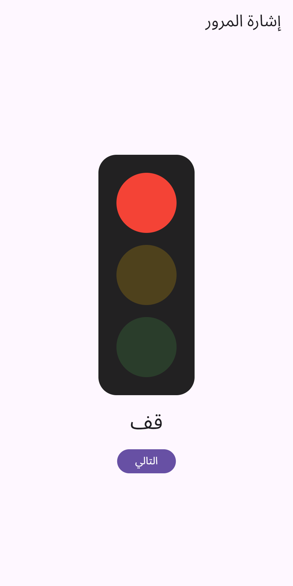
المشروع 5.2: إشارة المرور على الأحمر.
الطرفية
$ flutter test test/traffic_light_test.dart
00:00 +0: loading test/traffic_light_test.dart
00:00 +0: الزر ينقل إلى الضوء التالي
00:00 +1: All tests passed!
المشروع 5.3 · تحدٍّ
تقييم بالنجوم
اكتب Widget قابلاً لإعادة الاستخدام اسمه StarRating يعرض خمس نجوم، ويخبر أباه حين يضغط المستخدم واحدة؛ واستخدمه في صفحة تتذكر التقييم.
ستتدرب على: تمرير دالة إلى Widget (callback)، وValueChanged<int>، وحفظ الحالة في الأب، وإيجاد الـ Widget رقم n في اختبار.
StarRating Widget بلا حالة له حقلان: value (عدد النجوم الممتلئة) وonChanged من النوع ValueChanged<int>، أي دالة تأخذ int.
ابنِ Row من خمسة IconButton بـ for داخل القائمة. النجمة i هي Icons.star حين i <= value، وIcons.star_border غير ذلك. والضغط عليها يستدعي onChanged(i).
اختبرها: find.byIcon(Icons.star_border).at(3) هي النجمة الفارغة الرابعة. اضغطها، ثم pump، وافحص النص ووجود أربع نجوم ممتلئة.
تلميح: هذا نمط ستستخدمه باستمرار: الـ Widget الذي يعرض القيمة لا يملكها. يستقبلها من الأعلى ويبلّغ عن التغيير صعوداً، فيبقى الأب هو المسؤول. وCheckbox وSlider في Flutter نفسه يعملان بهذه الطريقة بالضبط. ولاحظ أن النجمة الأولى في الشاشة العربية هي اليمنى، لأن الصف يبدأ من اليمين.
يجب أن تبدو نتيجتك هكذا:
المشروع 5.3: صفحة التقييم قبل أي ضغطة.
الطرفية
$ flutter test test/stars_test.dart
00:00 +0: loading test/stars_test.dart
00:00 +0: الضغط على النجمة الرابعة يعطي 4
00:00 +1: All tests passed!
تمارين
سهل ارسم شجرة الـ Widgets في lib/contact.dart، من MaterialApp نزولاً إلى كل Icon وText. ما عمقها؟
سهل أي Widget تستخدم لكل من: (أ) 20 بكسلاً حول نص؛ (ب) 20 بكسلاً بين زرين في صف؛ (ج) صندوق أبيض بزوايا مستديرة وظل؛ (د) وضع Widget في وسط الشاشة؟
متوسط أعطِ InfoRow معاملاً اختيارياً color للأيقونة، قيمته الافتراضية التركوازي، واستخدم الأحمر للعنوان.
متوسط بلا حالة أم ذو حالة؟ (أ) عنوان يعرض اسم منتج. (ب) مربع اختيار. (ج) صفحة بمواعيد المقهى الثابتة. (د) مؤقت يعرض الثواني منذ بدء لعبة.
تحدٍّ في like.dart استبدل setState(() { likes++; }) بـ likes++; وحدها، واضغط القلب ثلاث مرات. ماذا ترى؟ والآن اضغط r للتحديث الفوري. ماذا ترى الآن، ولماذا؟
حلول التمارين في آخر الكتاب، وفي مستودع الكود الخاص بالكتاب.
في الفصل 6
الـ Widgets التي صنعتها حتى الآن تجلس في عمود وسط الشاشة. أما الشاشات الحقيقية فتضع الأشياء جنباً إلى جنب، وعلى الأطراف، وبعضها فوق بعض، ويجب أن تناسب جوالاً صغيراً وجوالاً كبيراً وجهازاً لوحياً. الفصل القادم كله عن التخطيط.
6
الفصل 6
تخطيطات تناسب كل شاشة
في هذا الفصل ستتعلم أن
تشرح كيف يقرر Flutter حجم كل Widget ومكانه
ترتّب الـ Widgets في صفوف وأعمدة، وتقسم المساحة الفارغة
تتعرف على الفيضان (overflow)، وتقرأ رسالته، وتصلحه
تضع الـ Widgets بعضها فوق بعض بـ Stack
تترك العناصر تنتقل إلى السطر التالي بـ Wrap
تبني شاشة واحدة تناسب جوالاً صغيراً وجوالاً كبيراً وجهازاً لوحياً
أعطاك الفصل 5 القطع، وهذا الفصل يضعها في أماكنها. الشاشة الحقيقية فيها شريط في الأعلى، وبطاقات جنباً إلى جنب، وسعر مدفوع إلى الطرف الآخر، وشارة على زاوية أيقونة، ويجب أن تبدو صحيحة على جوال ضيق ممسوك عمودياً وعلى جهاز لوحي ممدد على جانبه. ولدى Flutter مجموعة صغيرة من Widgets التخطيط تفعل كل هذا، وقاعدة واحدة بسيطة خلفها. تعلّم القاعدة، فيتوقف التخطيط عن أن يكون تخميناً.
بِت
حين يبدو التخطيط خاطئاً، لا تغيّر الأرقام عشوائياً. اسأل ثلاثة أسئلة: كم مساحة أعطى الأبُ هذا الـ Widget، وكم قرر أن يكون حجمه، وأين وضعه أبوه؟ وهذا الفصل يعلّمك الإجابة عن الثلاثة.
6.1قاعدة التخطيط
يرتّب Flutter شجرة الـ Widgets كلها بقاعدة واحدة، تُلخَّص عادة في سطر واحد:
القيود تنزل، والأحجام تصعد، والأب يحدد الموضع.
يخبر الأب كل ابن بـ القيود (constraints) التي يجب أن يلتزم بها: أصغر وأكبر عرض وارتفاع مسموح له. فالشاشة تعطي التطبيق حجمها، وPadding من 16 تعطي ابنها 32 بكسلاً أقل في كل اتجاه، وSizedBox(width: 300) تعطي 300 بالضبط.
يختار كل ابن حجمه داخل هذه الحدود، بعد أن يسأل أبناءه السؤال نفسه، ويبلّغه صعوداً.
يضع الأب كل ابن: Center في الوسط، وColumn واحداً تحت الآخر، وRow جنباً إلى جنب.
الـ Widget لا يختار موضعه بنفسه، ولا يمكن أن يكون أكبر مما تسمح به قيوده. وكل مشكلة تخطيط تقريباً ستقابلها خطوة من هذه الخطوات تفعل ما لم تتوقعه، والأقسام التالية تعرض أشهرها.
6.2الصفوف والأعمدة
Row يضع أبناءه جنباً إلى جنب، على محوره الرئيسي (main axis) وهو أفقي. وColumn يفعل الشيء نفسه عمودياً. والاتجاه الآخر هو المحور العرضي (cross axis). وخاصيتان تقرران أين يذهب الأبناء: mainAxisAlignment على المحور الرئيسي، وcrossAxisAlignment عليه عرضاً. وهذا التطبيق يعرض الصناديق الملونة الثلاثة نفسها في أربعة صفوف:
الشكل 6.1: الصف نفسه بأربعة اصطفافات. والشريط الرمادي هو مساحة الصف نفسه.
start تجمع الصناديق في البداية، وcenter في الوسط، وspaceBetween تضع كل المساحة الفارغة بينها، وspaceEvenly تعطي كلاً منها مسافات متساوية حوله. وفي الصف الأخير تنقل CrossAxisAlignment.end الصناديق إلى أسفل الشريط الذي ارتفاعه 80 بكسلاً. وBox وLabelled Widgetان صغيران كُتبا لهذا المثال في الملف نفسه؛ وBox يتكرر في الفصل كله. ولاحظ أن الصف يبدأ من اليمين، فالصندوق 1 على اليمين، لأن التطبيق عربي.
6.3تقاسم المساحة: Expanded وFlexible
الصناديق ذات الأحجام الثابتة نادراً ما تملأ الشاشة بالضبط. وExpanded وFlexible يقرران من يأخذ المساحة الباقية:
lib/expanded.dart (جزء)
class ExpandedPage extends StatelessWidget {
const ExpandedPage({super.key});
@override
Widget build(BuildContext context) {
return Scaffold(
body: Padding(
padding: const EdgeInsets.all(16),
child: Column(
mainAxisAlignment: MainAxisAlignment.center,
spacing: 24,
children: [
// Expanded يأخذ المساحة الفارغة؛ وflex يقسمها.const Row(
children: [
Box(1),
Expanded(child: Box(2)),
Box(3),
],
),
const Row(
children: [
Expanded(child: Box(1)),
Expanded(flex: 2, child: Box(2)),
Expanded(child: Box(3)),
],
),
// Flexible: بالعرض الذي يحتاجه، لكن لا أعرض من المساحة الباقية.
Row(
children: [
const Icon(Icons.local_cafe, size: 32),
const SizedBox(width: 8),
const Flexible(
child: Text(
'اسم طويل جداً لمشروب لا يتسع له سطر واحد في الشاشة',
style: TextStyle(fontSize: 18),
),
),
const SizedBox(width: 8),
Container(width: 48, height: 32, color: Colors.teal),
],
),
],
),
),
);
}
}
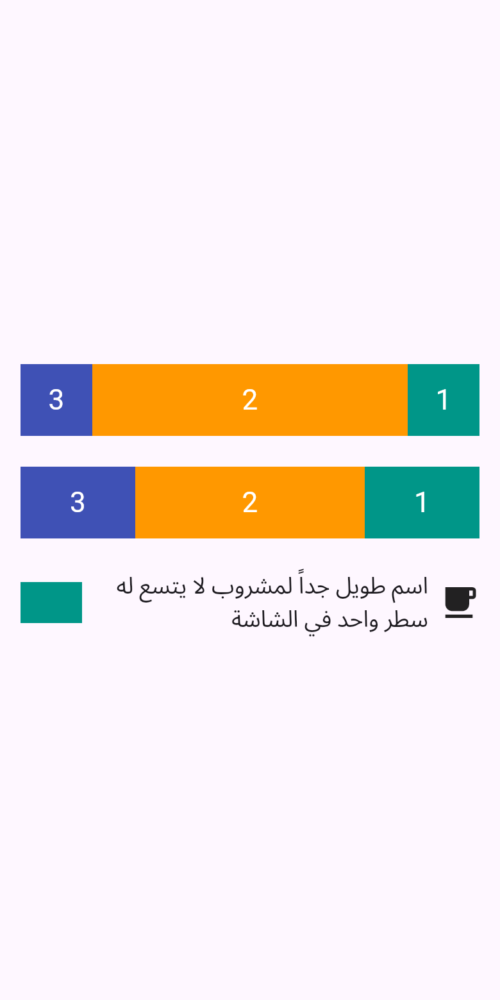
الشكل 6.2: Expanded يملأ، وflex يقسم، وFlexible يترك النص الطويل يلتف.
في الصف الأول يحتفظ الصندوقان 1 و3 بـ 56 بكسلاً، ويجعل Expanded الصندوق 2 يأخذ كل ما بقي.
وفي الثاني الثلاثة كلها ممددة، وflex: 2 تعطي الصندوق 2 نصيبين من المساحة مقابل كل نصيب للآخرَين.
وفي الثالث النص ملفوف بـ Flexible: يستطيع أن يستخدم المساحة الباقية بين الأيقونة والصندوق التركوازي، ولا أكثر، فينتقل إلى سطر ثانٍ بدلاً من أن يدفع الصندوق خارج الشاشة.
والفرق بينهما: Expandedيجب أن يملأ نصيبه، أما Flexibleفيستطيع أن يستخدم حتى نصيبه، ويرضى بأن يكون أصغر.
6.4حين لا يتسع: الفيضان
ماذا يحدث بلا Flexible؟ الـ Row يعطي كل ابن العرض الذي يريده، والنص الطويل يريد أن يكون عريضاً جداً. والاختبارات تعرض هذا أفضل عرض، لأنها تبلّغ عن كل خطأ تخطيط. هذا صف عرضه 300 بكسل فيه أيقونة واسم طويل:
test/overflow_test.dart (جزء)
testWidgets('اسم طويل في صف', (tester) async {
await tester.pumpWidget(
const MaterialApp(
home: SizedBox(
width: 300,
child: Row(
children: [
Icon(Icons.local_cafe),
Text('اسم طويل جداً لمشروب لا يتسع له سطر واحد في الشاشة'),
],
),
),
),
);
});
الطرفية
$ flutter test test/overflow_test.dart
00:00 +0: loading test/overflow_test.dart
00:00 +0: اسم طويل في صف
══╡ EXCEPTION CAUGHT BY RENDERING LIBRARY ╞═════════════════════════════════════════════════════════
The following assertion was thrown during layout:
A RenderFlex overflowed by 1576 pixels on the right.
…
════════════════════════════════════════════════════════════════════════════════════════════════════
00:00 +0 -1: اسم طويل في صف [E]
Test failed. See exception logs above.
The test description was: اسم طويل في صف
00:00 +0 -1: Some tests failed.
Failing tests:
test/overflow_test.dart: اسم طويل في صف
«A RenderFlex overflowed by … pixels»: أي فاض الـ RenderFlex بعدد من البكسلات. وRenderFlex هو الكائن الذي يرتّب Row أو Column، والفيضان (overflow) معناه أن أبناءه يحتاجون مساحة أكبر مما لديه. والرقم كبير لأن الاختبارات ترسم كل حرف مربعاً؛ وفي التطبيق العامل سيكون أصغر، لكن المشكلة هي نفسها. وفي نسخة التصحيح يعرض التطبيق الفيضان خطوطاً صفراء وسوداء على الحافة، لا يمكن أن تفوتك؛ أما نسخة الإصدار فتخفيها، ويُقطع النص ببساطة. والصف نفسه مع Flexible حول النص ينجح:
الطرفية
$ flutter test test/fixed_test.dart
00:00 +0: loading test/fixed_test.dart
00:00 +0: الصف نفسه، مع Flexible
00:00 +1: All tests passed!
6.5الطبقات: Stack
أحياناً يجب أن تجلس الـ Widgets بعضها فوق بعض: عنوان على صورة، أو شارة على أيقونة. وStack يرسم أبناءه واحداً فوق الآخر، والأول في الأسفل:
الشكل 6.3: لافتة عليها شارة في زاويتها وعنوان على طول أسفلها، وشارة على سلة.
الابن الذي بلا موضع يأخذ حجم الـ Stack: هنا يحدد الصندوق البني حجم اللافتة. وPositioned يثبّت ابناً عند حواف الـ Stack: top: 12 على بعد 12 بكسلاً من الأعلى. وPositionedDirectional يفعل الشيء نفسه بـ start وend بدلاً من left وright، فتنتقل الشارة إلى الزاوية اليمنى في التطبيق العربي كما ترى. وإعطاء start وend معاً يمدّ صف العنوان على عرض اللافتة.
أما شارة السلة فتجلس جزئياً خارج الأيقونة، بمواضع سالبة. والـ Stack يقص عادة كل ما يخرج عن حوافه؛ وclipBehavior: Clip.none تترك الشارة تظهر. وهذه الشارة مكتوبة بـ Positioned وright، فبقيت في الجهة اليمنى للأيقونة في النسخة العربية أيضاً: قارن بينها وبين شارة «جديد».
6.6الانتقال إلى السطر التالي: Wrap
الـ Row لا ينتقل إلى سطر ثانٍ أبداً. فحين يكون لديك عدد من العناصر الصغيرة، كالوسوم أو رقائق التصفية، استخدم Wrap: يملأ سطراً، ثم يبدأ التالي.
lib/wrap.dart (جزء)
child: Wrap(
spacing: 8,
runSpacing: 8,
children: [for (final tag in tags.split(',')) Chip(label: Text(tag))],
),
الشكل 6.4: تسع رقائق، في كل سطر ما يتسع له.
spacing المسافة بين الرقائق في السطر، وrunSpacing المسافة بين الأسطر. وعلى شاشة أعرض يضع الكود نفسه رقائق أكثر في كل سطر، دون أي تغيير.
6.7كل أحجام الشاشات
سيعمل تطبيقك على جوالات بعروض كثيرة، ممسوكة عمودياً أو أفقياً، وعلى أجهزة لوحية. وأداتان تخبرانك كم مساحة لديك:
MediaQuery.sizeOf(context) تعطي حجم الشاشة كلها.
LayoutBuilder يعطي قيود المكان الذي يجلس فيه، ويتيح لك بناء Widgets مختلفة لعروض مختلفة. وفضّله: فالـ Widget يجب أن يعتمد على المساحة التي يُعطاها، لا على حجم الشاشة، ليعمل أيضاً داخل نصف جهاز لوحي.
lib/responsive.dart (جزء)
final size = MediaQuery.sizeOf(context);
final held = size.width > size.height ? 'أفقي' : 'عمودي';
final menu = Panel('القائمة', 'لاتيه، شاي، كيك…', Colors.teal.shade100);
final order = Panel('طلبك', '2 × لاتيه', Colors.orange.shade100);
return Scaffold(
body: Padding(
padding: const EdgeInsets.all(16),
child: Column(
crossAxisAlignment: CrossAxisAlignment.stretch,
children: [
Text(
'العرض ${size.width.round()}، الارتفاع ${size.height.round()}، $held',
),
const SizedBox(height: 16),
// LayoutBuilder يخبرنا كم مساحة لدينا؛ ونحن نختار التخطيط.
LayoutBuilder(
builder: (context, constraints) {
// ضيق: عمود واحد. عريض: جنباً إلى جنب.if (constraints.maxWidth < 600) {
return Column(
spacing: 16,
crossAxisAlignment: CrossAxisAlignment.stretch,
children: [menu, order],
);
}
return Row(
spacing: 16,
crossAxisAlignment: CrossAxisAlignment.start,
children: [
Expanded(flex: 2, child: menu),
Expanded(child: order),
],
);
},
),
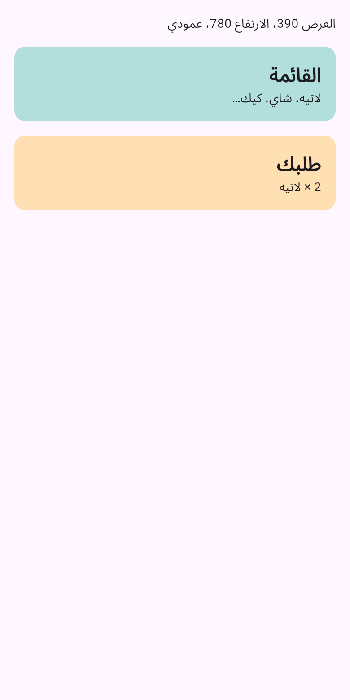
الشكل 6.5: على جوال عرضه 390 بكسلاً: اللوحتان واحدة فوق الأخرى.
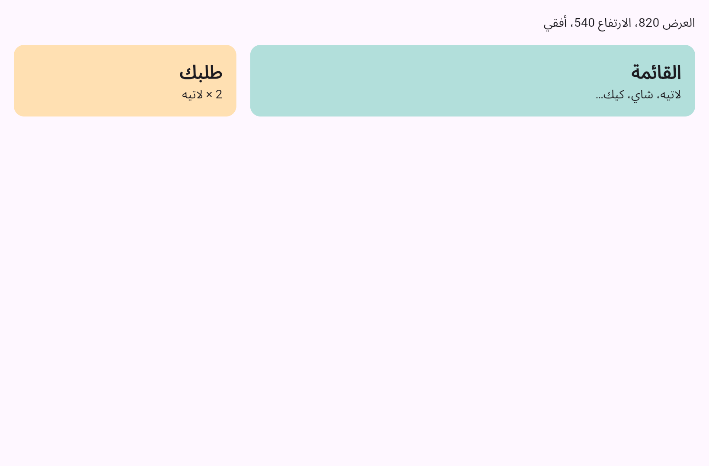
الشكل 6.6: التطبيق نفسه على جهاز لوحي ممسوك أفقياً، بعرض 820 بكسلاً: جنباً إلى جنب، والقائمة بضعف العرض.
السطر الأول من التطبيق يطبع ما تقوله MediaQuery. وتحته يختار LayoutBuilder: تحت 600 بكسل عمود، ومن 600 صف بلوحات Expanded. والرقم 600 نقطة انكسار (breakpoint)، العرض الذي يتغير عنده التخطيط. وإرشادات Material تستخدم 600 حداً بين الجوالات والأجهزة اللوحية، ولهذا تستخدمه تطبيقات كثيرة أيضاً.
6.8مشروع: لوحة المقهى
يريد صاحب المقهى لوحة متابعة: لافتة، وأرقام اليوم الثلاثة، وقسمين، على أي جهاز في يده.
الشكل 6.8: الكود نفسه على جهاز لوحي: القسمان جنباً إلى جنب.
اقرأه من الأعلى، وقاعدة التخطيط في ذهنك:
العمود الخارجي يمد أبناءه على العرض (CrossAxisAlignment.stretch)، فتكون اللافتة بعرض الشاشة.
اللافتة Container بارتفاع ثابت وLinearGradient، وalignment: AlignmentDirectional.bottomStart تضع العنوان في زاويتها السفلى، زاوية البداية.
ثلاث بطاقات Expanded تتقاسم عرض صف الأرقام بالتساوي، على كل شاشة.
LayoutBuilder يضع القسمين واحداً فوق الآخر على الجوال، وجنباً إلى جنب على الجهاز اللوحي.
Stat وSection Widgetان صغيران مستقلان، فيُقرأ كود التخطيط كوصف للشاشة.
أخطاء شائعة
الخطأ
ما يحدث
الحل
نص طويل في Row
فيضان: خطوط في نسخة التصحيح، ونص مقطوع في نسخة الإصدار
لُفّ النص بـ Expanded أو Flexible
Expanded خارج Row أو Column أو Flex
خطأ: «Incorrect use of ParentDataWidget»
لا تستخدمه إلا ابناً مباشراً لها
Column يجب أن يحتضن محتواه
يأخذ كل الارتفاع، وتتمدد البطاقة حوله
mainAxisSize: MainAxisSize.min
استخدام left وright
تخرج التخطيطات العربية معكوسة خطأً
start وend، وWidgets الـ …Directional
اختيار التخطيط بحجم الشاشة
ينكسر الـ Widget حين يوضع في مساحة أصغر
LayoutBuilder، الذي يعطي المساحة المتاحة فعلاً
محتوى تحت النتوء أو الشريط السفلي
نص مخفي خلف أجزاء الجوال
SafeArea
الملخص
القيود تنزل، والأحجام تصعد، والأب يحدد الموضع.
Row وColumn يضعان الأبناء على المحور الرئيسي؛ وmainAxisAlignment وcrossAxisAlignment تضعانهم عليه وعرضاً.
Expanded يملأ المساحة الفارغة وflex تقسمها؛ وFlexible يستطيع استخدام حتى نصيبه.
الفيضان معناه أن الأبناء يحتاجون مساحة أكبر مما أُعطوا؛ اقرأ الرسالة، وأعطِ النص مساحة Flexible.
Stack يضع الـ Widgets طبقات؛ وPositioned وPositionedDirectional يثبتانها عند الحواف؛ وClip.none تتركها تبرز.
Wrap ينقل العناصر إلى أسطر أخرى.
LayoutBuilder يبني تخطيطات مختلفة لعروض مختلفة؛ و600 بكسل نقطة الانكسار المعتادة بين الجوال والجهاز اللوحي. وSafeArea تتجنب النتوءات.
إجابات «اختبر نفسك»: 1. mainAxisAlignment: فالمحور الرئيسي للعمود عمودي. 2. Expanded يجب أن يملأ نصيبه من المساحة الفارغة؛ وFlexible يستطيع أن يأخذ حتى نصيبه، لكنه قد يكون أصغر. 3. لأن start تتبع اتجاه القراءة: فينتقل الـ Widget إلى اليمين في التطبيق العربي دون أي تغيير في الكود.
مشاريع تطبيقية
لكل مشروع، ارسم الشاشة على ورقة أولاً وارسم فوقها الصفوف والأعمدة. ثم اكتب الكود من الخارج إلى الداخل، وشغّله بعد كل طبقة.
المشروع 6.1 · سهل
بطاقة الطقس
اعرض طقس اليوم في بطاقة: أيقونة شمس في البداية، والمدينة وسطران من الوصف في الوسط، ودرجة حرارة كبيرة في النهاية.
ستتدرب على:Row وسطه Expanded، وColumn يحتضن محتواه، ونمط نص من السمة.
وسّط في المحتوى Card بهامش 16 وحشوة 20، فيها Row.
ضع الأيقونة أولاً، ثم SizedBox(width: 16).
الوسط Column داخل Expanded، مصطف إلى البداية، فيه المدينة بخط عريض وسطران تحتها.
وفي الآخر درجة الحرارة بـ Theme.of(context).textTheme.displaySmall.
شغّله. فإن ملأت البطاقة ارتفاع الشاشة كله، فابحث عن العمود المسؤول وأصلحه.
تلميح: الـ Column يأخذ كل الارتفاع المسموح له ما لم تقل mainAxisSize: MainAxisSize.min؛ وداخل صف داخل بطاقة، يجعل هذا البطاقة كلها بطول الشاشة. وقد فعلت النسخة الأولى من هذا المشروع في هذا الكتاب ذلك بالضبط.
يجب أن تبدو نتيجتك هكذا:
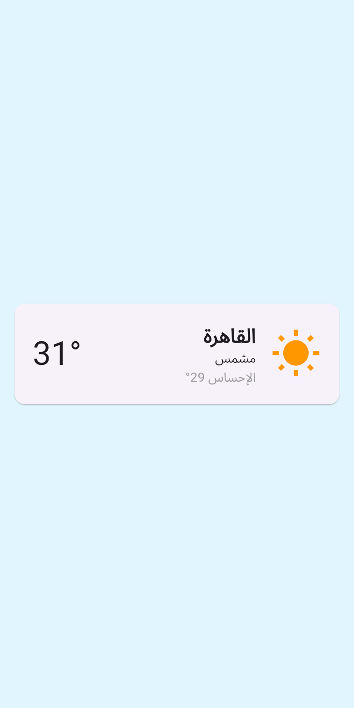
المشروع 6.1: بطاقة الطقس.
المشروع 6.2 · متوسط
سلة بشارة
ضع أيقونة سلة في شريط التطبيق، عليها شارة حمراء تعدّ الأكواب المضافة، وتعرض «9+» فوق التسعة، وتختفي عند الصفر.
ستتدرب على:Stack مع PositionedDirectional ومواضع سالبة، وif داخل الـ Stack، واختبار يضغط عشر مرات.
اكتب CartBadge بلا حالة يأخذ count ويُرجع Stack فيه الأيقونة، وif (count > 0) الشارة فقط.
صفحة ذات حالة تحفظ cups، وتعرض الشارة في actions شريط التطبيق، وفيها زر يضيف واحداً.
اكتب اختباراً: لا شارة في البداية، ثم عشر ضغطات، ثم «9+».
تلميح: لتتأكد أن الشارة غير موجودة في البداية: expect(find.text('0'), findsNothing).
يجب أن تبدو نتيجتك هكذا (بعد ثلاث ضغطات):
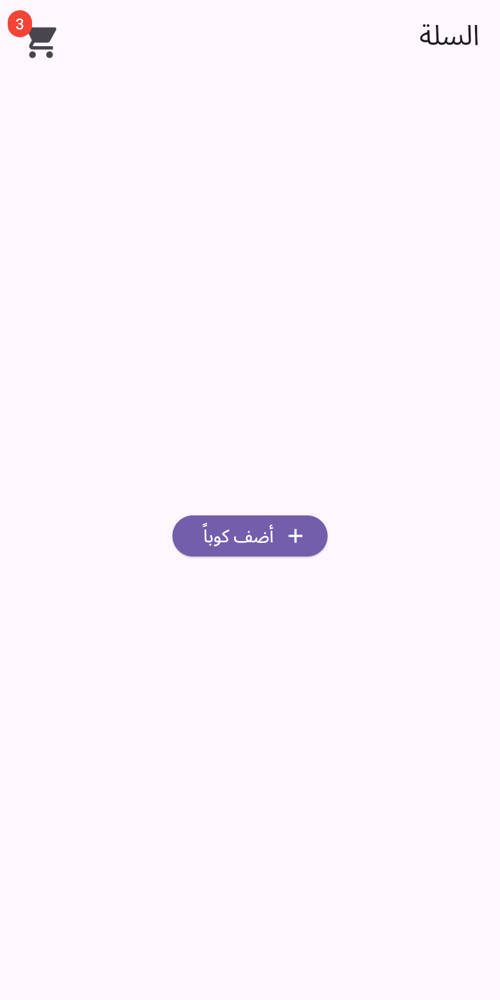
المشروع 6.2: ثلاثة أكواب في السلة.
الطرفية
$ flutter test test/badge_test.dart
00:00 +0: loading test/badge_test.dart
00:00 +0: الشارة تعدّ الأكواب
00:00 +1: All tests passed!
المشروع 6.3 · تحدٍّ
شبكة تناسب الشاشة
اعرض مشروبات المقهى مربعات، بعدد الأعمدة الذي يتسع (اثنان على الأقل)، كل مربع بالحجم نفسه، تملأ العرض بالضبط على الجوال وعلى الجهاز اللوحي.
ستتدرب على:LayoutBuilder، وحساب الأحجام من القيود، وclamp، وWrap بعروض دقيقة.
داخل LayoutBuilder قرّر عدد الأعمدة: عمود لكل 180 بكسلاً من العرض، (constraints.maxWidth / 180).floor()، محصوراً بين 2 و6 بـ clamp(2, 6).
احسب عرض المربع لتملأ المربعات والمسافات بينها العرض بالضبط: العرض، ناقص مسافة لكل فراغ بين عمودين، مقسوماً على عدد الأعمدة.
ابنِ Wrap بتلك المسافة spacing وrunSpacing، ومربعاً لكل مشروب، كل منه Container بذلك العرض وارتفاع بثلاثة أرباعه.
تأكد منه على جوال ونافذة عريضة: عمودان، ثم أربعة.
تلميح: يقدّم الفصل 7 الـ GridView، الذي يفعل هذا للقوائم الطويلة ويتمرر. وفعله مرة بيدك يريك بالضبط ما يحسبه.
يجب أن تبدو نتيجتك هكذا:
على جوال: عمودان
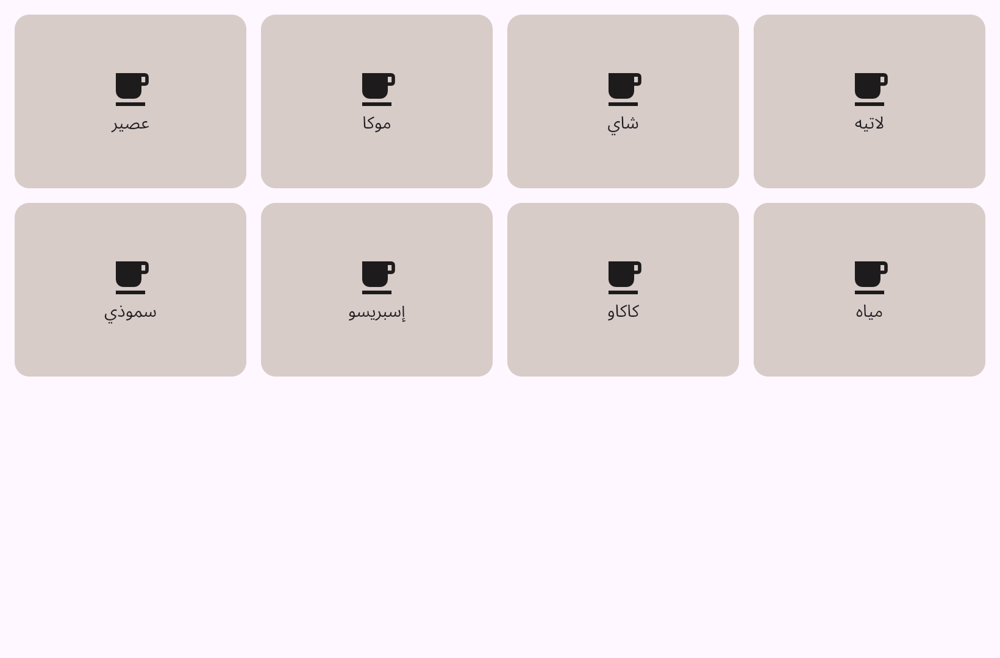
على جهاز لوحي: أربعة أعمدة، من الكود نفسه
تمارين
سهلPadding من 16 من كل الجهات داخل شاشة عرضها 390 بكسلاً. ما أكبر عرض يمكن أن يأخذه ابنها؟ وداخل ذلك SizedBox(width: 500): كم عرضه فعلاً، ولماذا؟
سهل أي Widget وأي خاصية تستخدم لـ: (أ) دفع سعر إلى الطرف الآخر من صف؛ (ب) جعل أحد عمودي صف بضعف عرض الآخر؛ (ج) وضع شريط «نفدت الكمية» فوق صورة؟
متوسط في rows.dart أضف صفاً بـ MainAxisAlignment.spaceAround، واشرح الفرق بينه وبين spaceEvenly بقياس المسافات في صورة شاشتك.
متوسط غيّر اللوحة لتنتقل الأرقام على الشاشات الأعرض من 900 بكسل إلى عمود جانبي، بجانب القسمين. أي Widget يقرر، وأين يوضع؟
تحدٍّ اكتب اختباراً يعرض اللوحة داخل SizedBox(width: 320) (جوال صغير جداً) ويكتشف إن كان شيء يفيض. فإن فاض شيء فأصلحه، واحتفظ بالاختبار.
حلول التمارين في آخر الكتاب، وفي مستودع الكود الخاص بالكتاب.
في الفصل 7
في قائمة المقهى اليوم ثمانية مشروبات، وستكون ثمانين في العام القادم. الفصل القادم يعرض القوائم التي تتمرر ولا تبني إلا ما على الشاشة، والصور من التطبيق ومن الإنترنت، والسمات التي تعطي التطبيق كله شكلاً واحداً، فاتحاً وداكناً.
7
الفصل 7
القوائم والصور والسمات
في هذا الفصل ستتعلم أن
تعرض قائمة تتمرر، بـ ListView وListTile
تعرض ألف عنصر، أو مليوناً، ببناء ما على الشاشة منها فقط
تضيف الصور إلى تطبيقك، وتعرضها في القوائم والشبكات
تعرض صوراً من الإنترنت، مع شيء معقول أثناء تحميلها وإن فشلت
تعطي تطبيقك سمة فاتحة وأخرى داكنة من لون واحد
معظم الشاشات في معظم التطبيقات قوائم: رسائل، ومنتجات، وأغانٍ، وجهات اتصال، وطلبات. ومعظم الباقي شبكات من الصور. يعلّمك هذا الفصل الاثنين، ويضيف الصور نفسها، ويكمل شكل التطبيق بالسمات، ليبدو تطبيقك صحيحاً سواء ضُبط الجوال على الوضع الفاتح أو الداكن. وينتهي بقائمة المقهى: صور حقيقية، وقائمة مبنية من البيانات، ومفضلة يضغطها الزبون.
بِت
أخيراً صار للمقهى صور! رسمتها كلها لهذا الكتاب. وهي تعيش داخل التطبيق، فتظهر في الحال، حتى بلا إنترنت على الإطلاق.
7.1قوائم تتمرر
الـ Column لا يتمرر: حين يطول أبناؤه عن الشاشة يفيضون. أما الـ ListView فعمود يتمرر. ورفيقه الطبيعي ListTile، صف جاهز فيه Widget اختياري leading في البداية، وعنوان title، وعنوان فرعي subtitle تحته، وWidget trailing في النهاية، مرتبة كما تقول إرشادات Material:
يتولى ListTile الأحجام والمسافات والاصطفاف، ويصير قابلاً للضغط بمجرد أن تعطيه onTap. استخدمه كلما ناسب صفُّ القائمة شكلَه؛ ومعظم الصفوف تناسبه.
7.2القوائم الطويلة: ListView.builder
يحتفظ المقهى بكل طلب. وبعد عام تصير الطلبات آلافاً. والـ ListView بقائمة children سيبني Widget لكل منها قبل أن يعرض أولها. أما ListView.builder فيبنيها فقط حين يحتاجها:
تعطيه عدد العناصر itemCount، ودالة itemBuilder تبني العنصر رقم i. ولا يستدعي Flutter تلك الدالة إلا للعناصر التي على الشاشة، أو التي توشك أن تظهر بالتمرير. ويستطيع اختبار أن يعدّ كم يبني فعلاً:
test/builder_test.dart (جزء)
testWidgets('لا تُبنى إلا العناصر الظاهرة', (tester) async {
final built = <int>{};
await tester.pumpWidget(
MaterialApp(
home: Scaffold(
body: ListView.builder(
itemCount: 1000,
itemBuilder: (context, i) {
built.add(i);
return ListTile(title: Text('طلب رقم ${i + 1}'));
},
),
),
),
);
debugPrint('built ${built.length} of 1000');
await tester.drag(find.byType(ListView), const Offset(0, -3000));
await tester.pump();
debugPrint('after scrolling: built ${built.length} of 1000');
expect(built.length, lessThan(100));
});
الطرفية
$ flutter test test/builder_test.dart
00:00 +0: loading test/builder_test.dart
00:00 +0: لا تُبنى إلا العناصر الظاهرة
built 16 of 1000
after scrolling: built 69 of 1000
00:00 +1: All tests passed!
ستة عشر من ألف: ما يتسع له شاشة الاختبار، وبضعة تحتها جاهزة للظهور. وبعد تمرير 3000 بكسل إلى الأسفل يكون قد بنى 69 في المجموع، ويُرمى ما خرج من الشاشة. فقائمة من مليون عنصر تكلّف ما تكلّفه قائمة من عشرين. وtester.drag بالمناسبة يمرر تماماً كما يفعل الإصبع.
7.3الصور والشبكات
الصور التي تأتي مع التطبيق تُسمّى الأصول (assets). ضع الملفات في مجلد داخل المشروع، مثل assets/images/، واذكر المجلد في pubspec.yaml تحت flutter::
المسافات البادئة مهمة في هذا الملف: assets: بمسافتين تحت flutter:، وكل مجلد بأربع مسافات بعد شرطة. وبعد تغيير pubspec.yaml أوقف التطبيق وشغّله من جديد: فالتحديث الفوري لا يلتقط الأصول الجديدة. ثم تعرض Image.asset('assets/images/latte.png') الصورة.
وهنا تُعرض القائمة شبكةً (grid)، في كل بطاقة صورة:
الشكل 7.4: الشبكة نفسها على جهاز لوحي: أربعة أعمدة، بلا أي تغيير في الكود.
GridView.builder للشبكات كـ ListView.builder للقوائم: لا يبني إلا البطاقات التي على الشاشة.
الـ gridDelegate يقرر شكل الشبكة. وSliverGridDelegateWithMaxCrossAxisExtent(maxCrossAxisExtent: 200) تعني «عدد الأعمدة الذي يتسع، ولا عمود أعرض من 200 بكسل»: عمودان على الجوال، وأربعة على الجهاز اللوحي. إنها الشبكة التي بنيتها بيدك في تحدي الفصل 6، في سطر واحد. وchildAspectRatio: 0.8 تجعل كل بطاقة أطول قليلاً من عرضها.
fit: BoxFit.cover تملأ مساحة الصورة كلها وتقص ما لا يتسع؛ وBoxFit.contain تعرض الصورة كلها وتترك أشرطة فارغة. وللصور في البطاقات تكون cover صحيحة دائماً تقريباً.
clipBehavior: Clip.antiAlias على الـ Card تقص الصورة بحسب زوايا البطاقة المستديرة.
7.4صور من الإنترنت
صور المنتجات والمستخدمين والأخبار تأتي عادة من خادم. وImage.network تعرضها. ولأن الشبكة بطيئة وأحياناً غائبة، أعطها دالتي بناء إضافيتين: ما يُعرض أثناء تحميل الصورة، وما يُعرض إن لم تُحمَّل:
loadingBuilder تُستدعى مرة بعد مرة والبيانات تصل؛ وprogress تكون null حين تكتمل الصورة، فتُعرض الصورة نفسها (child). وerrorBuilder تُستدعى حين يفشل التحميل: وصندوق رمادي بأيقونة أفضل بكثير من خطأ أحمر أو فراغ. ويثبت اختبار أن البديل يعمل، لأن الاختبارات لا تصل إلى الإنترنت أبداً: كل طلب في اختبار Widget يفشل، وهذا بالضبط ما نريد فحصه.
test/network_test.dart (جزء)
testWidgets('الصورة التي لا تُحمَّل تُظهر البديل', (tester) async {
await tester.pumpWidget(const MaterialApp(home: Photo()));
await tester.pumpAndSettle();
expect(find.byIcon(Icons.broken_image), findsOneWidget);
});
الطرفية
$ flutter test test/network_test.dart
00:00 +0: loading test/network_test.dart
00:00 +0: الصورة التي لا تُحمَّل تُظهر البديل
00:00 +1: All tests passed!
pumpAndSettle تستمر في بناء الإطارات حتى لا يتغير شيء: هنا، حتى يُعالَج الطلب الفاشل ويظهر البديل.
7.5فاتح وداكن
كثير من الناس يضبطون جوالاتهم على الوضع الداكن، ويتوقعون أن يتبعه كل تطبيق. وFlutter يجعل هذا شبه مجاني: أعطِ MaterialApp سمة theme وسمة darkTheme، فيستخدم المناسبة لإعداد الجوال. وهذا التطبيق يضيف مفتاحاً لتجربة الاثنتين:
lib/themes.dart (جزء)
return MaterialApp(
// من اليمين إلى اليسار: يشرح الفصل 13 الطريقة الكاملة.
builder: (context, child) =>
Directionality(textDirection: TextDirection.rtl, child: child!),
debugShowCheckedModeBanner: false,
// سمتان من البذرة نفسها: فاتحة وداكنة.
theme: ThemeData(colorSchemeSeed: Colors.brown),
darkTheme: ThemeData(
colorSchemeSeed: Colors.brown,
brightness: Brightness.dark,
),
// themeMode تختار أيهما يُستخدم.
themeMode: dark ? ThemeMode.dark : ThemeMode.light,
home: Scaffold(
appBar: AppBar(title: const Text('مقهى بِت')),
body: ListView(
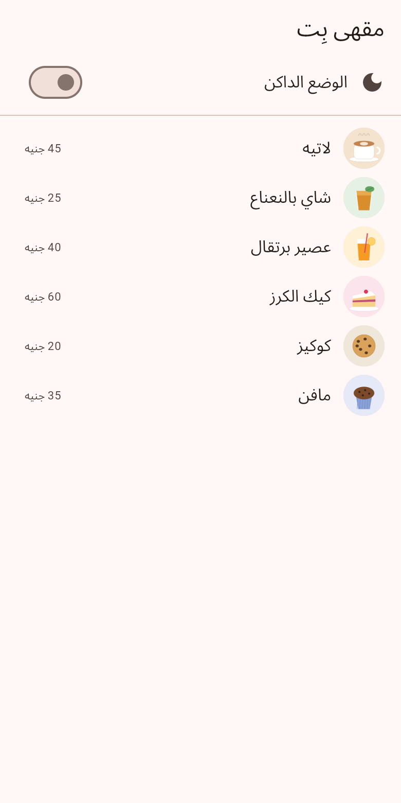
فاتح
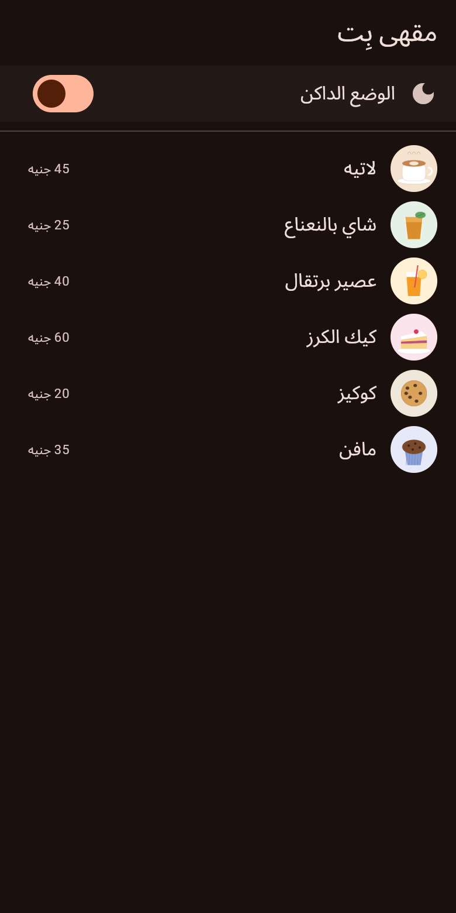
بعد ضغط المفتاح
السمتان تنموان من لون البذرة نفسه، البني؛ وbrightness: Brightness.dark تطلب النسخة الداكنة من المخطط، بنص فاتح على أسطح داكنة، مختارة لتبقى مقروءة. وthemeMode تختار أي السمتين تُستخدم: ThemeMode.system، القيمة الافتراضية، تتبع الجوال؛ وlight وdark تفرضان واحدة. وكل Widget في الصورة غيّر لونه بنفسه، لأن أحداً منها لم يختر لوناً خاصاً: كلها تسأل السمة. وهذه مكافأة نصيحة الفصل 5.
SwitchListTile هو ListTile في نهايته مفتاح، وCircleAvatar(backgroundImage: AssetImage(...)) تعرض صورة في دائرة. ولاحظ AssetImage لا Image.asset: فبعض الـ Widgets لا تريد إلا مصدر الصورة، أي ImageProvider، وترسمها بنفسها.
7.6مشروع: قائمة المقهى
القائمة تجمع الفصل كله: صنف للبيانات، وقائمة مشروبات، وصور من الأصول، وفاصل بين الصفوف، ومفضلة يضغطها الزبون، معدودة في الشريط.
البيانات منفصلة عن الشاشة: صنف Drink وقائمة const. وفي الفصل 11 ستأتي القائمة نفسها من خادم، ولن تتغير الشاشة.
ListView.separated هي ListView.builder مع separatorBuilder: فاصل Divider بين كل صفين، ولا فاصل بعد الأخير.
ClipRRect تستدير زوايا الصورة؛ والعرض والارتفاع الثابتان يبقيان كل الصفوف مصطفة أياً كانت الصورة.
المفضلة Set من الأسماء في الحالة: ضغط القلب يضيف اسماً أو يحذفه بـ setState، والعنوان يعدّها.
أخطاء شائعة
الخطأ
ما يحدث
الحل
Column طويل بدلاً من قائمة
فيضان: يُقطع الأسفل ولا يتمرر
ListView
ListView(children: ...) للبيانات
يُبنى كل عنصر دفعة واحدة؛ والقوائم الطويلة بطيئة
ListView.builder أو .separated
ListView داخل Column
خطأ: «Vertical viewport was given unbounded height»
لُفّ القائمة بـ Expanded
صورة غير مذكورة في pubspec.yaml
«Unable to load asset» بدلاً من الصورة
اذكر المجلد، ثم أعد تشغيل التطبيق
صورة من الشبكة بلا errorBuilder
صندوق خطأ مكان الصورة
أعطِ بديلاً دائماً
ألوان ثابتة في الـ Widgets
نص غير مقروء في الوضع الداكن
خذ الألوان من السمة
الملخص
ListView يتمرر؛ وListTile هو الصف المعتاد، بـ leading وtitle وsubtitle وtrailing.
ListView.builder و.separated لا تبنيان إلا العناصر الظاهرة: استخدمهما لكل قائمة تأتي من البيانات.
الأصول ملفات تأتي مع التطبيق: اذكر مجلدها في pubspec.yaml، وأعد التشغيل، واعرضها بـ Image.asset (أو AssetImage).
GridView.builder مع مفوَّض MaxCrossAxisExtent يضع عدد الأعمدة الذي يتسع له العرض؛ وBoxFit.cover تملأ وتقص.
Image.network تحتاج loadingBuilder وerrorBuilder، ونسخ إصدار أندرويد تحتاج إذن الإنترنت.
أعطِ MaterialApp سمة theme وسمة darkTheme؛ وthemeMode تختار، والـ Widgets التي تأخذ ألوانها من السمة تتبعها وحدها.
إجابات «اختبر نفسك»: 1. لأنه لا يبني العنصر إلا حين يكون على الشاشة أو يوشك أن يظهر بالتمرير؛ وشاشة الاختبار عرضت نحو ستة عشر صفاً. 2. في pubspec.yaml، تحت flutter: ثم assets:؛ ثم أوقف التطبيق وشغّله من جديد، لأن التحديث الفوري لا يضيف الأصول الجديدة. 3. cover تملأ المساحة كلها وتقص الصورة؛ وcontain تعرض الصورة كلها وقد تترك أشرطة فارغة.
مشاريع تطبيقية
كل مشروع يبدأ من قائمة بيانات ويحوّلها إلى شاشة. اكتب البيانات أولاً، ثم الشاشة التي تعرضها.
المشروع 7.1 · سهل
قائمة جهات الاتصال
اعرض ثماني جهات اتصال مرتبة أبجدياً، لكل منها دائرة ملونة فيها حرفها الأول، وفاصل بينها، وعددها في الشريط.
ستتدرب على:ListView.separated وListTile وCircleAvatar، والترتيب بالتتابع، والألوان من قائمة.
اكتب الأسماء في نص واحد تفصلها فواصل، ثم split(',')..sort(). وترتيب Dart للنصوص العربية يتبع ترتيب الحروف العربية.
ابنِ ListView.separated فيه ListTile لكل اسم: CircleAvatar فيها names[i][0]، والاسم، وأيقونة هاتف في النهاية.
لوّن كل دائرة بـ Colors.primaries[i % Colors.primaries.length].shade100.
اجعل الفواصل تبدأ بعد الدائرة بـ Divider(height: 1, indent: 72).
تلميح:Colors.primaries قائمة بألوان Material الرئيسية؛ و% تعود إلى أولها حين تكون الأسماء أكثر من الألوان.
يجب أن تبدو نتيجتك هكذا:
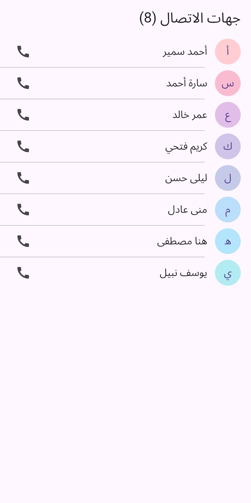
المشروع 7.1: ثماني جهات اتصال مرتبة.
المشروع 7.2 · متوسط
اختر صورك
اعرض صور المقهى الست في شبكة من عمودين، يحدد فيها ضغطُ الصورة الصورةَ (إطار ملون وعلامة صح) ويلغي الضغط الثاني تحديدها، مع عدد المحدد في الشريط.
ستتدرب على:GridView.count وGestureDetector وStack بـ StackFit.expand، وعامل الفرد مع if داخل المجموعة.
احفظ مواقع الصور المحددة في Set<int> في الحالة.
ابنِ GridView.count(crossAxisCount: 2, ...) بمربع لكل صورة. وGestureDetector يجعل أي Widget قابلاً للضغط بـ onTap.
كل مربع Stack بـ fit: StackFit.expand، ليملأ أبناؤه المربع: أولها الصورة المستديرة الزوايا.
للمربعات المحددة فقط، أضف إطاراً وعلامة صح: if (selected.contains(i)) ...[border, tick] تضيف Widgetين بشرط واحد.
خذ الألوان من Theme.of(context).colorScheme: primary للإطار، وonPrimary للعلامة.
تلميح:onPrimary هو اللون المصمم ليُقرأ فوقprimary. ولكل لون في المخطط شريكه «on».
يجب أن تبدو نتيجتك هكذا (بعد ضغطتين):
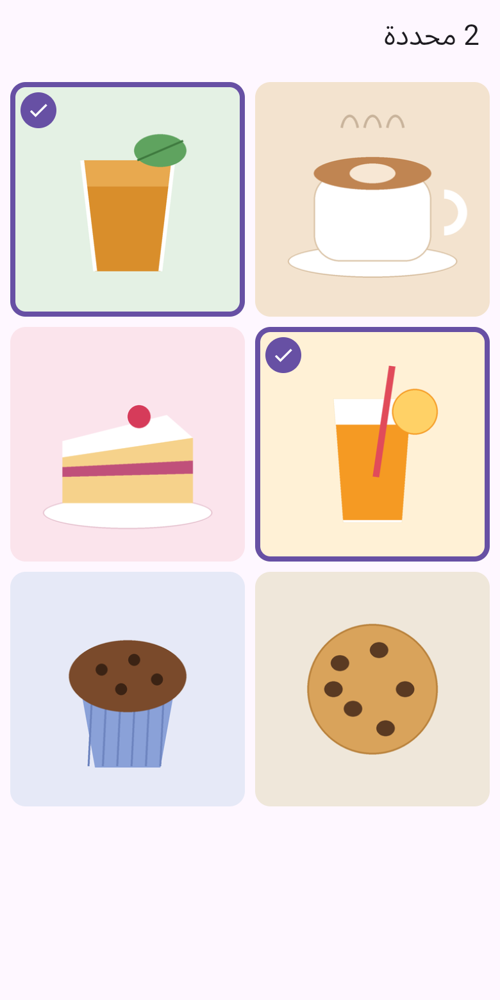
المشروع 7.2: صورتان محددتان.
المشروع 7.3 · تحدٍّ
اسحب للحذف، مع التراجع
اعرض قائمة مشتريات يحذف فيها سحبُ العنصر جانباً العنصرَ، ويعرض شريط في الأسفل التراجع عن الحذف.
احفظ العناصر في قائمة في الحالة، وابنها بـ ListView.builder.
لُفّ كل ListTile بـ Dismissible. وهو يحتاج key يحدد العنصر، ValueKey(items[i])، ليعرف Flutter أي عنصر سُحب حتى بعد تغير القائمة. وأعطه خلفية background حمراء بأيقونة سلة مهملات.
في onDismissed احذف العنصر بـ setState، متذكراً إياه وموقعه.
اعرض ScaffoldMessenger.of(context).showSnackBar(SnackBar(...)) مع SnackBarAction عنوانه «تراجع»، يعيد العنصر إلى موقعه.
اختبره: اسحب العنصر الأول 500 بكسل جانباً، ثم pumpAndSettle، وتأكد أنه اختفى، واضغط «تراجع»، وتأكد أنه عاد.
تلميح: هنا تصير المفاتيح، التي ذكرها الفصل 5، ضرورية. فبلا مفتاح يطابق Flutter الصفوف بمواقعها، وبعد الحذف سيظن أن العنصر التالي هو الذي سُحب.
سهل غيّر builder.dart لتعرض 100,000 طلب. هل يبدأ التطبيق أبطأ؟ ولماذا لا؟
سهل في الشبكة، غيّر maxCrossAxisExtent إلى 120، ثم إلى 400. كم عموداً يعرض جوال عرضه 390 بكسلاً في كل مرة؟
متوسط أضف رأساً فوق قائمة المقهى، «6 أصناف»، يتمرر مع القائمة. (تلميح: ابنِ عنصراً أكثر من عدد المشروبات، واجعل العنصر 0 هو الرأس.)
متوسط اجعل تطبيق السمات يتذكر ثلاثة اختيارات بدلاً من اثنين: فاتح، وداكن، و«مثل الجوال»، بـ SegmentedButton أو ثلاثة RadioListTile. أي قيمة من ThemeMode يستخدمها الثالث؟
تحدٍّ ضع ListView داخل Column تحت Text وشغّله. اقرأ الخطأ، واشرحه بقاعدة التخطيط في الفصل 6، وأصلحه بطريقتين مختلفتين.
حلول التمارين في آخر الكتاب، وفي مستودع الكود الخاص بالكتاب.
في الفصل 8
ضغط مشروب يجب أن يفتح صفحة عنه، وزر الرجوع يجب أن يعيد الزبون إلى القائمة. الفصل القادم ينتقل بين الشاشات: دفع الصفحات وإغلاقها، وتمرير البيانات إليها وتلقي الإجابات منها، والتبويبات، والقوائم الجانبية.
ملحق
حلول التمارين
حاول حل كل تمرين بنفسك قبل أن تنظر هنا. وإن اختلف حلك عن هذا فليس بالضرورة خطأ: معظم المسائل لها حلول جيدة كثيرة. إن كان حلك يعالج الحالات العادية وغير العادية، وتستطيع أن تشرح اختياراتك، فهو حل جيد. والكود الكامل المختبر لكل حل موجود في مستودع الكود الخاص بالكتاب.
الفصل 1
تضيف -v لكل سطر التفاصيل التي وراء الفحص: أين ثُبّت Flutter ومن أي عنوان Git، وإصدارا Dart وDevTools، وأين Android SDK والمنصات وأدوات البناء التي فيه، وأي Java يستخدمها Android Studio، ومسار Chrome، وكل جهاز متصل مع إصدار نظامه. سجّل المسارين، مسار Flutter ومسار Android SDK: فهما أول ما تفحصه حين لا تجد أداةٌ الأخرى.
غيّر 'مرحباً بالتحديث الفوري!' وColors.teal واحفظ؛ ومع التحديث الفوري يظهر كل تغيير في الحال. ولنقل العنوان احذف centerTitle: true,. على أندرويد ينتقل العنوان إلى أول الشريط؛ وعلى الـ iPhone يبقى في المنتصف، لأن العنوان في المنتصف هو أسلوب الـ iPhone نفسه، وFlutter يتبع عادات كل منصة ما لم تقل غير ذلك.
يأخذ أندرويد الاسم الظاهر تحت الأيقونة من android/app/src/main/AndroidManifest.xml، في android:label="hello_bit". ويأخذه iOS من ios/Runner/Info.plist، في القيمة التي بعد CFBundleDisplayName، وقد ضبطها flutter create على Hello Bit. وتغيير اسم التطبيق للمتجرين من الأسباب القليلة لتعديل هذين المجلدين؛ والفصل 15 يفعل ذلك.
غيّر النص المتوقع، مثلاً إلى find.text('مرحباً يا Dart!'). تذكر رسالة الفشل اسم الاختبار، ثم ما كان متوقعاً (Widget واحد بالضبط بهذا النص) وما وُجد (لا شيء)، ثم ملف وسطر الـ expect الذي فشل. اقرأها هكذا: «في هذا الاختبار، في هذا السطر، توقعت هذا، فوجدت ذاك». ولكل فشل اختبار الأجزاء الثلاثة نفسها.
لا توجد إجابة واحدة. القائمة الجيدة فيها خطوة واحدة في كل سطر، والأمر أو الرابط بالضبط، وما يجب أن تراه حين تنجح الخطوة (مثلاً «يعرض flutter doctor العلامة [✓] أمام Android toolchain»)، والمشكلات التي واجهها الناس مع حلولها. وكل صديق يتبعها سيجد خطوة ظننتها واضحة: وهذا هو الغرض من التمرين.
الفصل 2
10 ~/ 3 تساوي 3 (من النوع int)، و10 % 3 تساوي 1، و10 / 4 تساوي 2.5 (من النوع double)، و'ab' * 3 تكرر النص، و'Dart'.length تعدّ حروفه الأربعة:
أيام الأسبوع: const، لأن 7 معروفة قبل أن يعمل البرنامج. والنتيجة في لعبة جارية: var، لأنها تتغير. ووقت فتح التطبيق: final، لأنه يُضبط مرة لكنه لا يُعرف إلا حين يعمل التطبيق. والاسم الذي كتبه المستخدم: final، للسبب نفسه (وإن استطاع المستخدم تعديله لاحقاً فالاسم الجديد قيمة جديدة).
void main() {
var age = 9;
var isMember = true;
var price = switch (age) {
< 4 => 0,
< 13 || >= 65 => 6,
_ => 10,
};
if (isMember) price = price ~/ 2;
print('العمر $age يدفع $price');
}
الطرفية
$ dart run ticket_switch.dart
العمر 9 يدفع 3
الصفر والواحد والاثنان حالات خاصة، وبعدها يقرر باقي القسمة على 100 الصيغة: من 3 إلى 10 جمع («أكواب»)، ومن 11 إلى 99 تمييز منصوب («كوباً»)، وما عدا ذلك، كالمئة، مفرد («كوب»). و_ when ... نمط بدل بشرط، يطابق حين يكون الشرط بعد when صحيحاً:
a ?? b تعطي Dart، لأن a هو null. وb?.length تساوي 4. وa?.length تساوي null، فتعطي ?? -1 القيمة -1. وأول ??= تضع في a القيمة Flutter؛ والثانية لا تفعل شيئاً، لأن a لم يعد null:
answers/null_predict.dart
void main() {
String? a;
String? b = 'Dart';
print(a ?? b);
print(b?.length);
print(a?.length ?? -1);
a ??= 'Flutter';
a ??= 'Kotlin';
print(a);
}
الطرفية
$ dart run null_predict.dart
Dart
4
-1
Flutter
(أ) قائمة: الترتيب مهم، وقد تتكرر الأغنية. (ب) مجموعة: كل رقم مرة واحدة، والسؤال دائماً «هل قُرئت هذه؟». (ج) خريطة من الرمز إلى السعر. (د) قائمة: النتائج تتكرر، والمجموعة ستضيّعها.
كل معامل في copyWith مسمى ويقبل null؛ و?? تحتفظ بالقيمة القديمة لكل حقل لم يُعطَ. والصنف الأصلي لا يتغير أبداً:
answers/copy_with.dart
class MenuItem {
finalString name;
finalint price;
const MenuItem({requiredthis.name, requiredthis.price});
// copyWith: صنف جديد مثل هذا، مع تغيير بعض الحقول.
MenuItem copyWith({String? name, int? price}) =>
MenuItem(name: name ?? this.name, price: price ?? this.price);
@override
String toString() => '$name ($price)';
}
void main() {
const latte = MenuItem(name: 'لاتيه', price: 45);
var friday = latte.copyWith(price: 36);
print(latte);
print(friday);
print(latte.copyWith(name: 'شاي', price: 15));
}
الطرفية
$ dart run copy_with.dart
لاتيه (45)
لاتيه (36)
شاي (15)
putIfAbsent تُرجع قائمة المفتاح، وتنشئ قائمة فارغة أول مرة، فسطر واحد ينشئ ويضيف معاً. والحرف الأول في النص العربي يُقرأ كما في الإنجليزي، بـ w[0]:
answers/group.dart
void main() {
var words = ['تفاح', 'توت', 'موز', 'كرز', 'مانجو'];
var groups = <String, List<String>>{};
for (var w in words) {
groups.putIfAbsent(w[0], () => []).add(w);
}
print(groups);
}
اسم اليوم حقل يُعطى لكل قيمة، وisWeekend getter يقارن this، أي القيمة نفسها:
answers/weekday.dart
enum Day {
saturday('السبت'),
sunday('الأحد'),
friday('الجمعة');
finalString label;
const Day(this.label);
boolget isWeekend => this == Day.friday || this == Day.saturday;
}
void main() {
for (var d in Day.values) {
print('${d.label}: ${d.isWeekend ? 'عطلة' : 'يوم عمل'}');
}
}
الطرفية
$ dart run weekday.dart
السبت: عطلة
الأحد: يوم عمل
الجمعة: عطلة
أضف monday('الاثنين')، فيبقى كل شيء يُترجم ويعمل: الحلقة على Day.values تلتقط اليوم الجديد، وisWeekend تقول بحق إنه يوم عمل. ولو كانت isWeekend switch يذكر كل الأيام، لأشار المترجم إليها: وفي الحالتين لا يُنسى شيء بصمت.
الفصل 4
A وD أولاً، لأن main تعمل حتى أول await فيها قبل أي شيء مجدوَل. ثم B، عمل بلا تأخير، ثم C بعد 50 جزءاً من الثانية، وأخيراً E بعد 100:
يُطبع الـ Future نفسه لا الاسم، لأن أحداً لم ينتظره. علّم الدالة المستدعية بـ async وانتظر الاستدعاء بـ await:
answers/instance.dart
Future<String> fetchName() async => 'Bit';
Future<void> main() async {
var name = fetchName();
print(name);
print(await fetchName());
}
الطرفية
$ dart run instance.dart
Instance of 'Future<String>'
Bit
كل عملية تنتظر قيم الـ Stream كلما وصلت؛ وtoList وfold تعطيان Future بالنتيجة النهائية:
answers/stream_ops.dart
Future<void> main() async {
var orders = Stream.fromIterable([45, 15, 20, 60, 15]);
var big = await orders.where((p) => p >= 20).map((p) => p + 5).toList();
print(big);
var sum = awaitStream.fromIterable([45, 15, 20]).fold(0, (s, p) => s + p);
print(sum);
}
الطرفية
$ dart run stream_ops.dart
[50, 25, 65]
80
كل then تصير await ومتغيراً؛ والنتيجة واحدة، والكود يُقرأ بالترتيب:
answers/then_chain.dart
Future<int> price(String item) async => item.length * 10;
Future<int> withService(int p) async => p + p ~/ 10;
void withThen() {
price('latte').then(withService).then((total) => print('then: $total'));
}
Future<void> withAwait() async {
var p = await price('latte');
var total = await withService(p);
print('await: $total');
}
Future<void> main() async {
withThen();
await withAwait();
}
الطرفية
$ dart run then_chain.dart
then: 55
await: 55
عاملان يتشاركان طابوراً واحداً. كل منهما يأخذ القهوة التالية، ويحضّرها، ويعود لأخرى، فلا تُحضَّر أكثر من قهوتين في أي لحظة. وخمس قهوات من 0.3 ثانية تستغرق 0.9 ثانية بدلاً من 1.5:
answers/pool.dart
// الثواني منذ بداية main، بأعشار الثانية: النتيجة نفسها على كل جهاز.final watch = Stopwatch();
String clock() => '${(watch.elapsedMilliseconds / 1000).toStringAsFixed(1)} ث';
Future<void> brew(int n) async {
awaitFuture.delayed(Duration(milliseconds: 300));
print('${clock()} #$n جاهز');
}
// قهوتان على الأكثر في وقت واحد: مكان في الآلة لكل عامل.Future<void> worker(List<int> queue, String name) async {
while (queue.isNotEmpty) {
var n = queue.removeAt(0);
print('${clock()} الآلة $name: #$n');
await brew(n);
}
}
Future<void> main() async {
watch.start();
var queue = [1, 2, 3, 4, 5];
awaitFuture.wait([worker(queue, 'A'), worker(queue, 'B')]);
print('${clock()} انتهى');
}
ومشاركة القائمة آمنة فقط لأن Dart تشغّل شيئاً واحداً في كل لحظة: فلا يمكن أن يأخذ العاملان القهوة نفسها، لأن removeAt تعمل كاملة قبل أن يأتي دور العامل الآخر.
الفصل 5
MaterialApp ← Scaffold ← (AppBar ← Text) و(Padding ← Column ← ثلاثة InfoRow). وكل InfoRow ← Padding ← Row ← Icon وSizedBox وText. وإن عددت MaterialApp المستوى الأول، فأعمق الـ Widgets، أيقونات الأسطر ونصوصها، في المستوى الثامن (والـ Directionality الذي يضيفه builder مستوى آخر فوق الشاشة). والشاشات الحقيقية كثيراً ما تبلغ عشرين أو ثلاثين مستوى؛ وهذا طبيعي، ولهذا تُبقي الـ Widgets الصغيرة من صنعك الكود مقروءاً.
(أ) Padding(padding: EdgeInsets.all(20), child: ...). (ب) SizedBox(width: 20) بينهما، أو spacing: 20 في الصف. (ج) Container (أو DecoratedBox) بـ BoxDecoration فيها color: Colors.white وborderRadius وboxShadow؛ أو ببساطة Card. (د) Center.
أضف حقلاً final Color color; والمعامل this.color = Colors.teal إلى المُنشئ (القيمة الافتراضية تُبقيه اختيارياً، ويبقى المُنشئ const لأن Colors.teal ثابت). وفي build استخدم Icon(icon, color: color). وفي الصفحة: InfoRow(icon: Icons.place, text: '...', color: Colors.red).
(أ) بلا حالة: يعرض ما يُعطى له. (ب) ذو حالة، أو الأفضل: بلا حالة يأخذ قيمته وcallback من أبيه، كالتقييم بالنجوم في المشروع 5.3: وهكذا يعمل Checkbox في Flutter. (ج) بلا حالة: لا شيء يتغير. (د) ذو حالة: الثواني تتغير كل ثانية، والـ State يحفظ أيضاً المؤقت الذي يعدّها.
لا يتغير شيء على الشاشة: فـ likes تصير 3 فعلاً، لكن أحداً لم يخبر Flutter أن يبني الـ Widget من جديد. والتحديث الفوري يعيد بناء كل الـ Widgets محتفظاً بالحالة، فبعد r تعرض الشاشة فجأة 3 إعجابات وقلباً ممتلئاً. القيمة كانت صحيحة طوال الوقت؛ الصورة وحدها كانت قديمة. وهذا بالضبط ما تمنعه setState.
الفصل 6
390 − 16 − 16 = 358 بكسلاً. والـ SizedBox(width: 500) تطلب 500، لكن الابن لا يمكن أن يكون أكبر من قيوده، فعرضها 358. القيود تنزل، والـ Widget لا يختار حجماً إلا داخلها.
(أ) Spacer() قبل السعر (أو mainAxisAlignment: MainAxisAlignment.spaceBetween في الصف، أو Expanded على ما قبله). (ب) Expandedان، مع flex: 2 على الأعرض. (ج) Stack فيه الصورة أولاً والشريط في Positioned أو PositionedDirectional.
spaceAround تعطي كل ابن المسافة نفسها على جانبيه، فتكون المسافتان عند الطرفين نصف المسافات بين الأبناء. أما spaceEvenly فتجعل كل المسافات متساوية، والطرفان معها. ومع ثلاثة صناديق من 56 بكسلاً في صف من 358، يبقى 190 بكسلاً فارغاً: spaceEvenly تصنع أربع مسافات من 47.5، وspaceAround تصنع مسافتين طرفيتين من نحو 31.7 ومسافتين وسطيين من نحو 63.3.
LayoutBuilder حول كل المحتوى تحت اللافتة هو الذي يقرر. تحت 900 بكسل يُرجع عمود اليوم (صف الأرقام ثم القسمين)؛ ومن 900 يُرجع Row فيه الأرقام في Column ضيق على الجانب (مثلاً داخل SizedBox(width: 220)) والقسمان في Expanded بجانبه. ونقاط الانكسار تتداخل: فالـ LayoutBuilder الداخلي للقسمين ما زال يقرر بالعرض الذي يُعطاه هو.
اعرض const MaterialApp(home: SizedBox(width: 320, child: Dashboard())) في testWidgets بلا أي expect: فأي فيضان يُبلَّغ استثناءً ويُفشل الاختبار، كما في القسم 6.4. وعند 320 بكسلاً يصير عرض كل بطاقة من البطاقات الثلاث نحو 96 بكسلاً؛ فإن لم يتسع رقم أو عنوان، فصغّر العنوان، أو اسمح له بالالتفاف، أو اعرض رقمين في كل صف تحت نقطة انكسار. والاحتفاظ بالاختبار يعني أن اللوحة تُفحص عند هذا العرض مع كل تغيير.
الفصل 7
يبدأ بالسرعة نفسها. فـ itemCount مجرد رقم؛ ودالة البناء ما زالت تُستدعى للصفوف القليلة التي على الشاشة، سواء كانت الطلبات ألفاً أو مئة ألف. أما البطيء فهو إنشاء 100,000 كائن بيانات قبل عرض القائمة، ولهذا تحمّل التطبيقات الحقيقية القوائم الطويلة صفحة بعد صفحة (الفصل 11).
يقسم Flutter العرض الذي داخل الحشوة، 366 بكسلاً، على الحد الأقصى مضافاً إليه المسافة، ويقرّب إلى الأعلى: مع 120، 366 ÷ 132 نحو 2.8، فتكون 3 أعمدة بعرض نحو 114 بكسلاً لكل منها. ومع 400، 366 ÷ 412 أقل من 1، فيكون عمود واحد بعرض الشاشة. (ومع 200 في الفصل، 366 ÷ 212 تعطي عمودين على الجوال، وعلى الجهاز اللوحي 796 ÷ 212 تعطي 4.)
استخدم itemCount: drinks.length + 1. وفي itemBuilder أرجع الرأس حين i == 0، مثلاً Padding(padding: EdgeInsets.all(16), child: Text('${drinks.length} أصناف'))، وإلا فأرجع صف drinks[i - 1]. وكل ما يقرأ القائمة بالموقع يجب أن يستخدم i - 1؛ ونسيان ذلك هو الخطأ الكلاسيكي في هذا النمط.
احفظ ThemeMode في الحالة بدلاً من bool، بادئاً بـ ThemeMode.system، التي تتبع إعداد الجوال نفسه. وSegmentedButton<ThemeMode> بثلاثة أجزاء (فاتح، والجوال، وداكن) يضبطها بـ setState، وMaterialApp(themeMode: mode, ...) تستخدمها مباشرة. وحفظ الـ enum بدلاً من bool يعني لا تحويل ولا حالات مستحيلة.
يقول الخطأ إن منطقة العرض العمودية أُعطيت ارتفاعاً غير محدود. فالـ Column يعطي أبناءه ارتفاعاً بلا حد (فهو مستعد أن يطول)، والـ ListView يريد أن يكون بأطول ما يُسمح له، فلا حجم له. أصلحه بلفّ القائمة بـ Expanded، فتأخذ بالضبط الارتفاع الباقي في العمود؛ أو بإعطائها ارتفاعاً ثابتاً بـ SizedBox(height: 300, child: ListView(...)). (وطريقة ثالثة، shrinkWrap: true، تجعل القائمة تقيس كل أبنائها، فتضيع فائدة بناء الظاهر وحده: تجنبها للقوائم الطويلة.)